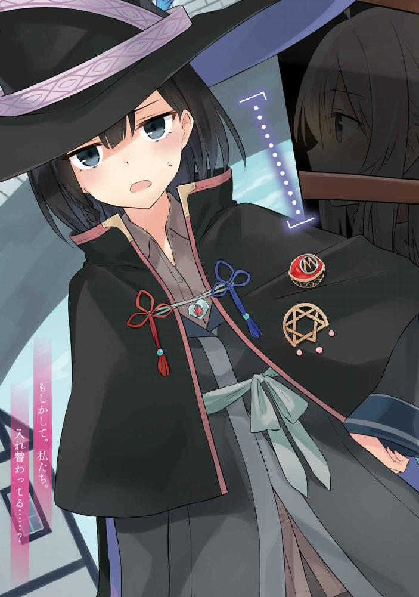

| 魔女の旅々５ (GAノベル) | |
| 白石 定規 | |
| SBクリエイティブ株式会社 (2017) | |


魔女の旅々５
白石定規

本書に掲載されているコンテンツの著作権等の知的財産権およびその他すべての権利は、ＳＢクリエイティブ株式会社または正当な権利を有する第三者に帰属します。
本書の内容を権利者の許諾なく複製・複写・翻案・放送・出版・データ配信（送信可能化を含む）などすることはできません。
カバー・口絵 本文イラスト
あずーる
「──それでですね、私はそのとき、彼女に抱きしめられまして......、ああ、これでお別れなんだなって、思ったんです。寂しくもありましたけれど、でも、私はあてもなく旅をするだけの旅人で、彼女はこれから自分の過去と未来のために旅をしなければなりませんでしたから。お別れをしなければなりませんでしたから──」
秋の冷たい風が窓ガラスを叩く古民家。
周辺に家はなく、窓の外はただ紅葉と黄葉が広がるばかりのはずですが、外からの音はやけに大きく響いていて、目には見えない何かが彼女の話を妨害しようとしているようにも感じられました。
うるさくてかないません。多少は落ち着いてほしいものです。
しかし長話は終わりません。長く長く、灰色の髪の彼女は語り続けます。
彼女の口からこぼれる言葉は、今まで辿ってきた旅の思い出そのもの。思い出話は花が咲くものですから、時間を忘れてしまったとしても、それは仕方のないことでしょう。
「............」
依然としてがたがたとうるさい窓を睨みつけた灰色の髪の彼女は、そこで、とっくに日が沈んでしまっていることに気が付きました。
話し始めたのは昼間のことでしたから、もしかして半日ずっと喋り倒していたのでしょうか？
やだ、私の話、長すぎ......？
などと。
さすがに多少は反省して、反対側に座る彼女に「......ごめんなさい。ついつい喋りすぎちゃいました」と向き直った魔女は、一体誰か。
そう、私です。
「──ううん、全然。もっと聞かせて？」
対面する彼女は、春の浅瀬のように鮮やかな蒼の髪を揺らしながら、首を傾け、わずかに笑みを漏らしていました。
真っ直ぐに向けられた淀みのない瞳に、ほんの少しだけたじろいでから、私はソファの傍らに置いていた日記帳を開きます。
ぱらぱらとめくりながら、どこかに彼女を満足させられるような物語はないものかと探していました。
「──えっと、それじゃあですね、妹を探すために筋肉まみれになった男の話──」
「あ、それは昨日聞いた」
「............」そうでしたか。「では猫まみれの国の話を──」
「それも聞いたね」
「............」そうでしたっけ。「では私が髪を切られた時の話──」
「聞いた」
「............」なんだと。「じゃあ何なら聞いてないんですか」日記帳に隠し持っていたネタをあらかた封殺されたせいで不貞腐れる私でした。
「何を聞いていないかは私には分かりかねるかも」
呆れたとでもいうようにわざとらしく肩をすくめる彼女でした。
「じゃあ逆にどの話なら聞いたんですか」
「んとね──」
口元に指を添えながら天井を仰ぎ見る彼女でした。ぽつり、ぽつりと、私が今までに語った物語たちを羅列していきます。
それは例えば私が魔法使いしかいない国で魔導士さんに魔法を教えて差し上げた物語であり、その彼女と再会した物語であり、師匠との物語でもあり、それから旅先のいたるところで人との出会いと別れを繰り返した、私の今までの旅路でした。
「──それとさっきのアムネシアさんとの話が最後かな。話漏らした物語はない？」
「............」
彼女の言葉に合わせて日記を読み返してみましたが、どうやら私は日記に記している部分に関してはほとんど語り尽くしてしまったようでした。
なるほどなるほど。
アムネシアさんとの別れを経てからも色々とありました。
彼女のことを記したページのあとにも、私の物語は続いています。恐らくここから先の物語ならば彼女も聞いたことはないでしょう。
「......一応、ありますね」
「だろうね」
見透かしたように頷く彼女でした。
「聞きたいですか？」
「当然かも」
念のために尋ねてはみましたが、彼女はすぐにそのように切り返してきました。もう夜も更けてきたことですし、できればこれ以上延々と語るのは避けたかったのですけれど......。
お腹減ってきましたし。あと若干眠いですし。喉渇いたし。かったるいし。
「イレイナ。早く早く！」テーブルをぱんぱんと叩く彼女でした。
「はいはい」
それでは僭越ながら──と私は日記を読み始めました。
それはここ最近、私の身に起きた物語であり、要するに私の旅の記憶でした。つい最近のことですし、わざわざ日記を開く必要もないのですけれど、けれど私は目線を日記に落としていました。
彼女の真っ直ぐすぎる視線から逃れるためです。
──彼女。
淡い青の髪を頭の後ろで一つに結んでさらりと伸ばした彼女は、私と同い年の、ただの少女。魔法使いでも何でもない、ごく普通の少女でした。
ただ一つ他人と違う点を挙げるのならば、私の旅の話をやたらと聞きたがる点でしょうか。
私が話し始めると、彼女はいつも決まって深い青の瞳をこちらに無遠慮に向けてくるのです。わずかに高揚しながら、何度も頷くのです。
まるで恋に恋する乙女のよう。
まるで外の世界を知らない箱入り娘。
「......あの、アネモネさん。あまり見ないでもらえますか」恥ずかしいんですけど。
「おかまいなく！ さ、私にお話を聞かせて？」
「............」
おかまいするんですけど......。
まあ、言っても無駄でしょうか。今まで何度となくこのやり取りをしたことを覚えています。けれど彼女は「仕方ないでしょ面白いんだから」と開き直って聞かないのです。
こちらから幾ら申し開きをしても無駄だということは既に分かり切っていました。
「......はあ」
だから私は、呆れながらも、物語を語るのでした。
これは私の、出会いと別れの物語。
鳥籠を模した建物の玄関。
その重い扉を開いた先には、薄暗い空間が広がっていました。むせ返るような鳥の臭いが充満しており、一歩進むごとに、その臭いは濃さを増していきます。
壁一面には鳥籠がずらりと並んでいて、鳥たちがクルクルポーポーと大合唱をしておられました。やかましくてたまりません。
こんなところで快眠できる人がいるとするのならば、それはよほど耳が遠いのか、もしくは死人でしょう。
「............！」
だから、私はその女性を見つけたときには、もしや大変な事態に片足を突っ込んでいるのかもしれない──などと焦りを覚えたものでした。
大きな部屋の中央に、一人の女性が倒れていたのです。
頭の上に斜め四十五度を向いたツバ付き帽子を被った薄緑のショートカットさんでした。汗や汚れによって、髪は細く枝分かれしながら、白い肌にぺたりとくっついています。
生気を失った虚ろな瞳は金色。
着込んでいる服は恐らく、この仕事の制服でしょう。深緑のコートとスカートを着込み、真っ赤なバッグを肩から提げていました。
一体何があってこんなところで倒れているのでしょうか──。
「だ、大丈夫ですか！」
すぐさま駆け寄り、私は彼女を抱きかかえました。
「一体何があったんですか......？ もしかして誰かに襲われたとか──」
すると彼女は震えた手で、一枚の紙切れを、私の胸元に押し付けました。
──それを読んでほしい。
彼女がそう願っているのが、私の胸には伝わりました。だから、私は頷き、それを受け止めて開きます。
中には、最後の力を振り絞って書いたのか、這った虫のように震えた文字でこのように刻まれていました。
『マジやってらんねぇ。もう死にそう。眠る暇ないし食べる暇ないし何もかも疲れた。何このブラック企業。とりあえず永眠したい。どうか起こさないでください』
実にネガティブ感満載な文字の羅列は、シリアスに傾いていた場面を完全にめためたにしました。
『お仕事代わっていただけないでしょうか......』
そのように綴られた紙切れを彼女が渡してきたのは、その直後のことでした。
「......え、いやです」
『そこをなんとかマジでおねがいします』
「......ええー」
どうやら大変な事態などではなく、単なる面倒ごとに巻き込まれただけらしいと早くも察した私がそこにはいました。
○
数時間前。
「ようこそ！ ここは城下街フリージア！ 歓迎します、魔女様！」
門兵さんの敬礼に軽くお辞儀を返しながら、私はその国の門をくぐりました。
城下街と名を冠するだけあって、大通りの遥か先には、そびえ立つ王城の姿がありました。真っ直ぐと伸びた塔が並び、雲一つとない青々とした空を刺しています。
国を丸ごと囲う城壁の中にある街並みは、その王城に遠慮するように、あるいは傅くように背を低くして立ち並んでいます。赤、青、黄色に塗られた壁、あるいは苔生したレンガで造られた街並みは、統一感こそないものの、むしろそのちぐはぐな有様が妙に綺麗で、街並みを歩く私の顔色には笑みが含まれていたと思います。
けれどそれは恐らく、単に美しいからだけではなかったと思います。
「......ここが文通の国ですか」
この国に与えられた別名がそれでした。
どこぞで噂に聞いた国を訪れたことへの達成感と、それが予想通りの面白き場所であったことが、私を自然と笑みにさせていたのかもしれません。
文通の国。
などと呼ばれているだけあって、国の空には、伝書鳩がぱたぱたと羽を広げて飛び交っていました。それぞれが首から小さなバッグを下げており、頭には小さなつば付き帽子をちょこんと載せていました。
彼らの一羽は民家の窓をこんこんと叩いてから手紙を差し込み。家から家へと飛び回り。あるいはとある民家の屋根に止まって羽を休めながらクルクルと鳴き。あるいはベンチで休むおじいさんから餌を貰い。パン屋のおじさんからパンくずを貰い。喫茶店のお姉さんからパンくずを貰い。露店で買い物をしていた魔女からもパンくずを貰っていました。パンくず貰ってばっかです。
ところで話は変わりますが、買ったばかりのパンをちぎってあげる気前よき魔女とは一体誰か。
そう、私です。
「いい国ですねえ......」
私はパンをかじりながら、ぼんやりと呟きました。私は猫以外の生き物に対してはわりと寛容なほうなのです。猫が相手だったらこうはいきません。むしろ全力を挙げて逃げます。
「魔女さん、あんたも一週間後のパレード目当てでこの国に来たんかい？」
露店の前でぼうっとしていると、つい先ほど私から銅貨を受け取った露店のおばさんは、私に首をかしげていました。
「パレードって何です？」
パクパクもぐもぐながらに振り返る私。
「おや？ 知らんのかい？ てっきりこのタイミングで来たもんだから、アレが目当てだったと思ったんやがねえ」言いながらおばさんは、くい、ワイルドな感じに親指で背中の向こうを差します。その向こうはただの民家の壁のように見えましたが、チラシが張り付けてありました。
『王女プルメリア様の生誕祭！ 目前に迫る！』
などという文字が綴られたチラシには、こちらに向けて冷たいまなざしを向ける一人の女性の写真がありました。桃色の髪は前髪から長く伸びた後ろ髪まで毛先がぱっつんと折り目正しく切りそろえられており、なんとなくそれだけで言いようのない品のよさを感じました。
写真を一目みただけでもすぐに分かる程度に彼女は顔立ちが整い過ぎていました。恐らく王女などという冠をつけていなくとも、彼女が街を歩いていれば夢中になる男性は後を絶たないのではと思えるくらいには。
「......王女さんの生誕祭に来る人はわりと多いんですか」
私の言葉におばさんは然りと頷きます。
「そりゃそうよ。見ての通り王女様は美人やからねえ。毎年、周りの色々な国から王子やら大企業のご令息やらなにやらが土産もんをひっさげて訪れる程度には人気さね」
「ふむふむ」
「でも王女様は周りの男どもにまったく興味ないみたいでねぇ、何を貰っても、どんな素敵な男が現れようとも、まるで靡かんのよ。それどころか、まるでゴミを見るみたいに冷たくあしらうくらいさね。そういう身持ちの固いさまも人気の秘訣なんやろうなぁ」
「ははぁ」
「美人はええよなぁ。顔立ちが綺麗なだけで男がなんでもくれるんやから」
「そうですねえ」
ちなみに私にもそういった経験がないわけでもありません。かつてはちやほやされるあまりに調子に乗って、私は美人だなどと心の中あるいは日記の上でそのような発言を繰り返していたような気がしますが、最近は諸々あって大人になりましたので、そのようなナルシシズムは鳴りを潜めておられますけれど。
「ま、そんな感じの王女様の誕生日を祝って一週間後は丸一日パレードが開かれるってことやね」
気になるなら見てみるとええよ──とおばさんは言って、パンをもう一つ私に手渡してきました。気が付けば私は購入したぶんのパンは食べ終わってしまっていて、なるほど気前のいいおばさんは一つサービスをしてくれたようです。
私も美人ですよと言外に語っているように思える所作でした。
「あ、どうも」
やっぱり褒められると調子に乗っちゃうタイプのあほな私は、素直にこれを受け取り、ぱくりと咥えました。
「おいしいです」美人って得ですねえ......。
私が感慨にふけっていると、おばさんは手をすっと出し、
「はい銅貨もう一枚ちょうだいね」
と一言。
「......これサービスじゃなかったんですか？」
「あ？ 何言ってんだい。あんた別に美人やないやろ。てか女同士やし」
「............」
やっぱ調子に乗るもんじゃないですね......。
○
程なくして、私は宿屋を探すことにしました。
が、さすがに人気の王女様の誕生日が目前に迫っているというだけあり、どこの宿屋も既に予約でいっぱいでした。飛び込みで素泊まりを所望する私に待ち受けていたのは「はー？ 予約とってない？ 泊まれるわけねえじゃん馬鹿かよ野宿しろ」などという心境に満ち溢れた宿屋の主人たちによる形式的なお断りの連続でした。
もしやこのまま寒空の下で眠ることになるのか。
焦りながら宿屋から宿屋へと梯子を続け、そして私は一日当たりの宿泊予算を繰り上げて繰り上げて繰り上げまくりました。いつもならば安宿でテキトーにやり過ごす私ですが、もうこの際高級宿屋でも何でもいいから泊まりたいのです。
そして、この国を訪れてから数時間が経過した頃──ちょうど昼すぎになったあたりでしょうか。
泊れそうな部屋を一件だけ見つけました。
「お客さまは大変運がいい！ ちょうど今は一部屋だけ空いています。もちろん一週間後のパレードまで泊まれますよ！」
「............あ、はい」
店員さんが自慢げに語っていましたが、どうやらここはこの国でも三つの指に入るほどの超高級宿屋だそうで、世界各国から毎年この時期になるとセレブが集うのだとか。
当然ながら料金表に刻まれた一泊あたりのお値段が馬鹿みたいなことになっていました。
「......え、一泊で、この値段......なんですか？」めまいがしました。
「はい。大変リーズナブルなものとなっています。いかがしますか？」
いかがしますか？ じゃねーですよ。泊まるしか選択肢がないんですよ。もはやここしか残っていないんですから。
「......じゃあ、一週間宿泊でお願いします」
「はい！ それでは料金は──」
財布を取り出す最中、私の視界は徐々に暗くなっていきました。ああ私の資金がごっそり消えていく......。
案内されたお部屋はもはやお部屋とも宿屋とも呼ぶに値しない代物でした。
「こちらの家が魔女様のお部屋になります。鍵はこちらです。何かありましたらお気軽に窓辺の伝書鳩を使って当宿屋の本館までご連絡ください。食事から洗濯、掃除に限らず、何から何まですべてこちらでお世話させていただきます」
シックなレンガ造りの二階建てのお家でした。決して大きすぎるわけでもなく、されどこぢんまりとしている風でもなく、しかし中は引くほど綺麗。ダイニングのテーブルにはメニュー表が無造作に置いてあり、宿屋のカウンターさん曰く、これに綴られている料理のすべてを無料かつ無制限に頂くことができるのだとか。つまり食事に困らないということです。万歳。
二階の窓辺には伝書鳩が常にスタンバイ。これに料理の注文等々のリクエストを書いた手紙を入れると直接本館まで行ってくれるそうで、つまり飽きるほど部屋に引きこもることができ、有体にいって人を駄目にするほどの至れり尽くせり具合でもありました。
この辺りで私の中での宿屋に対する評価はがらりと変わりました。
さいこうきゅう、すごい......。
「......でもお金が........................」
できればこのようなお部屋でゆったりとセレブ生活を満喫したいところでしたが、残念ながらそういうわけにもいきませんでした。この宿屋の料金を払った時点で私の財産はごっそりと削られてしまっていたのです。
早急に資金を調達する必要がありました。
「............」
せっかくなのでこの国の特色を存分に生かして職探しをすることとしましょう。
私はペンをとり、手紙を一枚綴ります。
『なんかいい仕事ありませんか？』
二階の伝書鳩に括りつけられたバッグに手紙をぽいと入れると、鳩はすぐに飛び去りました。窓辺でぼんやりと待つこと十数分、鳩はぱさぱさと羽をはためかせて戻ってきました。
急ぎめに私はそれを開きます。
『──ああ、あなたとの出会いをわたくしはずっと前から待ち望んでいたような気がします。あなたをお慕いしております。どうかわたくしを攫ってくださいませ』
「............」
は？ どうしたんですか？ 宿屋のフロントさんは突然頭が焼き切れたんですか？ 結婚すればお金の問題は万事解決とでも言いたいんですか？ あほですか。
などと思ったら直後にもう一羽の伝書鳩が、私のもとにやって来ました。
どうやら今のは間違いであったようで、こちらの鳩は、
『魔女様に合いそうな日雇いの仕事はこちらです！』
などと書かれた手紙に、大量のチラシを添えていました。とりあえずどこぞの誰かから送りつけられた恋文はポイしました。
おすすめされたお仕事は以下の通り。
『喫茶店のアルバイト』旅人にはちょっと厳しいですねえ。
『王女様の護衛』なかなか魅力的なものではありましたが但し書きに『命の保証はありません』などと書かれているのでやめときます。
『麻薬密売人』何でこんな仕事の募集が平然となされているんですかね......？
『絵画のモデル』やたら料金が高いので恐らく肌色要素の強いお仕事に違いありません。パスで。
とまあ。などなど。
どうやらおかしなチラシばかりが集まっているようでした。この国大丈夫ですか。
チラシをめくる手は徐々におざなりになり、目は滑るばかりでした。
そんな中、一つだけ、興味をそそられるお仕事がありました。
決して料金が割高なわけではありませんでしたが、恐らくはこの国独自のお仕事。それでいて、仕事内容はとっても楽そう。まさにサボタージュ大好きな私にうってつけな業務といえるのではないでしょうか。
それは、曰く。
『伝書鳩のお世話係』
どうやら職場はここからすぐ近くにあるようで、チラシには地図とともに、その郵便局の外観が描かれていました。
それはそれは面白いことに、鳥籠を模した形をしていました。
そして私は、この中で彼女を見つけたのです。
○
鳥籠の彼女をそのままにしておくわけにもいかないため、私はひとまず彼女を背負って宿屋へと戻りました。
幸いにも大金を払っただけあって、料理の面は何も心配ありません。ダイニングにあったメニュー表からテキトーに料理を見繕って、持ってきてもらいました。
『うめえ！ うめえよお姉さん！ あなた私の命の恩人！』
「私イレイナといいます」
『あ、私クチナシ』
顔をあげて手紙を渡してくるクチナシさんとやら。
「ところでどうして先ほどから一言も喋らないんですか」
彼女は郵便局で倒れていた時からまともな言葉をひとつも語りはしませんでした。代わりに今しがたそうしたように手紙にさらさらと文字を綴るばかり。そういえば以前もこのような人がいたなとぼんやり思いを巡らせました。
もしかして本音しか喋れなくなっているんですか？
すると彼女は目にもとまらぬ速さでペンを走らせていました。『伝書鳩を管理する者は、書面で言葉のやり取りをしなければならないという決まりがある』
「......なるほど」
『イレイナさんが来てなかったら今頃鳥の餌になってた。本当にありがとう』
「どういたしまして──ところでその格好、もしかしてあなた郵便局員さんですか？」
『いかにも』
「......あなた以外に職員さんはいないんですか？」私に助けられるまであそこで放置だったって酷くありません？
『いない。私のソロプレイ』
「............」
『私、こう見えても魔女』言いながら彼女は胸ポケットから星をかたどったブローチを取り出しました。『あの伝書鳩たちの操作は今のところ私一人に一任されてる』
それから彼女は滔々と語りました。
伝書鳩の頭に被せられているツバ付き帽子には細工が施されているらしく、鳥たちに魔力を与え、簡単な命令を下すことを可能にしているのだと言います。
その命令により鳥たちは郵便係としての役割を担っているのだそうな。
「ずっと一人でやってるんですか？」
『うん。この国は慢性的な魔法使い不足だから』
「......なるほど」
『困った。私以外にできないせいで私は休みなしに働く羽目になるし、最近はそれだけじゃなくても色々と面倒なことになってるのに』
「面倒、ですか？」
こくり、と彼女は頷きます。
『ここ最近、伝書鳩たちが私の言うことをきかなくなってきてる。送り先を間違えるし、すぐサボるようになったし、なんか鳥類くさいし、あと鳥類くさいし鳥類くさいし』
「鳥類くさいのは元々なのでは」というか鳥類くさいとは一体何か。
確かに街では、屋根の上やらどこかやらで羽を休める伝書鳩の姿を見かけましたけど──というか鳥類くさいって一体なんですか。
『ともかく、そういうわけで求人募集を郵便局長に出してもらった。伝書鳩たちが私のいうことをきかなくなったのは、ひとえに私の不甲斐なさのせいだと思う。解決するためには時間が欲しい。だから協力してくれる人を探したい』
けれど探している暇すら惜しいのでしょう。
それこそ四六時中あの鳥籠の中に引きこもることを余儀なくされるほどに。今、この場にいる間も、ずっとそわそわとしながら戻る機会をうかがっているのも、高級料理だというのに大して味わうことなく口に放り込んでいるのも、そういった事情が裏にあるからなのかもしれません。
『久々のまともな飯、おいしい！』
あ違った。
単にはらぺこだっただけですか紛らわしい。
『ところでイレイナさんはどうしてさっき、郵便局に来たの？』
「............」
どうしてと言われましても。
どのようにお答えすべきか諸々迷いましたが、しかし彼女に聞かせたい言葉はただ一つのみであるように感じました。
「これ見て来たんです」
そして私は、汚い文字が綴られた手紙と向き合わせるように、求人募集のチラシを掲げてみせました。
○
伝書鳩の仕組みを維持するために、そこに捕らわれる役目を担うことになったクチナシさんの現状は、聞けば聞くほど頭を痛めるものでした。
『私はここで住み込みで働いている。この国の伝書鳩を一人ですべて制御するには、それが一番効率がいい』
『......食事はどうしてるんです？』
郷に入っては郷に従えの精神にのっとり、私も書面で彼女とやりとりをしました。
『毎日伝書鳩たちの餌のついでに、雇い主から私の食事も送られてくる。それを食べてる』
『うわ健康に悪い』というかあなたの食事はついでなんですか。
『おかげでここしばらく郵便局から出てなかった。今日は久々の外出だった』
『............』
泣けてきます。ブラック企業なるものが生易しいくらいに感じられるほどの劣悪な環境でした。朝から晩まで働きづめで、おそらく休暇と呼べそうな時間など過ごす暇すらないのでしょう。
郵便局に戻った彼女は、タクトを持ち、音楽を奏でる指揮者のように振るいながら、伝書鳩たちに魔力を与えていました。
『毎日こうすることで、伝書鳩は伝書鳩らしさを維持してる』
今日からイレイナさんにもやってもらう──とも綴られた手紙を掲げながら、彼女は杖を振り回し続けました。
ここに戻ってきた鳥たちが、ここから飛び立つ鳥たちがそれを受け取り、羽をはためかせます。青白い光が飛び交う中に、やわらかい羽の音が交差しました。
彼女曰く、
『伝書鳩を日が昇っている間じゅうずっと飛び回らせるためには、常に魔力を供給する必要がある。つまり日が沈むまで私たちに休みはない』
とのことで、そのうえ、日が沈んだあとも翌日の準備やら何やら雑務が舞い込み、日が昇る直前もその日の新聞の準備やら何やらの仕事が舞い込むせいで、結局、彼女には寝る時間を最低限取る程度の暇しか与えられないといいます。
なるほど一人では確かに疲弊するものです。
けれど、タクトを振るって鳥たちを指揮するその光景は、ほんの少しだけ見惚れてしまう程度には綺麗でもありました。
彼女がこんな風に働いていることがこの国に広まれば、もしかすると彼女に憧れてこの仕事を志願する人も出てくるのではないでしょうか。
『感動するのは最初の一週間だけだからね。そのうち鳥類くさいのに耐えらんなくなるよ』
......なさそうですね。
結局その日から私も彼女の仕事を手伝うこととなりました。
実際、この国の郵便はすべて伝書鳩がまかなってしまうため、私たちに与えられた仕事というのは限られていました。
餌やり。清掃。魔力の供給。以上。二人体制ですのでこれを交代で行いましたが、あとは何もすることがありません。先述したとおり日が昇ってから沈むまでの間、ひっきりなしに伝書鳩が郵便局を往復するため、常に魔力を与え続ける必要があり、この単純作業は丸一日をあっさり浪費します。
ちなみに感動するのは最初だけとクチナシさんは言いましたが私は半日で飽きました。
『クチナシさんはどうしてこの仕事を始めたんですか』郵便局員らしく彼女に倣って手紙を綴る私。
『この国には魔法使いが私しかいないから。私が辞めたら、代わりにできる人がいない』
『なるほど』つまり社畜ですね。
『この業界は人手不足なの。伝書鳩は腐るほどいるのにね』
くすくす、と笑みを浮かべながら、そのように綴ったクチナシさんでした。『後輩ならいつでも募集してるよ？』
『遠慮しておきます』私はゆるりとかぶりを振りました。『どうやら私はここの鳥たちには好かれていないようですし』
対して彼女は伝書鳩たちに心から愛されているように見えました。
びゅんびゅんと杖を振るう私の真横で、椅子に座りながらぼんやりしている彼女の頭、肩、膝の上には暇を持て余した伝書鳩たちが乗っかっているのです。
私には近づこうともしないのに。
『まあね。私くらいのレベルになると鳥たちに愛されてやまないんだよ』うんうんと頷くクチナシさん。そのタイミングで頭の上にいた一羽が彼女をくちばしでつつきました。わりとアグレッシブな感じに。
『............』
『ちなみにこれは求愛行動ね』肩のやつも膝のやつも同じくつんつんつんつんつんつん。
『......いや、あの、血出てますけど』
『これは......アレだよ。食べたいくらい愛してる......的な？』
『いつから鳩は猛禽類になったんですか......』
『ともかくアレだから。死ぬほど愛されてるから私』
『......涙目じゃないですか』
『これ嬉し涙』直後に彼女めがけて上からフンが落ちてきました。
『............』
『これ伝書鳩なりの愛情表現』
『鳩の愛情ってクソまみれなんですね』
なお、血やフンはそのあと私が綺麗に処理して差し上げました。
クチナシさんは今度こそ泣きました。
昼頃になって、彼女と伝書鳩さんたちの食事が届けられました。
「やあクチナシくん！ どうかね？ 仕事は順調かい？」
はっはっは、と若干やかましい笑い声をあげてやって来たのは、恰幅のいい男性でした。どこぞの子供でも身ごもっているのでしょうかと首をかしげたくなる程度にはお腹が膨れていました。ビール腹ともいいます。たかだか女の子二人と対峙しただけで照れてしまう初心な少年のような心の持ち主なのかと疑いたくなる程度に顔色は赤らんでいました。
『あ、局長！ どうもです！ 頑張ってます！』
直前まで鳥に散々いじめられて涙目だったクチナシさんは、その男の顔を見るなり血相を変えて敬礼。どうやら二人には埋めがたい上下関係があるように感じられました。
男性はちらりと私に目をやると、
「ん......？ そちらのお嬢さんはどなたかな？」と首をかしげました。こちらに吐かれた吐息からはわずかにアルコールの香り。こいつ昼間から飲んだくれてやがります。クソです。
『この人は旅の魔女さんのイレイナさんです！ 本日付けで伝書鳩の管理を協力してくれることになりました！』
「ほほう！ それはそれは......」小太りさんは私ににこやかな笑みを見せました。「よろしくねイレイナくん。うちは慢性的な人手不足だからねぇ......」
まあ女の子一人が倒れるまで働かされるのですから、言うまでもなく人手不足で、どうしようもなくブラックなのは間違いないでしょうね。
ところで。
『この人何者ですか？』
私がそのように訪ねると、彼女は『私の雇い主。イレイナさんも敬礼して』と。
「............」なんだかよく分かりませんが言う通りにしましょう。『どうもイレイナです』
局長さんは私の紙切れを見てまたしてもやかましく笑いました。
「いや、いいよイレイナくん。今は仕事を忘れてくれたまえ。喋ってもらって構わんよ？」
「あ、そうですかどうも」では遠慮なく。
「クチナシくん。ところでイレイナくんにも帽子と制服を与えて差し上げなさい。私服での仕事はあまり感心しないねぇ」
若干棘のある口ぶりはクチナシさんに差し向けられました。
その言葉にびくりと怯えて、クチナシさんは『は、ははははい！ 申し訳ありません！』と文字を震えさせました。
「仕事を終えたらうちの事務所まで来なさい。二人分の給料をあげよう。それとこれ、イレイナくんの昼ごはんね。私への報告なしにイレイナくんを雇ったから、クチナシくんの昼飯は抜き。罰金として今日の給料も削っておくから」
『ありがとうございまあああああああああああああす！』
何がありがとうなんですか昼飯抜きにされちゃってるじゃないですか減給されちゃってるじゃないですか最低じゃないですかこの男。
上司には逆らわないという姿勢を徹底するクチナシさんに呆れながら、私は胡散臭い男を見送りました。
ちなみに昼ご飯は半分こしました。
『これが郵便局員の制服。着て』
昼ご飯を食べた後に彼女が持ってきたのは、埃を被った制服でした。
若干色褪せてるんですけど......。
『あとこれが郵便局員のツバ付き帽子』私が着替えたあとで、彼女はそれを手渡します。
「............」被ろうとした直前に手が止まりました。『......なんか臭いんですけど』
『以前働いていたおっさんがそれを使ってたから』
『なるほど』
ポイしました。
『ああああああああ！ なんてことするの！ 被りなさい！ かぶれ！ おりゃあ！』
『いやです臭いですふざけるな』
『私の給料と昼飯がなくなっちゃうでしょうが！』
『あのおじさんが来てるときだけ被れば問題ないでしょう？』
『......あ、確かに』ぽん、と手を叩いて納得するクチナシさんでした。
うすうす気付いていましたが彼女はどうやら頭があまりよろしくないようです。
で、結局、その日は日が沈んだ頃にある程度のお仕事は終了となりました。
このあとも彼女は仕事が残っているそうですが、私は日が沈んだ時点で解放されました。
『はいこれ今日のぶんの給料』そう書きながら彼女は封筒を私に差し向けました。お仕事を終えても彼女は紙に文字を連ねていました。なにゆえに......？ もしかして喋れないんですか......？
「あ、どうも......」しかし受け取ろうとすると彼女は手に力を込めました。「......？ あの......」
私が首をかしげると、彼女はもじもじとしながら、紙切れを掲げます。
『......明日も、来てくれる？』
「？ ええ、はい」お金欲しいですし。
『ほんとに？』
「正当な対価を頂けるのであれば」
「............ん！」息を荒くして頷く彼女は、そして、『じゃあ、明日もよろしく！』と笑いながら、給料袋を手渡してくれました。
ずっと一人で寂しかったのでしょうか。
なんだか妙に懐かれてしまったような気がします。
悪い気はしませんけどね。
「............」
しかし。
たとえ二人がかりで仕事にあたるようになったとしても、どうやら伝書鳩たちの誤配達は後を絶たないようでした。
宿屋に戻った私を窓辺で待っていたのは、どこぞの誰かから送られてきた便箋。昼ごろは急いでいたためまともに見ずに開けませんでしたが、よく見るとそれはお上品に金の装飾がなされた、いかにもお高そうな便箋。住所は分かりませんでしたが、どこぞのセレブがどこぞのセレブに向けられた愛情表現なのでしょう。
なお、私は手癖が悪いのでこれをすぐに開封しました。
『──ねえ、お願い。応えて。わたくし、とても寂しいの──。あなたがいないと、わたくしの心はぽっかりと穴が開いてしまって、物足りないの。どうかわたくしの心を埋めてくださいまし──』
いや、ですから誰なんですかあなたと虚空に向けて叫びたい気分でした。
○
『伝書鳩たちがおかしくなった原因は摑めましたか』
彼女はどうやら四六時中仕事をしていないと落ち着かない性質らしく、翌日、日が昇った頃に私が郵便局を訪れると、既に仕事をしていました。
なんだか私が怠けているみたいで若干の申し訳なさもありました。
『ぜんぜんダメ。やってらんないくらい分かんない』
むしゃくしゃしているのでしょうか。
とりあえず私はそのまま彼女の仕事を代わり、お仕事を始めました。けれど釈然としないのでしょうか。彼女は休む間もずっと調べごとをしていました。
『休み時間くらいは休んだらどうです？』
『そういうわけにもいかない。一刻も早く伝書鳩たちの異常を戻さないと駄目。鳩がまともに働かないと困る人はいっぱいいるんだから』
まあ確かに。『ちなみに私も困ってます』
私は昨日の一日で二度も送られてきた妙な手紙を彼女に手渡しました。
クチナシさんはぱらりとその紙切れを開くと、驚きながらもほくそ笑み、『イレイナさんモテモテだね』などと至極的外れなことを仰いました。なにわけわかんねーこと言ってんですか。
『送り間違いに決まってるでしょうに』
『もしかしたら誰かがイレイナさんに送ったやつかもよ。イレイナさん美人だし』あらあらやだわぁ、などという声が漏れ聞こえてきそうでした。
『ありえないです』
そもそもこの国に来てまだ数日と経っていないんですよ？ こんなにも想いを寄せられる相手と遭遇した記憶はありません。
『まぁー、分かった。これに関しても調べとくね。送り間違えの苦情が結構溜まってるからその後になっちゃうけど』
結局、そんな感じで私のもとに届いた怪文書じみたラブレターは、事務的に処理されることになりました。
それからしばらくの後。
『おりゃあああああああっ！』
叫び声すら書面で済ませてしまう彼女が、そのときやっていたことといえば、伝書鳩の頭に乗っかったツバ付き帽子の説明書をめくるという単純な作業だけだったのですけど。そんなに気合入れないとめくれないんですか。そうなんですか。
『これを読めば多分、原因が分かる......はず！ だと思う！』
ちなみに本日も彼女は伝書鳩たちに襲われていました。
『とりあえず休んだらどうですか』つんつんつんつんされてますよ。
『私は平気。仕事しないと』
『............』
しかし一体どうして鳥たちはこうもクチナシさんに対して辛辣なのでしょうか。私の存在などまるで気にも留めていないというのに、彼女に対してだけはやたらと厳しい姿勢を見せています。
『あなた伝書鳩の恨みを買うようなことを何かしたんですか？』
『恨みなんか買ってないよ？ 私たち愛し合ってる』フンが投下されました。
『............』
『こいつら絶対いつか焼き鳥にしてやる』
愛し合ってはいないようですが少なくとも憎しみ合ってはいると思いました。
一時間交代での作業でしたので、私はそれから彼女と交代して、休憩に入りました。
休憩といっても何もすることがないこの場所では退屈もいいところで、暇つぶし程度に私は本を読みふけりました。
クチナシさんもクチナシさんで、声を発することがないために、郵便局内は羽音ばかりが響き渡ります。
『............』
結果から申し上げると読書にまるで集中できませんでした。
やかましくて仕方ないのです。
暇を持て余した鳥たちはクチナシさんを餌か何かと勘違いしているのか、彼女にまとわりついてはつんつんつつきまくっていますし、私の辺りにも伝書鳩がうろうろとうろついていました。
『くっ......私はお前らには......負けない！』
横でやや勇敢なことを書きながら鈍器を振り回すクチナシさん。ちなみにかすりもしてませんでした。
『............』
助けに行こうかどうか少々迷いましたが、しかし私も私で身動きを封じられていました。
私の目の前に──ツバ付き帽子の説明書が山積みになって置かれているテーブルの上に、一羽の伝書鳩が陣取っていたのです。
しきりに首をかしげたりクルッポーと鳴くその様子からは、『おうおうテメエよぉ、動いたらどうなるか分かってんだろうなぁ？ ああん？』と言っている気配を感じます。
『......あの、何ですか？』文字を投げかけたところで、もちろん鳥になど意味が通じるはずもなく、伝書鳩は相変わらず首をかしげました。
そしてほんの少しの間を置いたのち。
伝書鳩は説明書の束をつつき始めました。わりと激しめに。アグレッシブすぎるくらいに。
それはまるで、『おう。動いたらテメエ、こうだ！ こうなるんだよ！ オラァ！』とののしっているように見えました。
脅しですか？ 脅しですね？ なるほどなるほど。
『それはご忠告どうも』
じゃあ動きません。ということで私は読書に戻りました。
しかし伝書鳩は私のそのようなしおらしい態度が気に食わなかったのでしょうか。ばさばさと羽をはためかせ、今度は私の肩の上に乗っかってきました。
『............』何なんですか？ と私は伝書鳩を見つめました。
すると伝書鳩は、クルクルと鳴きながら、私が開いているページをつつきました。
とん、とん、と。
「............？」
もしかして、何かを伝えようとしている？ と思い至ったのはこのときでした。
先ほどまでとは相変わって、今度はページに傷をつけない程度に、優しく触れるように本にくちばしを当てつける伝書鳩氏は、それから見開きいっぱいのあちこちをつつきます。
鳩は文字を叩いていました。
一文字ずつ、言葉を紡いでいました。
それは曰く。
『せつめいしょをよめ』
説明書を読め。
............。
え、何で？
しかし言われたからには読まないわけにはいきません。伝書鳩氏はそのあとで『読まなかったらどうなるか......分かるな？ こうなるんだよ！ オラァ！』などと言いたげにテーブルの脚をつんつんつんつんとつつき始めましたから。あなたキツツキに転身したらどうです？
ともあれ、私はそうしてツバ付き帽子の説明書を読むに至りました。
中にはよく分からない図がちりばめられていました。読んでもちっとも理解が進みません。何やらこれを作成したお方は結構な頭をお持ちであったようで、かなり細部まで作り込まれているように見えました。まあその内容に関してはちっとも理解できなかったんですけど。
一体これを読んだから何だというのでしょうか？
私はそれから何ページにもわたってぱらぱらとめくりました。
結局、わけの分からない図ばかり書いたものが何ページにもわたり、専門用語の羅列にも見える小難しい文章が延々と続きました。
最後のあとがきまで辿り着いてしまうまで、さほど時間はかかりませんでした。
で。
私はこのページで、手を止めました。目が止まりました。
そこにはこう書かれていました。
『環境の変化に適応するのが生き物であるが、私はこれを人の手で作り出すことができないかと考えた。伝書鳩はその研究の先駆けである。ツバ付き帽子を被ることにより、鳩に人の文字を理解し、自らの役割を認識させるのである。これにより、鳩による郵便を可能にした。郵便局員のいらない画期的なシステムといえる』
どこが画期的なんですかね......。
『鳩たちに言語を学習させるために郵便局員たちは手紙にて会話を行うことを推奨する。恐らくはそうすれば鳩の言語習得は早くなる。つまりいずれはツバ付き帽子と魔法を用いずとも、勝手に鳩が郵便をしてくれる日が訪れるというわけである』
おやおや？
『なお、ツバ付き帽子は鳩に用いるものだけでなく、局員が被るものにも細工を施してある。郵便局員用のそれは、被ると手紙でしか会話を行わなくなり、さらに四六時中仕事のことしか考えられなくなる。手紙によるやり取りをさせられることへのストレスを軽減させる措置としてこのような対策をとった』
あらあら？
『しかしこの局員用ツバ付き帽子には欠点が幾らかあり、まず、自分の意思では帽子をとることができない。仕事のことしか考えないからだ。さらに魔力を常に吸収され続ける羽目になるため、定期的に交代要員が帽子を取り換えなければ過労死することが予測される。現場の指揮官ならびに上司はそのことを十分に留意したうえで人員を配置していただきたい。間違っても単独作業等は避けること。以上』
と、そこであとがきは終わっていました。というかこれあとがきに書く内容ではないような......。
しかし、もしもここに書かれていたことが事実だとするのなら、もしかしてそういうことなのでしょうか......。
『やめろおおおお！ フンを落とさないで！ やめなさい！』
鳩のために仕事をしているというのに、鳩たちによって仕事を妨害されているクチナシさん。
もし、仮に、鳩たちのアレが、単純にクチナシさんを嫌っているという事情などではなく、ツバ付き帽子を取らせるための策略の一つであったと仮定すると如何でしょうか。伝書鳩の送り間違えは実のところ説明書を読ませるために行われた計算の一つであったとしたら如何でしょうか。
「............」
魔力を放ちながら郵便局の中をうろうろと右往左往するクチナシさん。
私は彼女に近寄り、そして帽子を剝ぎ取りました。
「......クチナシさん。あなたって本を読んだらあとがきは読む派ですか？」
「え？ 作者の気持ちとか別にどうでもいいから読まない」
きょとんと首をかしげて、そのように自らの口で語るクチナシさんがそこにはいました。
............。
あとがき、読みましょう？
○
「はっはっは！ いいぞいいぞ。存分に飲め。今日は私の奢りであるぞ！」
真昼の酒場から高笑いが聞こえました。閑散とした店内の片隅には、顔を赤らめたビール腹の男性が一人。それと向かい合うように、腹の膨れた男たちが卓を囲んでいました。よく見たら全員ビール腹でビールに浸っていました。
どうやら本日はお日柄もよく、駄目人間集会が開かれているようです。
「いやあありがたい！ しかし局長殿、昼間からこんな場所で飲んだくれていていいのですか？」
卓を囲んでいた男の一人が白い口ひげをつけながら言いました。しかし局長は「構わん構わん！」と笑います。
「郵便局の運営は魔女を使っておるからなあ、私は仕事をする必要がないのだよ。むしろ私の仕事といえば、こうして飲んで人間関係を円滑にすることといえようよ」
小太り男性による意味の分からない理論が展開されましたが、どうやら他の小太り男性たちも同様の所感を抱いているのか「なるほど！」「さすが局長様です！」「本日もご馳走になります！」などと言ってヨイショするばかり。揃いも揃ってこやつらはアルコールに頭まで汚染されているのでしょうか。
「女の子に仕事を押し付けて罪悪感はないんですか？」
横から水を差されたとしても、彼の頭には言葉は届きません。
「罪悪感！ そんなものはとうの昔に捨てたよ！ それに、彼女は働きたがっているのだ。働かせてやればいい。私にそれを止める権利などないだろうよ」
なるほどなるほど。
「働きたがっているのではなく、働かされている、の間違いではないですか？ 噂で聞いたんですけど、あのツバ付き帽子には仕事のことしか考えられなくなる効果があるそうじゃないですか」
「そうであるなあ。しかし自分の意思で帽子をとらないのならば仕方あるまいよ！ はっはっは！」
「自分の意思で帽子をとれなくなるという噂もあります」
「............」このあたりで局長さんは、周りの小太り男の顔が青ざめていることに気付いたようでした。
横に誘ってもいない女が紛れていることに気付いたようでした。「......いつから、そこに？」
局長の頰に脂ぎった汗がひやりと流れます。
郵便局員ぜんとした格好をしたその女性は、灰色の髪をさらりと伸ばしており、瞳は瑠璃色。昼間の酒場で卓を囲むにはいささか不似合いの格好をしていました。
「最初からいましたけど？」彼女は首をかしげました。
「ど、どうしてここが......！」
慌てふためく小太り局長に、彼女はくすりと笑いました。
「伝書鳩たちが案内してくれました。彼ら随分と頭がよろしいようで、人の顔や動向なんかも監視できるみたいなんですよ。便利ですねえ」
言いながら店の外を指差します。
民家の屋根、大通りのど真ん中、ガラスの向こう側のありとあらゆる場所にて、ツバ付き帽子をとった伝書鳩たちがじっとこちらを見つめて佇んでいました。
それと鈍器を手に持ち素振りをする郵便局員の姿も見えました。
「......あの」
「ところで局長さん。今日はちょっとお手紙をお届けに参ったんです。私は郵便局員ですので」彼が何かを言おうとしていたような気がしましたがスルーです。
灰色の髪の郵便局員は、小太りの男の手に、一枚の紙切れを握らせました。
「............これは」
「分かりませんか？」にっこりと悪魔のような微笑みを浮かべながら、灰色の髪の郵便局員は言いました。
ただ一言。
「果たし状です」
ところで、この郵便局員は一体誰か。
そう、私です。
○
王女様生誕パレードの約一週間前という大変忙しい時期に、大変な人物が国へと自首しに馳せ参じたということで、街はわりと騒然としました。
それもそのはずで、その人物といえば、この国のシンボルともいえる伝書鳩を用いた郵便を執り行う郵便局の局長その人であったといいます。
彼は郵便局員に配布されるツバ付き帽子に与えられた恐るべき力を知っておきながら、あまつさえそれを悪用し、人件費を削り、自らの交友費にあてがうために、女の子一人を薄っぺらい給料で雇い郵便局の運営を任せていたと自らの罪を告白しました。
まあなんという外道でしょう。
自首した時点でなぜか局長は身体中フンまみれ且つボロボロの状態でしたが、一体何があったのかを彼は一切口を噤んでいたそうです。
なお、郵便局の運営には大幅な見直しがなされ、今後は郵便局員はただの餌係としての職務を全うされたし、とのことです。
「ですって。よかったですね」
新聞の一面を脚色を交えながら軽く読み上げる私でした。
鳥籠のような郵便局の中には、今も伝書鳩たちが舞い踊っています。先日との相違点があるとするならば、窮屈なツバ付き帽子を一羽たりとも──誰一人としてつけていないことでしょうか。
『ざまあないと思う。当然の報い。万死に値する』
しかし帽子が取れても彼女の言葉は相変わらず書面にて綴られていました。
「もう言葉を語るたびに紙にしたためる必要はないんですよクチナシさん」
『いやあ実は私、先祖代々喋れない家系の生まれでして』
「あなたさっき帽子取ったとき喋ってたじゃないですか」
『なんのことかよく分からないですー』ふふん、と鼻を鳴らしながら、彼女は綴ります。『喋らないキャラというのも一種のアイデンティティーだと思うので、今後も継続して紙に書くからよろしく』
「よろしくされても困るんですけど......」
やりづらいですし。というか言葉を語らない人なら以前会ってますし。アイデンティティーとやらが丸被りですよ。大丈夫ですか。
『ま、そんなのはほんの冗談』
ふっと笑い、彼女はペンと紙を置きます。
そして、
「伝書鳩たちにも分かる言葉で喋りたいからね、こうして文字を書くの」
と、語りました。
「言葉を覚えてくれたのなら、伝書鳩たちはこれから私のいい喋り相手になってくれそうだしね」
とも。
言葉を覚えた。とはいえ、伝書鳩たちは私たちの言葉を語れるわけでもなく、当然、喋ることもできません。
ならば文字を書こうということなのでしょう。それこそが、彼女を救うために飛び回った伝書鳩たちに対して彼女ができることなのかもしれません。
......なんてことを堂々と彼らに語るのは恥ずかしいからペンを置いたのでしょう。
「......皆、ありがとう」
天井を見上げながら、彼女はぽつりと、私にしか聞こえない言葉を、ほんの小さく吐きました。吐息のように漏れたその言葉は、郵便局内を飛び回る鳩たちの羽音によって、すぐにかき消されていきました。
彼らにはその言葉は聞こえません。その想いは届きません。けれど、彼女の顔色はとてもとても晴れやかでした。
彼らからの返事はありませんでした。
けれど代わりに直後にフンが落下しました。
「............」
「............」
「......え、ちょっと待って何で今のタイミングでフンが落ちてくるの」
「彼らなりの愛情表現じゃないですか」
やっぱり鳩の愛情はクソまみれだなと思いました。
城下街フリージア滞在三日目のことです。
背の低い建物が軒を連ねる中、天を貫くように真っ直ぐ伸びている王城。その中、そして最上部に私はいました。
大きく開かれた窓の外にちらりと目をやると青空が広がっていました。近寄って下を眺めれば、下々の民家がやけに小さく見えます。
「綺麗でしょう。ここから見える景色はなかなかに壮観。見惚れるのも無理はないわ」
背後からかけられた言葉は柔らかくもあり、けれど抑揚を失った声色は、どこか冷めきっているようにも感じました。
振り返るとえらく宝石を散りばめたドレスを着込んだ桃色の髪の女性がこちらを見つめています。
とてもとても美しく、それでいてこの国の文字通りトップに君臨する彼女の名はプルメリア。
この国の王女その人でした。
「あなたの噂は聞いています。郵便局長の悪事が暴かれたのは、あなたの手引きがあったからだそうね」
冷めた目は私に向けられます。ぞわりと背筋が凍りつく気配を感じました。
「なんのことやら分かりかねます」
とりあえずとぼけました。なんとなく怒られそうな気配を感じましたので。
「......勘違いはしないで頂戴。私はあなたを咎めるためにここに呼び出したわけではないの」彼女は私の言葉に嘆息で返します。「それと、この場で噓を語るのはあまり賢明とは言いがたいわ。貴女だってここで旅を終えるのは忍びないでしょう？」
「............」
冗談を語るにしてはあまりにも冷たい笑みが彼女の顔色には浮かんでいました。
呼び出されてプルメリア王女の私室へと上ってきた私ではありますが、ここにいるのは私と彼女だけではありません。手練の兵士が何人も私の後ろで武器を手に持ち控えています。
彼女の言動からは、その気になればあなたの首なんて簡単に刎ねられますのよ？ などといういくらか物騒なニュアンスを含んでいるように感じました。おお恐ろしや。
「今日呼び出した用件を言いましょう」
黙りこくる私に、彼女は言います。
「まず最初にこれを見て」
そうして手渡されたのは、一枚の手紙でした。
封筒から二つ折りにされた手紙を抜き出し、開くと、そこには紙の大きさに対してはやけに謙虚な綺麗で小さな文字で、たった一文のみ、このように綴られていました。
『プルメリア王女の生誕パレードの開催は今年で最後になる 大怪盗アヤメより』
つまりは予告状。
そしてこの若干回りくどい内容は、言い換えれば、
「私の命が狙われているということよ」
ということなのでしょう。
......いやいやいや。大怪盗て。
自分で言っちゃうんですかそれ。頭大丈夫ですかこの人。クソ真面目にちまちまと小さい文字を書いて伝書鳩にこの手紙を渡して王城まで送り付けたアヤメさんの顔を想像して震える私でした。
「ええ......震えるのはもっともよ。私もこの手紙を送られたときは恐ろしくてたまらなかったもの」
いやただ単に笑いを堪えてるだけですすみません。
「......相手は大怪盗を自称するお方なんですよね？ 少なくとも命を狙われることはないんじゃないですか？」
「この大怪盗は狙った獲物は絶対に逃さないプロ中のプロ。恐らく私の命に狙いを定めたアヤメは、必ず私自身の命をも奪い去ることでしょう」
「いやだから命までは取られることはな──」
「全くもって恐ろしいわ」
「......いや、だから別に殺されはしな──」
「イレイナさん。あなたには、パレードの日までにこのアヤメを捜し出してほしいの。私の命を守るためにもこの依頼、受けてくれるわよね？」
「......あのー」
「もっとも、あなたに拒否権は無いけれども」
「............」
「金ならいくらでも払うわ」
権力と金を駆使して話を進めるプルメリア王女は、そのまま私の手をとり、「あなたは郵便局で働いているそうね。今すぐ辞めて私のために働きなさい」などとますます暴走気味にそのような提案（命令）を下しました。要するに私のために奴隷になれということですか。なるほどなるほど。
............。
いささか強引がすぎるというか、なんとも裏があるような気がしてなりませんでした。
「返事は？」
ノーと答えたらどうなるか分かっていますわよね？ ぶち殺しますわよ。......というニュアンスが含められているかどうかは定かではありませんが、しかし彼女の手にやたらと力が込められている現時点から察するに、断れば私の首が宙を舞うのは確実なものであるように思えました。
ですので。
「そのアヤメさんの特徴は？」
「知らないわ」
「......何か知っていることはありますか？」
「............」
あー何も知りませんねー？ なるほどなるほどー。
「......まあ、とりあえず頑張ります」
と応えたのでした。彼女は「それはよかった」と手を放してくれましたが、握りしめられた手はひりひりしてやみませんでした。
王女の暴挙に見事耐え抜いた私の手をねぎらうようにさすっていると、彼女は私の耳元にて、
「もしも大怪盗を見つけたら、誰にも語ることなく、黙ってここまで連れてきなさい」
と語り、そのあとで、私の向こう──兵士たちを冷たく見つめながら、
「くれぐれもこの話はここだけのものにするように」
と言って、私を部屋から追い出しました。
「──ということがありましてね、そんなわけで明日からは王女様の奴隷に転職することになりました。つまりここを辞めるということです」
それから私は郵便局に戻り、仕事が終わる頃に雑談ついでに辞表を提出しました。ところで王女様の奴隷などという言い回しってどことなく淫猥な響きがして嫌ですね。眉根が寄ってしまいます。
クチナシさんも私と同様、渋い顔をしておいででした。
『仕事が長続きしない奴に未来はない』
いや仕事を長続きさせても未来がないんですけど......。
「これ断ったら私、殺されちゃうかもしれないんですよ？ 仕方ないじゃないですか」
『というか王女様に口止めされてるのに私に言っちゃっていいの？』
「クチナシさん。女性が言っては駄目と言うときは大抵誰かに話してほしい時なんです」
『なにそれどういうこと』
「女は面倒くさい生き物ってことですよ」
『じゃあ私も面倒くさい生き物だからイレイナさんを引き留める』頰を膨らめ、ぷんすかお怒りになりながら私が差し出した辞表をぐいぐいと押し返してくるクチナシさんでした。
「いや、あの......私どのみちあと数日でこの仕事辞めるつもりだったんですけど......」
『駄目』
駄目とは何か。
「どうせ今は郵便局員と書いてただの餌係と読むんですからいいじゃないですか。一人でもできるでしょう？」それに今なら、魔法使いにしかその仕事を担うことができないわけでもありませんし、どうとでもなると思いますけど。
『やだ。イレイナさんがいい。今お別れするのには惜しい人材。離れるのはあまりにも辛い。悲しい。きつい。やってらんない。死にたい。というか私も仕事辞めたい』
「仕事が長続きしない奴に未来はないと言った人間の言葉とは思えませんね」
『イレイナさんがいないということは未来がないということに他ならない』
「やだ重い......」
大体そのような雑談の応酬が繰り広げられましたが、結局、彼女は渋り不貞腐れながらも辞表を受け取ってくれました。
『仕事辞めても会ってくれる？』
ただし、辞める際にそのような条件を取り付けられましたけれど。
「当然じゃないですか」
会えるかどうかは定かではありませんけれど、少なくとも拒否する気は一切ありませんでした。
とまあ、そんな感じにその日の仕事を終えることになったのですけれど。
そのあとのことです。
「失礼する」
仰々しいご挨拶とともに郵便局の扉が突如開かれ、兵士さんたちが大量の包みを抱えて現れました。
「............？ あ、どうも......？」
『............？』
突然の来訪者に揃って首をかしげる私たちに、彼らのリーダーらしき兵士は、敬礼をくれました。
「こちらは郵便局であるな？ 差し支えなければ、国中に号外を頼みたい。これは国王直々の依頼である」
最後の一言は言い換えれば「ちなみにお前らに拒否権とかないから。よろしく」と言っているようにも思えました。どうやらこの国の人々は王女様だけでなく兵士までもが強引な方々の様子。
まあ私達は与えられた紙を鳩にやるだけですので、別にこれを配ろうが配るまいがどっちでもいいんですけど。
ともかく彼はそうして、見開き一面のみ印刷された新聞を私達に手渡したのです。
「............」
『............』
薄っぺらい新聞紙をはらりと開く私たち。
直後に私たちは顔を見合わせました。
号外などと書かれているそれの内容に覚えがあったものですから。
『悪徳郵便局長をこらしめた灰の魔女イレイナ、今度は大怪盗をこらしめる？』
などという、ゴシップ好きの人間がいかにも好みそうなタイトルのあとには、私が旅人で、郵便局員として現在働いていること、それに加えて、今後は女王様を守るために大怪盗を捜すことになる──などという流れが、噓偽りなくあっけらかんと書かれていました。
ついでにどこで撮ったのか、私の写真まで添付されている始末。個人情報どうなってんですかふざけるな。
意味の分からない展開に私は大層首をかしげましたし、クチナシさんも仕事中であることを忘れて声を漏らしていました。
「口止めしてた本人がばらしちゃってるんだけどいいの？」
「............」
どうやら王女様はやはりなかなか面倒な性格をしているご様子で。
○
翌日、私は泊まっている宿屋から王城へと歩いて行きましたが、郵便局長をとっちめた魔女であることも王女様のために大怪盗を捜していることも既にばれてしまっているせいか、道行く人とすれ違う度に物珍しそうな視線を向けられました。
やりづらくて仕方ありません。
「ねえねえ、あんたさ、イレイナさんでしょ」
おまけに変な人から声を掛けられますし。
無視しましたけどね。
「おーい！ ちょっと！ 無視はないんじゃない？ あ、私の名前言ってなかったね。ごめんごめん。私アイリス。この街の新聞社で働いてるんだけど」
王城へと向かう私にまとわりついてきた彼女は、どうやらアイリスというお方のようです。後ろ一つに結ばれた紫の髪を歩くたびに左右にふらふらと揺らしており、白のブラウスに黒のパンツといったごくごくシンプルかつフォーマルなその格好は新聞記者然としていて、なるほどどうでもいいのでやっぱり無視しました。
「あのさ、もしよかったらちょっとインタビューさせてくんない？」拒絶の意を込めて無視。
「ちょっとでいいの！ 三十秒くらいで終わるから！」などと言っていますが脚を止めると三十秒どころか三十分程度は拘束されることが目に見えているので無視。
「大丈夫！ ほんとに三十秒だけだよ？ これマジで。ただ二、三質問があるだけだから」などと言っていますが、実際のところ連鎖的に質問を投げられ続けるに決まっているのでやはり無視。
これ以上面倒ごとに巻き込まれるのはご免被ります。
アイリスさんを振り切るように、王城へと逃げ込みました。幸いにもアイリスさんは途中で諦めてくれたようで、王城に入った直後に振り返ってみれば、そこには誰の姿もありませんでした。
「......ふう」
これから毎日のように付きまとわれるのであれば、王城に住まわせてもらえないか頼む必要が出てきそうですね......。
いやむしろ今すぐにでも住まわせてもらった方が良いかも......？
「あの、何でばらしちゃったんですか？ おかげて私、朝から変なのに付きまとわれて困ってるんですけど。というかご自分で口止めしておいて号外を出すのはいかがなものかと思います。というわけで今日からここで住ませてください」
天を貫く王城のてっぺんにある彼女の部屋へと案内された私は早速とばかりにそのように苦情を漏らしました。けれどプルメリア王女は桃色の髪をふぁさー、と靡かせながら、
「迷惑をかけたことに関しては謝るわ。けれどここに住むのは認められません」
と応えるだけでした。
謝っている人間の態度ではないような気がしましたが、文字通り国のトップに立つ人間は下々の者の気持ちなどまるで見えないのでしょうか。
「高級料理と広い一人部屋を頂けるのであればそれ以上はいりません。お願いします」
「なるほどね。無理よ」
「あなたの部屋に泊めていただくだけでもいいですよ」
「それだけは絶対に許容できません」
「そこをなんとか」
「......私と寝たいの？」
「あ、別にあなたはどうでもいいです」齟齬がありましたが、私は単に高いところで寝てみたいだけです。私という旅人はそういう者です。
「王女に対して随分な物言いだこと」彼女は肩をすくめます。「......どうして泊まりたいのかしら」
「常に一緒にいたほうがあなたを守りやすいでしょう？」
「ここは兵士が常に私を守っているの。魔女の護衛なんて必要ないわ」私を迎える気は一寸たりともないご様子のプルメリア王女でした。「それにあなたには大怪盗を捜すよう頼んだはずよ」
ぴしゃりと応えるプルメリアさんはどうやらまるで心を開いてくれていないようです。
「......ところで先ほどの質問にまだ答えてもらってませんけど」
「何かしら」
「私がその大怪盗とやらを捜していることをばらした理由に関してです」
口外しないこと──などと語ったのはプルメリア王女ご自身のはずです。
「............」ちらりと私の背後にいる兵士たちに目を向けてから、彼女はようやく答えました。「号外を作らせたのは私の父上よ。そのほうが大怪盗への牽制になると言われたの」
「............」
「ああいうことになったのは私の意思ではないの。それだけは分かって頂戴」
彼女の意思でないとするのなら、誰がその情報を漏らしたのでしょうか。昨日、この場には私と王女以外に兵士がいたはずですけれど。
もしも彼らがお父様とやらに告げ口をしたというのならば。王女の意思に反する結果を招いたとするなら。
兵士たちがこの場で常に王女の動向を見守っている所以は、護衛などという小綺麗なものなどではなく、もっと違ったものになってくるように思えてなりません。
「お父上とやらは今どこに？」
「下で隠居してるわ」
私に応えながら、彼女は床を見つめました。
まるで俯くように。
彼女の部屋から長い螺旋階段を下った先に、お父様とやらのご隠居先はありました。
兵士さんに頼んでみればすぐに約束をとりつけてくれて、お父様とやらの謁見を許してくれました。兵士さんから聞きましたが、どうやらお父様とやらはもともとこの国を統治していた人物であるようです。隠居後も国政に手を出しているあたりから察するに、まだまだ元気が有り余っておられるみたいですけど。
それから案内されたのは、王城の奥の奥。
ご隠居なさっているという割りには、随分と豪奢な一室に彼はいました。
初老に差し掛かったその男は、私を見るなり、「おお！」と声を上げてやたら高そうな椅子から立ち上がり、「君が灰の魔女君だね。一度会いたかったのだよ」と握手を求めてきました。
「どうも」と私は彼の手を握り、すぐに離しました。なんか脂ぎっていましたので。
「郵便局長の件では迷惑をかけて済まなかったな。伝書鳩を用いた郵便というのはこの国の昔ながらの伝統ではあったのだがな──まさかあのような内情を覆っていたとは我々も思わなかったのだ」
「いえ。お気になさらず」郵便局の件に関しては局長一人がただの阿呆であったというだけの話ですし。「ところで今日は──」
プルメリア王女に関して諸々と聞きに来ました。
と言いかけていたのですけれど、
「郵便局長の件だけではない。いきなり大怪盗を探せなどと無理を言って済まないね。あれはプルメリアが勝手に決めたことなのだよ。私も兵に聞かされて初めて知ったものだから、対応が遅れてしまった。済まない。事前に知っていれば、住む場所も用意できたのだがねえ」
「............」
やっぱり兵士がばらしてましたか。
「あれは昔からそうなのだ。人に何も相談せん。何を考えているかも分からん。パレードを開いてやってもちっとも楽しそうにせんのだ」
そんな冷たい感じがいい！ などと巷では言われていたりもするそうですが、身近な人間にとっては少なくともそうではないようです。
民衆にとっては、もしかしたら王女が遠くの存在だからこそ、欠点のない美しい女性のように見えているだけなのかもしれません。まあ塔のてっぺんに住んでいることからして物理的にも遠い存在なんですけど。
ところで。
「彼女はどうしてあんな高い場所に住んでいるんですか」
「む？ プルメリアから聞いてはおらんのかね？」
「何も話さないんですよ、彼女」
どうやら昔からそうみたいですけど。
「そうか......」
私の言葉に、うむ、と元国王様は頷き。
そのあとで、「これは公にはされてはおらん話じゃ。くれぐれも他言無用で頼むぞ──」と口を開きました。
「......数か月前にな、賊が我が城に潜り込んだことがある。今年の生誕パレードに際して予告状を送り付けてきた大怪盗アヤメなどと言われているあやつだよ。
あやつは城から幾つもの金品、宝石を盗んで回った。コソ泥の分際で我が居城に忍び込むなど愚かにも程がある。無論、あやつはその場で兵士たちに捕らえられたよ。
大怪盗などと仰々しい名を名乗っておるが、実物はプルメリアと同い年程度の小娘だった。
アヤメは城の地下牢に閉じ込めることに相成った。死刑とまではいかんが、城に忍び込んだ罪は実に重いものであった。どのような処罰を下すことが適正かを考えるのに数日を要した。
事件はその数日に起こった。
どんな手を使ったのかは分からん。アヤメは牢屋からいつの間にか抜け出し、プルメリアを人質にとって、城から逃げ出したのだよ。『近づけば王女の命はない』『逃げるための馬車を用意しろ』あやつはそのように我々を脅してみせた。
結局、我々はアヤメをみすみす逃がす嵌めになった──。
それ以来、あそこに住まわせるようになった。あんな場所におれば、少なくとも命を狙われることもあるまいよ。兵士もおるしのう」
しかし今、どういうわけか大怪盗アヤメは王女の命を狙っている。
何を目的としているのかも、何を盗むつもりなのかも分かりませんけれど、少なくとも元国王様にとって、大怪盗アヤメなどという名前は無視できるものではなかったのでしょう。
「我々はどんな手を使ってでも大怪盗アヤメを捕まえなければならん。もう二度と、あのような事件を起こすつもりはない」
元国王様は、そして、「頼むぞ灰の魔女殿。アヤメを捜してくれ」と私を見つめました。
しかしやはりおかしいものです。
この元国王様の言葉が事実であるとするのならば、大怪盗アヤメなる人物を、プルメリア王女は知っているはずです。
ならばどうして、捜すことを依頼した際に何も語らなかったのでしょう。
知らないなどと噓を語ったのでしょう。
それにしても、大怪盗を探せと言われましても、ノーヒントではどうしようもありません。
王城から出て大通りを練り歩きながら諸々考えてはみましたが、この広い国の中からただ一人を捜し出せなどというのは無茶がすぎます。
そもそも元国王様が私のことをばらしてしまったが故に、大怪盗は身を隠してしまっていることでしょうし。
「............」
そのうえ私自身も非常に行動しづらいものですし。
「あー、お腹減ったなあー......でもイレイナさんに取材するまで帰ってくるなって編集長に言われちゃってるしなー......あー、帰りたいなぁー......」
城まで私を追い回してきた新聞記者のアイリスさんは、どうやら服についたソースばりのしつこさを持ち合わせておられるようでした。
道を歩きはじめて、それから小腹を紛らわすために露店でパンを買った辺りから、ずっと私の視界にちらちらと映り込みながら、そのような文句を垂れてくるのです。こやつはストーカーなのでしょうか。
「お姉ちゃん......ごはんまだー？」
おまけに小さい子供まで召喚する始末。年端もいかない少女は、アイリスさんの服の袖を引っ張りながら、甘ったるい声を漏らしました。言動からして恐らくは妹さんなのでしょうし、格好がみすぼらしいことから察するに、彼女らのお家はそこそこ貧困層に位置しているかと思えます。
「ごめんね......、お姉ちゃんも帰りたいんだけど......、お仕事が終わるまで、待ってね？」
「うえーん。お姉ちゃん、お腹減ったよう......。パンたべたいよう。どうしてうち貧乏なの......？」
「ごめんね......お姉ちゃんがもっと仕事を頑張っていれば、あんたに苦労させることもないのに」
「お腹すいたー。おねえちゃーん......おなかすいたよう」
「ごめんね......ごめんね......」
しきりに女の子の頭を撫でながら瞳を潤ませるアイリスさん。その最中も彼女は私へのアイコンタクトを怠りませんでした。非常にあざとくて仕方のないやり取りがこうして繰り広げられました。
正直に申し上げるとこんなものを見せつけられたからといって私は相手を憐れんだりするような性質ではありませんし、何なら地面にパンを放り投げて、「お腹が空いているんでしょう？ ほうら、食べなさい？」とあざ笑う腐った性分をしていますが、このときばかりは事情が違いました。
「......取材受ければいいんですか」
背を向けたまま、呆れながらも私は彼女たちに言葉を投げかけました。「受けますよ。受ければ良いんですよね」
若干ヤケクソ気味でもありました。
「えっ。マジで？ やったあ！ ご飯お腹いっぱいに食べられるわよ！」
「やったねお姉ちゃん！」
憐れでみすぼらしい姉妹はどこへやら。彼女たちはきゃいきゃいはしゃいでいるようでした。
「ただし私にも情報を寄越してください──大怪盗アヤメに関してです」
交換条件あっての承諾です。それならば、まあ別にいいでしょう。利害は一致しているように思えます。「その条件でどうですか？」
と、私はそして可哀想な貧乏姉妹を振り返りました。
「──はい。それじゃあこれ、今回の給料ね。次回もよろしく」
「──また呼んでね。みすぼらしい小娘の役なら任せて。得意分野だから」
ちょうどそのとき、一枚の銀貨がアイリスさんから妹さんに手渡され、かと思ったら、妹さんはそのまま口笛を吹きながら立ち去ってしまいました。何なら去り際に「あーほんとによそ者ってちょろいわー」などとボロい服を脱ぎ捨ててすらいました。
「......今のって」
「あ、うん。役者だよ？」
「............」
やってらんねーです。
○
実際のところアイリスさんはそこそこ稼ぎがあるようで、話の場として案内された彼女の家は、街の大通りに面したそこそこ大きな一軒家でした。
その応接間にて、彼女は「じゃ、さっきの約束通り、まずはイレイナさんのことを色々と教えて頂戴ね？」とメモ帳を取り出しました。
「......教えて、と言われましても」
そもそも記事になるような面白い出来事などはあまりないような気がします。
私が語れることといえば、王女様に呼び出されて大怪盗を捜すよう命じられたことと、元国王様がそれを国のあちこちに触れ回ったことくらいなもので、要するに特殊なことなど何もありません。
面白味に欠けるのではないか──と私は少々悩みながらそれらの事々を語りました。
「......なるほどねえ」
一通り、ことの流れを説明し終えた辺りで、そのように頷くアイリスさん。「じゃあ、本来イレイナさんは秘密裏に大怪盗を捜すつもりだったわけね」
「まあそういうことです」元国王様のせいでその計画は台無しになったようですが。
「今、この国はプルメリア王女が統治していることになっているけれど、実際のところ国を運営しているのは元国王なの。王女様がまだ頼りないからって理由でね。あれこれと手を出しているみたいよ。今回もそういうおせっかいが災いしたんでしょうね。おかげで動きにくくなったでしょ」
「ええ。あなたみたいな人に付きまとわれる羽目になりましたし」
そんな皮肉に苦笑で返しながら、アイリスさんは、「それじゃあ次は、イレイナさんが捜している大怪盗に関してだけれど──」と、テーブルに幾つかの記事を並べました。
どれも新聞記事の切り抜きでした。
「正直に言って、大怪盗の正体を知っている者は誰もいないの。ただ、案外、大怪盗は庶民には優しいみたい。盗む代物のどれもが悪い業者とか、詐欺師とか、そういう連中の持ち物ばかりだもの。アヤメは盗んだそれらを民衆に配り歩いているのよ」
要するに。「義賊ですか」
新聞記事には写真もありました。黒いマントと仮面のせいで素顔こそ見えはしませんが、その体形は細く、私と近しい体形に思えました。
私は資料をぱらぱらとめくりながら、
「ところで、数か月前から大怪盗さんは表に現れていないようですけど？」と首をかしげます。
新聞の切り抜きに写っている写真は数か月前最後に、それ以降は写真なしの簡素な記事ばかり。一般的には公にされてはいないものの、おおよそ王城に忍び込んだ日付の付近から目撃情報が途絶えています。ここ最近に至っては、胡散臭い目撃情報とか、偽者が出ただとか、あるいはまことしやかに死亡説まで囁かれている始末でした。
「盗賊業から足を洗ったんじゃない？ もしくは飽きたとか」
「じゃあ今回、予告状を出したのはなぜです？」
「私に聞かれても分かるわけないでしょー」
いかにもテキトーな感じにそのように答えるアイリスさん。
結局、大怪盗アヤメが何者で、何を考えているのかに関してはまるで分からないまま──どころか謎が深まるばかりでした。
○
結局のところ大怪盗とやらが何をしたいのかも、プルメリア王女が何を考えているのかも分からない私は、あてもなく城下街の中を捜して回りました。
「目撃情報があったらすぐに教えてほしいんです。伝書鳩たちに頼めませんか？」
限られた情報の中で尽力するには使える手をすべて使わなくてはなりませんでしたから、早速友人たるクチナシさんにも協力を依頼しました。
『一応、伝書鳩たちには教えておくけれど、あんまり期待はしないで。この子たちの本業はあくまで郵便だから』
「分かってます──。ごめんなさい。無理を頼んでしまって」
『大丈夫。私は別に困らないし』
伝書鳩たちも仕事のついでに奇妙な格好をした女を捜すくらいなら苦にならないでしょ──と、彼女は綴りました。
「ありがとうございます」
ぺこりとご丁寧にお辞儀を一つして、それからしばし郵便局内でゆるりと暇を持て余したのちに、私は街を歩きました。
「どう？ 何かいい情報はあった？」やはり大通りを歩くとストーカーとエンカウントする宿命にあるようで、どこからともなくアイリスさんが現れては近況を聞き出してきました。
とはいえ、毎度のごとく応える言葉は、
「全く収穫なしですねー」
といった面白味に欠けるものばかり。
「そりゃ残念」彼女もそのように私が応えることを分かっているようでした。「ちなみに私も色々と調べてるんだけどね、収穫はゼロに等しいかな」
「そですか......」
「ここ最近は身を隠しちゃってるみたいだねー」
「......どこぞの元国王さんが何も考えずにあほなことを国中に触れ回ったせいですね」
「王様の前ではそれ言っちゃだめだよ？」
首刎ねられるかもよ？ と、くすくすと笑うアイリスさんでした。
「どうだね。大怪盗の居場所は摑めたかね？ 私が新聞の号外を出させたおかげで随分と情報は集まっているのではないかね？」
足が棒になる程度に国中を歩き回って、へとへとになったのちに王城へと訪れた際に、元国王様は私をそのように出迎えました。
「............あ、はい。まあ、それなりに」
目を全力で逸らしました。「はー？ あなたのせいで全然まるでもって全くこれっぽっちも進捗ないんですけど」などという刃物のような言葉が喉元から出かかりましたけど。
「それはよかった！ 君の活躍、期待しておるぞ？ なんとしても娘をあの大怪盗から守るのだ」
父親としてか、もしくは元国王としてか、どちらにせよ使命感に燃える彼は、「では私はパレードの準備で忙しいので、これで」と言い残して去ってしまいました。
ぞろぞろと兵士を引き連れながら。
「............」
娘さんの誕生日祝いと呼ぶには妙に殺伐としているように見えるのは、大怪盗とやらのせいなのでしょうか。
「──そう。父上は大怪盗から私を守ろうと躍起になっているのね」
プルメリアさんは基本的には国のてっぺんから下りてくることはないようで、彼女の部屋を訪れた際、元国王様が何をしているのかを聞かれました。
答えた結果、彼女が零した言葉がそれでした。
私に背を向けながら、テーブルと向き合い、淡々と彼女は言葉を紡ぎます。
「イレイナさんは自分の仕事を全うして頂戴」
「言われなくてもやってますよ。ご安心を」
「それで進捗の方は？」
「その前に一つ聞いて良いですか？」
「......何？」
彼女は振り返りませんでした。
「あなたは大怪盗を見つけて、それで何をしたいんですか？」
「............」
応えることもしませんでした。
「心を開いてはくれないんですね」
「............」しばし沈黙が返ってきたのちに、彼女の手が止まりました。「......ごめんなさい。あなたを信用していないわけではないの」
「それなら何なんです？」
「......ただ、私は外の世界を知らないだけなの」
「抽象的すぎて分かりません」意味深な言葉を吐いて誤魔化すのはおやめなさいな。
呆れる私に、彼女は振り返り、言いました。
「誰を、どこで、どんな風に信頼していいのかが、私には分からない。だから私は、心を開かない。開き方が分からない。ただそれだけということよ」
その瞳を見て、私はようやく気付きました。
彼女の目は冷めているわけでもなければ、冷徹を宿しているわけでもなかったのです。
「......そうですか」
彼女は怯えているのです。
外の世界が怖くて、けれど、その景色は目がくらみそうなくらいにひどく眩しくて、美しい。
まるで安全な籠の中から世界を眺める小鳥のように、私には見えました。
○
その日の夜、私が泊まる宿屋に来訪者がありました。
「来ちゃった」
手をひらひらとさせながら、クチナシさんはえへへと笑いました。恋人ですか。
「何かご用で？」
まあどうぞと私は彼女を中に招き、応接間に座ってもらいました。
「まあご用ってわけでもないけど、イレイナさんにはお話ししなきゃいけないことができたの」
「............」おやおや。この回りくどい導入はもしや。「見つかったんですか？ 大怪盗」
だとすると私の仕事も減って非常に助かります。無関心を装いながらも内心ちょっと心躍りながら私は彼女の言葉を待ちました。
が、
「んー。ごめん。そっちは全然。ってか今その話思い出したくらいだし」
「............」
では何用ですか。
「イレイナさん、覚えてる？ 二、三日前に、この手紙を私に渡してきたでしょ」クチナシさんは言いながら、一枚の手紙をテーブルに差し出します。
上品な金の装飾がなされたその封筒は、以前、この部屋に間違えて送り付けられてきていたどこぞの誰かからどこぞの誰かに宛てられたラブレター。
......そういえば、送り間違いの件をクチナシさんに調べてもらうように頼んだような気がします。
私としても今しがたその話を思い出したくらいですけれど。
「それがどうかしたんですか？」
「うん。あのね、他の送り間違いの手紙を処理したあとでやったから時間がかかったんだけど、ついさっき、この手紙の送り主と、送り先の住所を調べたの。今日はその結果を教えにきた」
わざわざそんなことのために来てくれたんですか。
だるいだの辞めたいだのと口走るわりに、やっぱり彼女は真面目すぎる仕事ぶりが身体に染み付いているようです。
「......ありがとうございます。それで、その相手は？」
「あれはやっぱりイレイナさんに送られたものじゃなかったみたい」そして彼女は言います。「送り先の名前には覚えがなかったけど、でも、送り主はとびきり厄介な相手だよ」
なるほどこの時点でそこそこ聞く気は削がれてしまいましたが、しかしそれでも彼女はその名を口にしました。
「────」
なるほどとても厄介で、覚えのある人の名前を。
そのとき、ばらばらに分かれていたすべての物事が、ひとつに繫がったような気がしました。
○
翌日。
私は街の散策など一切せずに真っ直ぐ王城のてっぺんへと向かいました。
彼女は私の来訪などまるで予測していなかったようで、
「大怪盗の捜索はどうしたの？」
と振り返り目を細めました。若干迷惑そうでもありました。どうやら今日も机にかじりついてこそこそと文字を綴っているようで、それ以外は何もしたくないようです。
「捜す前にあなたに会っておきたかったんですよ。あわよくばあなたの真意を聞き出そうとも思っています」
「何と言われても私はあなたに事情を話すつもりはないわ」
ばっさり切り捨てられました。
「そですか」
「ええ──」
なるほど現状ではどうしても何も言いたくはないようです。
けれど心を開かない相手を信頼するほど私もお人よしではありません。
「えー、こほん」
ですので、私は彼女の真後ろで、紙切れを開きました。
どこぞの誰かからどこぞの誰かへと宛てられた、一通のラブレターを。
「好きです。愛しています」歯が浮いてしまいそうな文章をつらつらと読み上げる私でした。
「......何？ 気でも触れたかしら」
「ここ最近、あなたからの返事がないけれど、でも、わたくしのこの気持ちだけは、知っておいてほしいから、だから礼儀を忘れて、何度も手紙を送らせていただきます」
「............？」
「──ねえ、お願い。応えて。わたくし、とても寂しいの。あなたと出会ったあの日から、ずっとあなたのことばかりを考えています。あなたと一緒に生きたい。あなたと一緒なら、どんなことだって、きっと楽しくて仕方のないことのように思えるの」
「......！ え......、その手紙......」何か覚えがある文章なのか、彼女の顔色は徐々に赤らみを帯びていきましたが無視。
「あなたがいないと、わたくしの心はぽっかりと穴が開いてしまって、物足りないの。どうかわたくしの心を埋めてくださいまし──」
「ちょ、ちょっと！」ようやく彼女は私が何を読み上げているのか気付いたらしく、「それ私の手紙じゃないの！ 何であなたが！」わたわたと慌てながら手紙を奪い取ろうとしていましたが無視。
私は彼女を避けながら冷酷無比に読み上げ続けました。
「ああ──あなたのことを考えると夜も眠れません。胸の底が疼いて、熱くて──」
「この無礼者！ 何を読み上げているのです！ もうっ！」ついさっきまでの冷めきっていた目は涙を浮かべ、顔色は食べごろの林檎のように真っ赤そのもの。「ちょっ......おやめなさい！ お願いやめて！」
このあたりで私も無視をやめました。
「......これ、あなたから誰に宛てた手紙なんですか？」
随分と情熱的なラブレターですけれど。
「っ！ そ、それは......」
あっ。言い淀んじゃいますか。
「──あなたと過ごした数日間を、わたくしは今も鮮明に覚えています。あなたの声、手の感触、唇、肌の温かさ──」
「ああああああああ！ 待って！ 言うから！ おやめなさい！ もうそれ以上はやめてええ！」
そうしてようやく彼女の本音を聞き出すに至りました。
最初から素直に語ってくれれば赤っ恥をかかせることもなかったんですけどね。
王女様が兵士たちを強引に「今からちょっとこの無礼者の小娘とお話があるから、あなたたちは出て行っていなさい！ 入って来たら首刎ねますわよ！」と相当な剣幕でののしり、追い出したのち。
私がそうして聞き出すに至ったその物語は、今より数か月前──王城に大怪盗とやらが忍び込んだ時の真相に深くかかわっていました。
プルメリア王女が手紙を送り付けていた相手というのが、そもそもその大怪盗なのです。
「......くっ......どうしてあの手紙をあなたが......」
「まあまあその辺の事情はどうでもいいじゃないですか」手紙の送り間違いが頻発していたことをどうやら知らなったようですね。お高いところに居座りすぎたせいで国が見渡せていないのではないでしょうか。「で、どうしてこんな手紙を送るようになったんです？ 文面から察するに随分と長いこと文通してるみたいですけど」
「............」
あ、言い淀んじゃいますか。「えー......、あなたのことを考えると私──」
「やめて言うから！」
つかみどころのない気難しい王女様かと思っていましたが、どうやら手綱を引いてしまえばとても扱いやすいお方であったようです。
渋々ながらに王女様は、事の真相を語ってくれました。
「......数か月前に彼女が王城に忍び込んで来たときが、同年代の女の子と喋った初めての経験だった。小さい頃から王城の中でしか生活をしてこなかった私は、外の世界をまるで知らなかったから。パレードで街に出ることは年に一度はあったけれど、それでも上から見下ろすだけで、民衆と私の間には大きな隔たりがあったから」
だから、義賊らしく城に忍び込んだ大怪盗が、同年代の女の子であるということを兵士から聞きつけた彼女は、大怪盗と言葉を交わすために地下牢まで潜り込んだのだと言います。
「初めて会ったときは、彼女は私を誤解していたみたい。男共を騙して唆して金や物を送らせているのだと思っていたらしいわ。城に忍び込んだのもそのためだって」
アイリスさんにも聞いていた話です。しかし勘違いだったとも。
「ここ数日一緒にいた貴女なら分かるかもしれないわ。私は無論、そんなことをするような人間じゃないし、そもそも色恋には興味がないの」
いや興味がないことはないでしょうに。
もう一度手紙を読み上げて差し上げたほうがよろしいですか？
「だからそれは誤解だって話したし、それから彼女がどうして怪盗なんかしているのかも教えてもらった。私達はその日から、言葉を交わすようになったの。毎日、牢屋に忍び込んでは、彼女のこれまでの話を聞かせてもらった。悪い商人をこらしめた話。悪徳企業をつぶした話。......彼女は民衆の英雄だった」
だから、私は彼女をそのまま処刑させるわけにはいかないと思ったの──と、彼女は語りました。
「この人は牢屋にいていい人間じゃない、とも思ったわ」
だから、彼女を牢屋から逃がした、とも。
つまりは、元国王様の語っていた話には、ある程度の誤りが含められていたのでしょう。
大怪盗とやらは、確かに城に忍び込んで金品を国中にばら撒こうとしていたようですが、結局捕まってしまいもしましたが、それでも、プルメリア王女を人質にして上手く逃げおおせたわけではなかったのです。
実際はその真逆──。
「私を人質にすれば逃げられる。そう提案してね、逃げてもらったの」
「............」
二人の関係はそれだけでは終わりませんでした。
城から逃げ出した大怪盗と、プルメリアさんは手紙でのやり取りをするようになったのです。
相変わらず城の中でのみ生きていて、それどころか大怪盗が忍び込んでしまったせいで塔の上まで追いやられてしまったプルメリア王女。
彼女はそれでもなお、外の世界に強く憧れていました。
だから手紙で攫ってほしいなどと語ったのでしょう。
「でも、手紙は届かなくなったわ」
まあ間違えて私のところに届いちゃってましたからね。おまけに、連絡が途絶えて数日で大怪盗からの予告状が届いたことにより王城のムードは一気にピリピリと張り詰め、兵士が常に監視するようになったせいで手紙を送ることも受け取ることも不可能になったとか。
結局、大怪盗との連絡手段が途絶えたまま、日々が過ぎていきました。
だから私に、大怪盗を捜してほしいなどと頼み込んだのでしょう。
大怪盗が王城に忍び込んだ一件が内々に処理されているせいで、その人物の特徴から何から何まで語ることもできず、兵士たちの手前、「好きな人と連絡取れなくなっちゃったから捜して？ 住所はこれね？ よろしく」などと開き直るわけにもいかず、非常に回りくどく、かつ不透明な依頼を私にするしか方法は残っていなかったのでしょう。
プルメリア王女の手紙が届かず、そして大怪盗が出していたであろう手紙も届かず、結局二人は強引な手を使うしか方法が残っていなかったのです。
大怪盗は予告状を出し、そして王女は私を使った。
「予告状を出して私を攫うことを公言してくれたのはとても嬉しいわ──けれど、そのせいで父上に余計な心配をかけてしまう結果になった」
そして今の状況が出来上がったのよ──とプルメリアさんは言いました。
プルメリアさんが幸せになるためには、恐らくは、大怪盗さんに攫ってもらうことが最も手っ取り早いのでしょう。
「............」
私は手元にある手紙を見下ろしました。
差出人は、プルメリア王女。
そして、送り先は──。
○
プルメリア王女の生誕パレードはいささかど派手気味に執り行われました。
大通りを走る馬車と兵士の群れはそれぞれ楽器を手に持ち、規律正しい行進とともに音楽が流れていきます。
華やかで、もしかすると煩さすら持ち合わせている曲はプルメリア王女の冷淡な気性とは不似合いなものでしたが、民衆は少なくともそれなりに楽しんでおられるようでした。
行進する行列を一目見ようと、家々の窓から身を乗り出し、道の脇で立ち止まり、あるいは行列を追いかける彼らの顔色には笑みが漏れていました。
彼らの歓声は、音楽に乗り、この王城まで漏れ聞こえてきました。
「............」
しかし、王城から見えるパレードに、肝心のプルメリア王女の姿はありません。
参加していないわけでもありません。
彼女が国の天辺から降りてこないわけでもありません。
今年のパレードは、大怪盗が語ったとおり、まさしく最後となることでしょう。
プルメリア王女は、この日を最後に、国から消えてしまったのですから。
「......表向きには、王女は病気療養のために表に顔を出さないようになった──ということにしてある。だが、それがいつまで続くかどうか......」
国王様は、賑わう国をただ静かに見下ろしていました。
「じゃあ行きましょう」
ひとしきり話を終えたあとで、私はプルメリア王女の手をとりました。
「えっ......は？ 行くって、どこに？」
目を白黒させるプルメリア王女に、私はほうきを出しながら応えます。「あなたが大好きな彼女さんのところにですよ」
「......あなたは彼女がどこにいるのか知っていて？」
「ええ」
手紙をちらりと見せびらかす私でした。そもそも住所ここに書いてあるんですよね。
あと、大怪盗アヤメさんとやらの本名も。
思えば、単純な話でした。
そもそも怪しげな人が最初からずっといたじゃないですか。私につきまとって、あの手この手で私から情報を聞き出そうとして、接近してきたあのお方。
私がプルメリア王女の護衛につくと相成った際に、プルメリア王女との連絡をとることができていなかったのならば──、焦って彼女の真意を確かめようと、私に近寄ってきたとしても、不思議はないのかもしれません。
「でも......父上が許してくれないわ。そんな勝手」
ほうきに横乗りになる私を見て、彼女は俯きました。
最後の一歩を踏み出す勇気が、彼女には足りていませんでした。
「あなたはこのままずっとお城の中で住みたいんですか？ それとも、ただの女の子になりたいんですか？」
「............」
「ちなみに敢えて言いますけど──国も人もよく知らないようなただの箱入り娘が国を導けるほど、世の中甘くありませんよ」
世に蔓延る二世やら何世やらが大抵あほなのは親の七光りに甘えっぱなしの甘ちゃんだからです。
私は彼女に、手を伸ばしました。
「こんな場所からじゃあ、国も人もよく見えはしないでしょう？」
だから、彼女のところへ行きましょう？ とも。
「............」
けれど、彼女はそこで、一歩下がりました。
そしてくるりと身体を反転させて、テーブルへと向きました。「......もしも私が行くとして、そのときは、この国はどうなるの？ 王がいなくなるのよ？」
「ここが国のトップが変わった程度のことで滅びるようなやわな国だと思いますか？」
だるいだのきついだの辞めたいだのと文句を漏らしながらもブラック企業で働く女の子がいたり。あの手この手を使って取材をとりつけようとする汚い新聞記者がいたり。
娘のために愛情たっぷりのパレードを開いてあげられるほどの財力を持て余している国王様がいるこの国は、王の首がころりと入れ替わったくらいでは、何ともないような気がしてなりません。
もっとも、あなたにはそれすらもまだ見えてはいないんでしょうけれど──。
「......そう。ならいいわ」
プルメリアさんは小さく頷いたあとで、テーブルに無造作に置かれていた紙の束をまとめました。
とん、とん、と軽く叩いて、二つ折りにしたのち、彼女はそれを封筒の中へと仕舞います。
「最後の仕事を頼んでもいいかしら」
「何でしょう」
そして、彼女は私のほうきの後ろに乗りながら、その封筒を私のポケットに突っ込みました。
「──これはね、パレードの日に、父上に渡す予定だった手紙なの。大怪盗に攫われたあと、せめて父上に心配をかけないようにと思って、書いていたの」
「............」
「お願い、イレイナさん。これを渡してくれないかしら。頼める？」
そう言い、彼女は私の腰に、手をまわしました。
ほんの少しこそばゆくて笑みが漏れてしまいました。
「知ってます？ 私、この前まで郵便局員やってたんですよ？」
お安い御用です──と私は頷いていました。
そして彼女は、籠の中から飛び出しました。
○
「......私は結局、娘のことを何も分かっていなかったのだな」
喧騒とする街並みに相反して、元国王様の声は沈んでいました。
一度さらりと読ませてもらいましたが、彼女の手紙には、大怪盗との間にあった出来事の真相と今まで育ててもらった恩。そして父上を裏切る結果となってしまったことへの謝罪が綴られていました。
......いずれ、王城に帰りたい、とも。
「分かっていなかったわけではないと思いますよ」
結局、この元国王様も、一国を抱える男性である以上に、気難しい年齢の一人娘を持つただの父親だったということなのでしょう。
娘さんが去ってしまったことでひどく落ち込むその背中には哀愁が漂っておりました。
「外の世界を知らない彼女にとって、そこは何もかもが目新しい綺麗な場所にしか見えなかったんでしょう。ただそれだけです」
「............」
「彼女は国を背負うにしてはまだ若すぎる、ただの女の子だっただけだという話ですよ」
そして、娘を大事に想う父親の気持ちと、外の世界に憧れる娘の気持ちは、いつからかほんの少しずつずれていってしまった。
ただそれだけの話なのです。
「元国王様。大切な物って、壊れやすいんです」大事に傷一つつけずにしまってしまうから、脆くて弱くなってしまう。「彼女は外の世界を知って、きっと今より少しだけ頑丈になって帰ってきますよ」
だから、それまでの辛抱です──と、私は言いました。
「娘はこれからどうなるのだ？ 大怪盗とは何度か顔を合わせた程度の関係だ。私は実際、あの女がどんな人間かを知らん」
「大丈夫ですよ。あの人はいい人です」
ただ、ちょっと小賢しい性格をしていますけど──との言葉が喉から出かかりましたが、すんでのところで抑えました。
○
人で溢れた大通りを魔女が歩いていました。
道の途中で会った友人の郵便局員と二人並んで歩きながら、彼女は国の外へと向かっていました。
その国での彼女の役割はもうすでに終わっていたのです。もう何もすることはなくて、もう何も手出しをする必要もありませんでした。
そこそこ楽しみにしていたパレードを眺めながら、彼女はゆるりと歩きます。
「イレイナさん、ここを離れても手紙出してね。楽しみにしてるから」
「気が向いたら書きますねー」
「女がそう言うときって大抵気が向かないときって本で読んだことがある」
「............」
「書いてね？」
やや威圧的に申し上げる友人さん。
「......あ、はい」
というか言われなくても書きますけどね？ と彼女が呆れて見上げると、空には伝書鳩たちの姿がありました。
ふらふらと漂うように飛び回っている彼らも、本日はお仕事を休業しているのでしょうか。
仕事で飛び回っているというよりは、パレードの真上をわざと漂っているようにも見えます。
「あの子たちも今日を楽しみにしていたみたい。今日は仕事が極端に遅いの」
「早速サボりを覚えましたか......」
「まあ今日くらいはいいんじゃないかな。私も仕事サボってるし」
「仕事しなさいな」
「餌やりだけって案外暇なんだよね。副業しようかな」
別れを惜しむような会話はさほどなく、それどころか彼女たちの間で交わされる言葉は、普段からしているような平和でのんびりとしたものばかりでした。
すぐ向こうに別れがあるなどと、思う気になれなかったのかもしれません。
「──それでね」
「............」
仕事の外では案外おしゃべりな友人の言葉に耳を傾けながら、彼女は街並みを眺めていました。
パレードのおかげでお祭り状態となった国の中には、色々な人の姿がありました。
観覧する人。普段通りに仕事をしている人。あるいはパレードにまつわる仕事をしている人。
友人と歩く人。恋人と歩く人。一人で歩く人。
「............」
そのとき、魔女はすれ違いました。
一つにくくった紫の髪を左右に揺らす、年頃の女性と、短く切られた桃色の髪の毛先を弄りながら恥ずかしそうに歩く女性の二人組と。
どこかで会ったことのあるような人と、どこかで会っているはずなのに髪型が変わっている人が、そこにはいました。
けれど声を掛けることはありませんでした。
魔女の知っている彼女らは、新聞記者と、どこぞの国の王女様。
仲良く二人で歩いている彼女たちは、そんなものではありません。
ただの女の子です。
それに二人の関係を邪魔するのも野暮というものでしょう。
「......さようなら」
だから、別れの言葉も、誰にともなく、ぽつりと呟かれました。
「──何か言った？」
きょとんと首をかしげる友人に、魔女は首を振りました。
「──ありがとう」
その言葉が、後ろから投げられたような気がしました。
旅に戻るために大通りを進む魔女の顔色には、笑みが漏れていて、だから横を歩く友人の顔色はいっそう怪訝なものになりました。
いつか、その友人に、消えた王女と、そして大怪盗の真相を語る日が訪れるであろうことを思い浮かべながら、魔女は歩きます。
ところで、その魔女とは、一体誰か。
そう、私です。

その日の午後を過ぎた頃に、旧知の仲である彼女が私の下を訪ねて来ました。
書斎と応接間を兼ねたこの場所に客人が来るのは、私が覚えている限りでは本当に久方ぶりのことで、もしかすると愛弟子が随分前に訪ねて来た時以来のことかもしれません。
「よう」
たてつけの悪い扉。
その向こうからひょっこりと現れたのは、とても懐かしい声をした、旧知の彼女でした。
星屑のように柔らかく光る美しい長い髪をたなびかせる彼女は、口から煙を吐き出しながら部屋に入り、そのまま扉を閉めました。
「お久しぶりです」
私がデスクの向こうからぺこりと首を垂れてみせると、彼女は、「しかし相変わらず狭苦しいところで作業してんだな」と嘆息交じりにソファに腰を下ろしました。煙も吐き出していました。
夜闇の魔女シーラは今日もヘビースモーカーでした。とっても臭いです。
「煙草まだやめてなかったんですね」禁煙したらどうです？
「煙草じゃねえ。煙管だ」
「前は紙煙草ではありませんでした？」
私が首を傾けると、シーラはほんの少し恥ずかしそうに頰をかいてから、
「まあな──弟子がな、くれたんだよ」
と言いました。
あらあら早死にしてほしいのかしら。愛されてますねえ。
というか。
「弟子とってたんですか」
「ああ」
「初耳ですが」
「話すタイミングがなかなかなかったからな」ふん、と鼻で笑って、シーラは煙管を吸いました。「そういえば、その弟子だが、あんたの弟子と知り合いらしい。サヤって名前なんだが」
「サヤ......」記憶を反芻して、しばらくして「ああ」と思い至りました。
以前、イレイナがこの国を訪れた際に、その子のことを話していましたね。魔女見習いになるためにイレイナが協力してあげた子ですね？ シーラの弟子になっていたんですか。
「世間は狭いですねえ」
「全くだな──。ちなみにあたしもあんたの弟子に会ったぜ」
「あらあら」
「その話をサヤにしたら死にそうになるレベルで悔しがってた」
「......これからも仲良くしてあげてと伝えてあげてください」
「イレイナなしじゃ生きていけないレベルで愛してるから問題ねーんじゃないかな」
「ほどほどに仲良くしてと伝えてください」
「伝えたところで同じだろうけどな」
言いながら、彼女は天井を見上げます。
先ほどから何度か吐いた煙は既に天井あたりにもやのように溜まり、緩い風に煽られた雲のようにゆっくりと蠢いていました。
彼女はその様子を眺めながら、再び、煙管を咥え、白みがかった息を吐きました。
「ところでよ、今日は何の日か、覚えてるか？」
天井にかかった雲が乱れます。
「当然でしょうに」
毎年、この時期になるとかつて同じ釜の飯を食べた旧知の彼女が私の下へとやって来て、あれやこれやと近況を報告したのちに、私と共に国を出る。
これが毎年の恒例行事となっていました。
彼女がこの部屋を訪れる度に、私は「ああ、あれから一年経ったんですね」と思い至ります。そうして毎年のように彼女と顔を合わせるものですから──来年もどうせ会うことが分かっているものですから、彼女と久方ぶりに顔を合わせたとしても懐かしさも感慨深さもありません。
「準備はできてんのか？ 荷造りくらいなら手伝ってやってもいいぜ。どうせ今年もまだ何もしてねーんだろ？」
などと語る彼女に、私は窓の外をぼうっと見つめながら、応えます。
「その前に一つよろしいですか？」
「？ なんだよ」
「ここ禁煙です」
シーラは呆気にとられたように口をぽかんと開けてから、けれどほんの少し笑いました。
「......随分と今更だな」
「話すタイミングがなかなかなかったものですから」
○
それはまだ私が師匠と共に旅をしていた頃の話。
「ねえフラン。弟子をとりたいと思うのよ」
どこかの国の道を歩いている最中に、雑談の最中、「ああそういえば」などとどうでもよさそうな枕詞ののちに、師匠はそのようにのたまいました。
弟子ですと。
「あの、私は弟子ではないのですか......？」
何を言っているのかしらこのお方。
「いやいや、あなたは弟子よ？ 弟子だけど、もう一人欲しいかなって思って」
それはつまりアレでしょうか。一人目の子供が成長してきたし、そろそろ手がかからなくなってきた頃だし、二人目も作っちゃおうか？ といった感じに子作りに励む夫婦的な心境によるものなのでしょうか。よく分かりませんが、
「......まあ、別に私は構いませんよ。私は師匠の弟子ですし、それ以上でもそれ以下でもありませんから。そういったことは師匠が決めればよろしいかと存じます」
「あらあら。でも私が勝手に物事を決めてしまったら、あなた怒るでしょう？」
「そんなこと言って実はもう既に弟子を誘っているんじゃないですか」
師匠とはそういう人です。
同意を求めていながら実際のところ既に心づもりは決まっていて、要するに私にこうして相談をもちかけてきた時には既に弟子ができた後に決まっています。
「まあね」
ほらやっぱり。
師匠は言いました。「大丈夫よフラン。その子、結構いい子だから。きっとあなたも気に入ると思うわ」
「............」
これはつまりアレでしょうか。親が再婚することになったけれど向こうも向こうで実は子供がいて、見知らぬ子と突然同じ屋根の下で暮らさねばならなくなったけれど、まあどうにかなるだろうと親が子供に向けて放つ気休めのようなものでしょうか。
しかしまあ、別にいいかと私は思っていました。
家族が増えることは決して悪いことではないでしょう？
「それで、弟子はどこに？」
「これから迎えに行くところよ」
そして師匠は、私を連れて歩きました。
「............」
それから少し経った頃でしょうか。師匠はとある建物の前で立ち止まり、ここが弟子の待つ場所だと指を差しました。
だから私はひどく眉をひそめたのです。
「......あの、師匠」
「何かしら」
そこは廃墟でした。
「もしかして幽霊を弟子にするおつもりですか」
「いえいえ、ごく普通のいい子よ」
こんなところに住んでる時点で普通じゃないと思います。
廃墟の中。崩れた天井から光が零れ、地面に積み重なった瓦礫の山の頂点から私たちを見下ろす少女が一人いました。
星屑のように柔らかく輝く金色の髪。青の瞳は私たちを見下ろしています。
一応、魔法使いではあるようです。くすんだ白のローブをまとっていますし、三角帽子を被っていますし。けれど胸には何もつけていませんでした。魔女見習いでも何でもないただの魔導士であるようです。
ちなみに彼女は煙草を咥えておられました。やんきーです。
「おう遅かったじゃねーか師匠」
礼儀というものを知らない子のようでした。彼女は師匠を見つめると不敵な笑みを浮かべ、「あたしを待たせるとはいい度胸だぜ」と瓦礫の山から下ります。
「ごめんなさいね。ちょっと弟子を説得するのに時間がかかっちゃって」
「さりげなく噓つくのやめてもらえますか師匠」歩きながらテキトーに話しただけだというのによくそんなこと言えますよね。
「へえ。こいつがあたしの姉弟子ねえ......、随分と弱そうだけど」
「............」
初対面でいきなりこのような無粋なことを言うような子が妹弟子ですか。世も末です。
「あ？ なんだよてめー。見てんじゃねえよ。やんのかこら」
そのうえ目と目が合ったらバトルをしなければならないという世紀末的な思考回路をお持ちのようです。世も末です。
「師匠。どこがいい子なんですか。出会いがしらに毒吐いてくるんですけど」
「フラン、それは煙草というものなのよ」
「いえそうでなくて」
そもそも煙草なんて百害あって一利なしのゴミクズですし有害物質垂れ流しですし、毒を吐いているといっても差し支えないのではないでしょうか。
そもそも毒舌も吐いてるし毒を吐いているといっても差し支えないのではないでしょうか。
「まあともかく、私はこの子を妹弟子にすることにしたから。二人とも仲良くするのよ？」
うふふ、と師匠は笑いました。
「よろしく──えっと、名前は？」私は手を差し伸べました。友好の証に握手でもと思ったのです。
「てめーに名乗る名前なんてねぇ」しかし私が伸ばした手はぱちんと弾かれました。なるほどこの地域ではこうして握手することが主流なのですね。なるほどなるほど。
「この子はフラン」師匠は私の肩に手を置き、「こっちはシーラ」そして妹弟子の方にも手を置きました。「二人とも仲良くね？」
「しねクソ女」ぺっ、と唾を吐き捨てるシーラ。くさそう。
「......師匠。無理そうです」
私はそのように応えましたが、師匠は相変わらずうふふと笑うばかりでした。
こうして私たち三人の旅路が幕を開けました。
正直に申し上げて私とシーラの仲は最悪の一言で簡単に言い表せる程度に最悪でした。
単純に馬が合わないのでしょう。何もかも私たちは真逆だったのです。
「やっぱほうきっつーのは自己流に改造してナンボのもんだろ。どーよこのフォルム。惚れるだろ」
たとえばシーラは自らのほうきにさまざまな工夫を凝らして、ハンドルをつけたり背もたれをつけたり、あとなんかパラリラパラリラいわせてみたり、ホタルイカでも釣り上げたいのかやたらと光らせますし、それから速度が出るようにありとあらゆる改造を施したりなどしていました。魔改造とはこういったもののことを言うのでしょう。
「いえ、ほうきというのはほうきのまま使うからいいのですよ。馬鹿なんですか。というか原型留めてないじゃないですか。あほなんですか」
「あ？ やんのかこら」
「あなたそれしか言えないんですか。馬鹿なんですかあほなんですか」
「てめーこそそれしか言えないのかよ。ボキャブラリーが貧弱なんじゃねえの？」
「語彙力に乏しいあなたのレベルに合わせてるだけです」
そこから睨み合いになり、殴り合いに発展しそうなところで師匠に無理やり二人とも止められました。
私たちの相性の悪さはそれだけにとどまりませんでした。
たとえば外食の際も、
「フィッシュ、オア、ビーフ」
肉料理と魚料理、どちらを食べたいかしら？ という師匠の言葉に対し、私は「魚がいいです」と応え、シーラは「肉料理だろ」と返しました。
私たちはそこでも睨み合い、
「魚料理食いてえなら一人でいってな。あたしは師匠と二人で肉を食う」
「は？ あなたが一人で食べてください。私が師匠と魚料理を食べます」
「ああ？」
「はあ？」
結局その日は三人別々に食べることになりました。ちなみに師匠はパンを食べたそうです。師匠は肉より魚よりパンのほうが好きという奇特なお方でした。
事あるごとに私たちはぶつかり合いました。
「炎魔法と氷魔法、今日はどちらを教えたらいいかしら」
「氷魔法がいいです」と私が応えると、シーラは「はあ？ 炎だろふざけんな」と声を荒げました。
「じゃあ間をとって今日はお休みにしましょうか」
結局その日は日がな一日ぐうたらしていました。たぶん師匠がサボタージュに勤しみたかっただけだと思いますが。
「魔法使いは杖がなければ何もできないわ。もしも身動きがとれなくなった時、あるいは武器を取り上げられたとき、そのときに戦う術を持ち合わせていなければならないから」
師匠は魔法以外のことを教えてくれることがごくまれにあります。つまりこの日は、どのようなことを教えてほしいかしら？ と尋ねていたわけですが、
「だったら体術教えてくれよ」
「では弓の扱い方を教えてください」
「ああ？」
「はあ？」
結局その日は「じゃあ間をとってナイフの扱い方を教えてあげる。まずね、スカートの中にナイフを隠すの。これ投げナイフね？ で、抜くときはわりとセクシーな感じに片足を──」などとわけのわからない折衷案を提示してきて、その通りナイフの扱い方を無理やり叩きつけられました。
「魔女殿！ よくぞ事件を解決してくれた。褒美としてこの二つの箱のどちらかをそなたらにプレゼントしよう」
たとえば事件を解決した折にも私たちは衝突しました。目の前に並べられたのは大きな箱と小さな箱。いえ、そもそも褒美なのにどうして上から目線でどちらかを選ばせてやるなどと言われてしまうのかが非常に疑問でしたが、
「小さいほうがいいです」私は応えました。
「大きいほうだろ常識的に考えて」そう応えたのはシーラでした。
「はあ？ こういう時は小さいほうを選ぶと相場が決まっているでしょう」
「何言ってんだよ大きいほうがいいに決まってんだろ」
「はああ？」
「ああん？」
私たちはそれからしばし睨み合いました。
結局最終的には「褒美なんだから両方くれるのが当然ですよね？ なに舐めたこと抜かしているんですか？」と依頼主に師匠が詰め寄って事なきを得ました。
私たちはまさに水と油なのでしょう。決して交わることはなく、ぶつかって、分かれて、決して仲良くなることなどありえない。
私たちの溝は深まるばかりでした。
「絶対にてめーとだけは仲良くなんねーと思うわ」
「あらあら奇遇ですね。私もあなたとだけは仲良くなれる気がしません」
唯一私たちの気が合った部分といえば、その点のみでした。
私たちの仲は最悪のまま、ずっと旅を続けました。不思議と魔法の実力だけは拮抗するようで、ことあるごとに手合わせをしたものですが、決着がついたことは一度たりともありません。
いつも喧嘩ばかりしている私たちを、師匠は笑って眺めていました。
「......師匠。どうしてシーラを弟子にしたんですか」
ある日、シーラのいない時に、私はそんなことを尋ねていました。
「気になるかしら」
もしかしたら深い理由があるのかもしれません──そのとき、師匠は曖昧に笑うわけでもなく、静かに私を見つめ返していましたから。師匠のごく真面目な表情を見たのは久方ぶりのことでした。
私は頷き、彼女の言葉を待ちました。一体何を以て師匠はシーラを弟子にしたのでしょうか。魔法の才能があるからでしょうか？ それとも何か弱みを摑まれているのでしょうか──。
あれこれと頭の中で憶測を巡らせている私に、師匠は手をぽん、と置き、そしてただ一言。
「料理が上手いからよ」
とだけ。
「............」
どうやら摑まれていたのは胃袋のほうだったようです。
○
私たちの仲は常に最悪。
間に師匠を挟まなければ会話すら成り立たない状況下で、私たちの旅は紡がれていきました。
そんなある日のことです。
「ようこそ。ここは自由の街クノーツ」
私たちはとある国を訪れました。そこは海沿いに位置する小さな港街でした。潮の匂いがほのかに漂う街並みには、オレンジ色の屋根、白くくすんだ壁が折り目正しく軒を連ねていました。
実に美しい街並みではありましたが、しかし私たちの気分はさほどよいものではなかったと言えます。というのも、通りのいたるところに「魔法使い反対！」やら、「魔法使いなど恐るるに足らず」「魔法使いは悪魔の子である」などといった、差別ともとれる文言を大々的に掲げた看板や張り紙がなされていたのです。
挑発的ともいえます。
「何だよこの国。あたしたちに喧嘩売ってんのか？」
普段はシーラの言動というだけで反発してしまう私でしたが、ことこれに関しては完全に同意するほかありませんでした。
「......どうやら私たちはこの国に歓迎されていないようですね」
「どうかしらね」しかしこのように嫌悪感を隠そうともしない私たちに反して、師匠はわりと冷静でした。「あんなものがあるとはいえ、この国のすべてを拒絶する理由には至らないわ。そんな態度では張り紙や看板をしている連中と同じよ」
「............」「............」
私たちが顔を見合わせ、黙りこくったところで、「ちょっと寄りたいところがあるんだけれど、いいかしら」と足を止めました。
『魔法統括協会 クノーツ支部』
遠慮がちにそのような文字を並べた建物が目の前にはありました。
「お待ちしておりました魔女様──」
師匠は旅人でありながらそこそこ腕も立つ魔女である、ということで、魔法統括協会なる内情不透明な組織に頼られることがしばしばありました。
暴動の鎮圧から荷物の輸送まで。頼まれる仕事の幅は多岐にわたりましたが、師匠はそのどれも断ることは基本的にありません。
「挨拶は結構。それで報酬は幾ら？」
「いえ依頼内容を先に聞いていただきたいのですが──」
「報酬は幾ら？」
「............」
理由は簡単。金の亡者だからです。
「......金貨十枚になります」
「ふうん」依頼主たる魔法統括協会の役員に興味なさそうに頷いていますが、実際、胸中は踊りまくっているのが師匠というお方です。「で、内容は？」
依頼を聞くならまず金額から。
そういった下心丸見えかつ無礼で無粋な彼女ですが、しかし彼女に頼らなければやってられない事態に今、この国は直面しているようでした。
「──我が街では現在、骨董堂と名乗る怪しい組織が暗躍しておりまして......、あなた方も街で見かけませんでしたか？ 魔法使いを誹謗中傷するような内容の張り紙や看板を」
曰く、その骨董堂は街の中で強盗やスリを働く陳腐な烏合の衆なのだそうです。彼らの中には魔法を使える者がおらず、だからこそ特別な力を持つ魔法使いたちを他の何よりも毛嫌いし、魔法統括協会に今まで幾度となく嫌がらせや誹謗中傷を行ってきたそうです。
なるほど確かに、ただの賊にとっては魔法使いとは脅威そのものかもしれません。
けれど、
「その連中に嫌がらせを受けているのなら、あんたらが報復すりゃいいだけの話じゃねえか。そいつら魔法使えねえんだろ？」
私が抱いた疑問を、隣でシーラが言葉にしていました。
ごもっともな話です。わざわざ旅人に金を払って事態を収束させる必要が果たしてあるのでしょうか。
「今まで何度となく我々も連中と対峙してきました。しかし、大変申し上げにくいのですが──お恥ずかしながら、我々は今までただの一度も、連中を捕まえることはおろか、止めることすらできていません」
「......何か事情があるのね？」
師匠に役員さんは頷きました。
「連中は不思議な道具を持っているのです。例えば姿を消すマントであったり、斬れぬ物が存在しない剣であったり、弾切れを起こさない銃であったり、幻覚を見せるマッチであったり──」
不可思議なモノを巧みに操り、魔法使いたちを翻弄する骨董堂のせいで、この街の魔法統括協会の信頼は地に落ちてしまっていると役員さんは語りました。
それは、魔法を使わずとも魔法と同等──あるいはそれ以上の特殊な力を引き出すことができる不思議な物だと役員さんは言いました。
実際、挑発的な張り紙や看板をのさばらせているのですから、この街における魔法使いの信頼度は極めて低いものとみて間違いないかと思えました。
役員さんが疲弊しきった様子で「どうにかなりませんか......？」と弱々しい言葉を漏らす最中、私は師匠に視線を向けていました。
「............」
じっと押し黙る彼女の瞳はこの場ではなく、どこか遠く、海の向こうでも見ているかのようでした。何か思い当たる節があるのでしょうか。
そしてしばし暇を置いたあとで、彼女はふっ、と短く息を漏らしてから、
「──分かりました。この件、必ず解決することを約束するわ」
と言いました。あっさりと。
「ありがとうございます！ あなたさまのような高尚な魔女様の手にかかれば連中など──」
「ああ、いえ。私ではなく」
喜ぶ役員さんを一刀両断して、師匠は言葉を紡ぎます。
「この二人が、ね？」
ぽん、と私たちの肩に手を置きながら。
............。
えっ。
○
「はい、じゃあルールの説明をするわね」
宿に泊まった直後、まるでゲームでも始めるように朗らかに師匠は手をぽんと叩き、言いました。「今日から二人で骨董堂の連中を捕まえなさいな。連中は並の魔法使いでは歯が立たない厄介な道具を手にしているけれども──でも私の弟子のあなたたちなら問題はないわよねえ？ 並の魔法使いではないわけだし」
実にのほほんとした口ぶりでしたが、その言葉は「しくじったら破門よ」と言っているようにも思え、つまり意地悪く言い換えれば、「成果を上げられなかったほうは破門します」と告げられているように思えました。
「ふうん──つまり事件を解決できなかったほうは要らないから弟子を辞めろってことか。分かりやすくて好きだぜ、そういうの」私の隣でシーラは悪たれと共に笑みを漏らしていました。
「............」
関係性の最悪な私たちは、どうやら互いに同じことを考えていたようです。
「好きに解釈なさい──。期限は三日後よ。三日後までに結果を出してみせなさい」
師匠は肯定も否定もせず、ただそう言って部屋から出て行ってしまいました。
そして、私たちの三日間が幕を開けたのです。
「ひいいいっ！ 待て、待て！ 悪かった！ 俺が悪かったから命だけは──」
私に裏路地へと追い込まれた男は、瞳を潤ませながら歯をがたがたと震わせ、両手を上げました。袋の鼠とはこういうことを言うのでしょう。
「命は取りません。私が取りたいのはあなたのその道具だけです」
私の杖が差し向けられたのは、男の手にある剣。
彼は骨董堂の一員であり、何もかもすべて斬ることのできる剣の持ち主その人でした。街で目撃情報を得た直後に現場に直行し、こうして追い詰めたのです。
「おいちょっと待て」私の背後から声が投げられました。「そいつに先に目をつけたのはあたしだ。道具はあたしが頂く」振り返ると、シーラが私に杖を向けていました。
「この男を追い詰めたのは私です。つまり私が報酬を貰う権利があります」
「いやあたしがお前を利用して追い詰めさせたんだ。つまりあたしのほうが立場は上。分かるか？」
「いえ分かりませんし分かったとしても渡しません」
「ああ？」
「はあ？」
私たちはしばし睨み合いましたが、いつものように私たちのどちらが悪いだとか、悪くないだとか、そういった結果が出てくることはありませんでした。
「............」
「............」
今回は追い詰めたはずの男が、私たちが喧嘩に夢中になっている隙に逃げてしまったことに気付いたあたりで、喧嘩は有耶無耶になりました。
三日間の勝負はおおまかにそのような流れの中にありました。
どちらか片方が骨董堂の一員を追い詰めると、もう片方が邪魔をしに直行するのです。
たとえば弾切れしない銃の持ち主をシーラが追い詰めたときには私が邪魔しに行きました。たとえば姿をくらませるマントを持つ男を私が捕まえたときは、シーラが手柄を横取りに来ました。
「──何なんですか？ 私の邪魔がしたいんですか？ それとも師匠に認められたいんですか？」
私たちはことあるごとに衝突しました。
「うるせえな。お前には関係ねえだろうが」毒まみれの紫煙を私の顔に吹きかけるシーラ。
「............」
「............」
私たちは互いに睨み合い。
「......ふん」
と、顔を背けました。
結局、そんな風に互いの足を引っ張り合っているばかりだから、肝心の特殊な道具とやらはまったく集まりませんでした。
もしもこのまま一つも手に入らなければ、師匠に愛想を尽かされるのではないか──そんな不安が、私の頭を過ります。
そんな日のことでした。
「──お主、骨董堂を倒して回っておるそうじゃな」
喫茶店で一人、温かいコーヒーをすすりながら新聞紙を読みふけり、情報を探っていたときのことでした。
私の真後ろのテーブルからそのような声がしました。
新聞紙の向こうに見える店内には、あくせく働くウェイトレスやところかまわずいちゃつくカップル、それと暇を持て余したスーツ姿の男やら色々。
決して私一人というわけでもありませんでしたから、初めはどこかの誰かに掛けられた声だろうと思っていました。
「──おいお主に言っておるのだぞ？ フランとやら」
どうやら私のようです。
名を呼ばれて振り返りました。
長く赤い髪がそこにはあり、相手方は誰もいないテーブルに向けて声を掛けているようでした。頭に被せられた帽子は表情を隠すように下を向いていました。ゆっくりと一度だけこちらに振り返った彼女の顔は、おおよそ半分しか見えません。
鋭く伸びた八重歯くらいしか見えませんでした。
「私の名前をどこで知り得たのですか」
「まあ細かいことはどうでもよいではないか」名も知らぬ八重歯さんはからからと笑いました。「それよりどうじゃ？ 仕事は順調か？」
「これが順調そうに見えますか？」
私は新聞紙を掲げてみせました。一面には『骨董堂のリーダー、「仲間を襲っている魔法使いの首を刎ねる」と宣言』と書かれていました。
さすがに私とシーラで派手に動き過ぎたせいでしょうか。名も顔も知らぬリーダー殿は随分とお怒りのようです。
「ほう──。随分と物騒な事態になっておるようじゃの。お主、連中に喧嘩を売ってしまったか」
「いえ、これに関しては好都合です」
「むうん？ なぜじゃ？ 命を狙われておるのじゃぞ？」
目が露わになっていなくても、八重歯さんが眉をひそめているのがなんとなく分かりました。
「つまりそれって向こうから来てくれるということでしょう？ 探す手間が省けて助かりますね」
私は新聞紙で目の前を覆いながら言いました。「問題は私の妹弟子のほうに先に行ってしまう可能性があることです。生意気でいけ好かない女ですけれど、彼女も彼女でそこそこ腕が立ちますから、もしかしたら私より先に骨董堂を倒してしまうかも」
「ほう......」
随分な自信じゃな──と八重歯の彼女は呟くように言いました。「ところで話は変わるが、お主は骨董堂の全貌を知っておるのか？」
「全貌とは？」
「構成員の全体像。組織としての目的。アジトの場所。扱っている道具の入手経路」
「そんなの興味ありません。つぶせばいいだけの話でしょう？」
「ほうほう」彼女が頷く気配がありました。「まったく随分な自信じゃな──」と。
そのとき誰かが指を弾いた音がしました。
誰が弾いたのかもなぜ弾いたのかも分かりませんでしたが、その一瞬の音にわずかな違和感を覚えた私が新聞紙から再び顔をあげたときには、すべてが終わってしまったように感じられました。
「............」
私のテーブルを取り囲みながら、ウェイトレスや客たちがこぞって私に武器を向けていたのです。剣であったり銃であったり、あるいはナイフやフォークでもありました。
「一ついいことを教えてやろう」私の真後ろで、八重歯の彼女が笑った気配がありました。「お主の妹弟子が先に骨董堂の息の根を止めることはない。そやつも我らが既に捕まえておるからのう」
「............」
「おっと反抗しようなどとは思うなよ？ おかしな動きの一つでもしてみろ。お主の首をここで刎ねてやろう」
「............」
私はこのとき初めて自分自身の愚かさに気が付きました。
提示された三日間という期間のせいか、己の自信とやらが肥大化していたのか、それとも妹弟子という存在に焦りを感じていたのか。
そのどれが要因だったのかは今になっては分かりません。もしかしたらそれらすべてが悪く働いたのかもしれません。
間違いなく、今になって言えることといえば。
「──連れていけ。こやつを始末するぞ」
この当時の私がどうしようもなく愚かであったというたった一つの事実のみです。
○
「......ンだよ。あっさり捕まってんじゃねえよ。使えねえ姉弟子だな」
「......私より先に捕まるなんて、本当につくづく使えない妹弟子ですねえ」
「............」
「............」
私のそれも、彼女の言葉にも、いつものような覇気は含まれておりませんでした。それもそのはずで、私も彼女も骨董堂のアジトに捕らわれてしまっておりました。
そこは薄暗い部屋でした。わずかに空気が湿っているような気がします。天井から下げられているランプからはオレンジ色の明かりが舞い降り、室内に舞う埃の粒たちを輝かせていました。
私たちは、その中で、取り囲まれていました。
腕を縄でぐるぐる巻きにされているせいで身動きはまともにとれません。辛うじて手首から先に自由が与えられてはいますが、この状態ではやれることも限られます。下半身は縛られていませんから走って逃げだすことはできるでしょうけれど──動けば殺す、と言わんばかりに武器がこちらを向いているのです。
万事休すとはまさにこのことと言えましょう。
「お主ら魔法使いはいつもそうじゃ。我らの仕事を悉く邪魔しおって。お主らが変な力を持っているせいで、我らの仕事はいつも失敗ばかりじゃった。まったく気に食わん。実に気に食わん」
八重歯の女性がそこにはいました。
「それにしても──。全く情けない連中よ。こんなちんちくりんの魔女見習い二人に後れをとるとはのう」
大いにため息をつく八重歯さん。どうやら骨董堂のリーダーであるらしい彼女は、私たちの周りで武器を構えている仲間たちに冷たい目を向けていました。
そして、私たちにも。
「お主らは随分とおしゃべりなようじゃのう。我らの仲間を狩りながら師匠がどうだの勝負が何だの──話は全部こちらに筒抜けじゃぞ？ 何じゃ？ お遊びで我らの仕事を邪魔しておったんか？ のう？」
彼女はシーラの顎に指をあてがい、くい、と彼女の顔を上向かせました。
冷徹に見下ろす八重歯さんに反し、けれどシーラの表情はいつものように憮然としたものでした。
そして彼女は、ちらりと一瞬だけ私に視線を向けてから、
「......遊びにもなんねーよ。お前らをぶっ倒すことくらい」
直後に、ぺっ、と唾を八重歯さんの顔に吐きかけました。素行の悪さは窮地に陥っていても健在でした。
くさそう。ヤニくさそう。有害そう。唾に含まれた有害物質が肺がんの原因の一つとなり心筋梗塞や脳卒中の危険性を著しく高める原因となりそう。
「あ？ なめとんのかお主」ぴくりと八重歯さんの眉が吊り上がりました。
「ぺっ」けれど彼女は容赦なく無慈悲に唾を吐きます。やっぱりくさそう。
「ふざけんなよお主？ 自分の立場を分かって──」
「ぺっ」
「おい。お主きさまいい加減に──」
「ぺっ」
「............」
「ぺっ」
「........................ふええ」
気付けば八重歯さんの目じりに涙がじわりと浮かんでいました。いえ唾かもしれません。どちらにしてもくさそう。
シーラのねちっこい精神攻撃が功を奏したのかもしれません。八重歯さんは「やだぁ」とその場から逃げ去り、かと思ったら顔を拭いて出直してきました。
「......ふんっ！ ふざけおって！ おいお前ら！ こやつら二人とも始末しろ！ 今すぐな！」
彼女がその指示を下したそのとき──視線のすべてが、八重歯さんに集まりました。
そして、そのときこそが、私たちに与えられた絶好の機会でした。
ばさり。ばさりと、私たちの腕を縛っていた縄が地に落ちます──こんなときに思い出していたのは、師匠に折衷案として教え込まれた隠しナイフの扱い方でした。
「──おらあ！」シーラは手に杖を持ち、周りにいた八重歯さんの手下の武器を弾き落としました。
「──えいっ」私も彼女と同じく、そうして彼らを無力化していきました。
魔法使いに対して嫌悪感を露わにしている彼らもまた、魔法使いと同じく、その不思議な道具さえなければただの人間でしかないのです。
近親嫌悪でしょうか？
「何っ......！」奇襲は成功したようです──八重歯さんの表情が物語っていました。「お、お前ら何をしておる！ そやつらをさっさと仕留めろ！」
慌てふためく彼女をよそに、私たちは戦いました。
彼らの手にある剣や銃、それに盾や槍やら、鎧やらなにやら。わざわざ命を奪うまでもなく、そういったことをしなくても、私たちが武器を取り上げてしまえば、彼らは戦意を失ってくれました。
一つ一つ、また一つと、私たちは武器を取り上げ続けました。可能な限り、すべて。
武器は私たちの足元に集められました。必死だったからか、よもやこの時点で勝負のことなど私たちの頭にはありませんでした。互いの間に集められた武器たちを、私たちは互いの背中を守りながら一つずつ回収していきました。
──私たちは物事をどうやら甘く見積もり過ぎていたようです。
一人一人を倒すだけならば簡単だったかもしれません。手柄を取り合うこともできたかもしれません。そんな余裕はなかったのです。
憎たらしいだとか、後から弟子になったくせに生意気だとか、そんな風に頭を働かせるよりも、今、その場を生きることだけを考えていました。
きっと彼女もそれは同じだったのではないでしょうか。
「────」
そのときに生じた感覚は、とても奇妙なものでした。
今でもよく覚えています。
嫌いだったはずの彼女の背中がとても頼りになりました。いつもすれ違ってばかりでしたけれど。いつも争ってばかりいましたけれど。いつも、私と正反対を向いていましたけれど。
私たちは鏡のような存在だったのかもしれません。
そんな単純なことに気付くまでに、私たちはあまりに多くの時間を要してしまいました。
気が付けば私たちの傍には多くの武器や道具が積み上げられていました。
すべてが終わった頃には私たちはへとへとで、私と彼女は背中合わせに地面にへたり込んでいました。魔力はほとんど使い果たし、呼吸は乱れ、汗は滲み、けれど拭う余裕すらありませんでした。
周りで延びている骨董堂の連中を縄で縛り付けて、この国の魔法統括局の支部に送り付けるほどの力も残っていませんでした。
「......もう少し休んでから、彼らを運びましょうか」
私の言葉に、彼女が背中の向こうで頷いた気配を感じました。「賛成だ」
「............」
「............」
「なあ、あんたさ」ぽつり、と彼女が言葉を漏らしました。独り言のような小さな声は、私の背中を伝います。「どうしてあの師匠の下で魔法学んでんだ？」
「......いけませんか？」
「単なる雑談だよ。目くじら立てんな」
「あら私の顔が見えてるんですか」
「見なくてもなんとなく分かる」
「............」私は背中の向こうに問いかけます。「あなたはどうして師匠に魔法を学ぼうと思ったんですか？」
「あたしは別に、大した理由じゃねえよ──」
そうして彼女が語った物語は、確かに特筆すべきものではなかったかもしれません。
あの国で──私と彼女が出会った国で、シーラは身寄りのない孤児でした。けれど彼女は逞しく一人で生きていたそうです。
魔法を独学で覚え、彼女はそれをスリや恐喝といった、おおよそ人の道から少しずれた方向に用いていました。
彼女が師匠に出会ったのは、そんなある日のこと。
いつものように魔法で財布を奪い取った相手が、運悪く師匠だったのだといいます。魔法は使えても学のない彼女は、どうやら魔女という存在がどれほどの高位に位置しているのかをご存じでなかったようで。
彼女はその場で師匠に捕まりました。
「そのとき教えてもらった。この世界には魔女って奴がいて、それは強い魔法使いにしかなれねーってこと。魔女になればとりあえずいい仕事に就くことができること。あんな野良猫みてえな生活をしなくて済むってことをな──」
だからあたしは、魔女になりたいと思った。
彼女はそう言いました。
「な？ 大した理由じゃねえだろ？」くだらないと吐き捨てるように、彼女は鼻を鳴らしました。
「で、あんたは？」
「私の名前はフランです」そして、応えました。「私の理由のほうがよっぽど大した理由でもありませんよ──」
文にしたためれば、たったの数行にしかならない物語です。
「私の故郷には魔女がいないんです。で、故郷で魔女になれば、それは唯一の魔女ということになるでしょう？ 一生食いっぱぐれることがないじゃないですか。だからです」
「............」
「師匠の弟子になった理由はもっと単純ですよ。魔女見習いの昇格試験に落ちまくっていた頃に魔法を教えてもらって合格したんです。それで、その流れでついでに弟子になっちゃいましょうということで、師匠の下についています」
「......打算的に師匠の弟子になったわけか」
まあ要約するとそういうことになりますね。
背中の向こうの彼女はくすりと笑いました。
「......何だよ。あたしと同じじゃねえか」
「............」
私たちはいつだって、互いに背中合わせで、反対のほうを向いていました。
けれどいつだって、互いに誰よりも近い場所にいたのかもしれません。
「ですねえ」
私は気付けば笑っていました。背中に伝う温もりが小刻みに震えていました。それは私がもたらしたものなのでしょうか。それとも彼女がもたらしたものなのか。どちらでしょうか。
見なくとも、なんとなく分かりました。
○
それからの顚末は流れるように過ぎ去っていきました。
八重歯さんをはじめとする骨董堂は私たちの手によって魔法統括協会の支部を経由して、国の牢獄に閉じ込められました。
彼女たちは別段、人殺しをやったわけではなく、ただのコソ泥でしたから、罪はさほど重くはなかったようです。
「重く見積もっても懲役数年といったところね」師匠はやれやれと肩をすくめていました。
骨董堂が持っていた不思議な道具は、自由の街クノーツから港ひとつを経由した先にある、島国から持ち込まれたものだと師匠は私たちに教えてくれました。
なんでも、私やシーラと出会うよりも前にその国を一度だけ訪れたことがあるようで──だから、覚えがあったのだと、彼女は教えてくれました。
本来、島国の外に持ち込むことは禁じられているモノだとも。
「......だから集めて島国に返す必要があったのよね。二人とも、回収ご苦労さま」
なお、その国の偉いお方とパイプがあるようで、回収した道具を島国に返すついでに「回収してあげたんだから謝礼くらいは寄越すわよね？」といった旨の手紙も送ったそうです。
というか送ってました。
『はいはいご苦労さま（次回からは見つけ次第その場で破壊して頂戴。わざわざ送ってこないで。毎回金を要求されると迷惑よ）』
といった趣旨の手紙と共にある程度のまとまったお金が送られてきましたから。
つまり魔法統括協会と島国の双方からお金を受け取ったのです。
汚い。小賢しい。
「いい？ 旅人はこうして日銭を稼ぐの」
ふふふと笑みを漏らす師匠。
こういった金に汚れた下種いところは見習いたくないものでしたが、残念ながら娘にはきっちり受け継がれてしまっておりました。
たぶん遺伝です。
そして、私たちの旅路は紡がれていきました。
シーラはもともと要領のいい子でしたから、すぐに魔女見習いとなり、私と並んでコサージュをつけました。
私たちは二人そろって師匠のもとで、時には大人の汚い金の稼ぎ方や、あるいはごくまっとうな魔法使いらしい魔法を教わったりなどしました。
半年ほど、私たちはそうして旅をしました。
やがて、師匠が故郷へと戻った頃に、私たちは魔女としての名を、それぞれ貰いました。
「フランは髪が黒いわよね。だから星屑の魔女ね」星をかたどったブローチが私の胸に。
「シーラは髪が輝いてるわよね。だから夜闇の魔女ね」そしてシーラの胸にも。
一体どうしてそのような魔女名をそれぞれ与えられたのか、私たちは疑問でしたし、揃って首をかしげてすらいました。
「髪が黒いから星屑の魔女って、どういうことですか？」
私の髪が黒いのなら夜闇の魔女では？
シーラの髪が金色なら星屑の魔女では？
というか逆では？
私の問いかけに師匠は待っていましたと言いたげに笑いました。
「夜闇と星屑は共にあるからこそ映えるのよ」
「いえちょっと意味分かんないです」
「............」
不貞腐れて黙り込む師匠を尻目に、シーラは「......つまりあたしたちが離れていても一緒ですよー、とか、そんなメッセージを込めましたー、的なことを言いてえんじゃねえの」と呆れながら私を見やりました。
「............」師匠が若干頰を赤らめておられますので恐らくその推測は正しいかと。
なるほど安直。
「でも、どうして髪の色が由来なんです？」
再度首をかしげた私に、師匠はまたしても笑いながら、応えました。
「かっこいいからよ」
○
師匠との旅が終わったあと、私は故郷に戻り、学校の先生になりました。シーラは意外にも魔法統括協会で働くことになりました。
以前スリと恐喝で日銭を稼いでいた人間とは思えないほど全うな職に就いたと言えます。いつか彼女がお偉い立場になったらばらしてやろうかとも思っています。いえ冗談ですが。
「......あなた、変わりましたよねえ」
互いに年をとったものです。老人じみた台詞を吐いてみせた私に、秋の空の下、隣を歩くシーラは呆れかえりながら白いため息を漏らしました。
「ババアかよ」あ、やっぱり言われた。「つーかあたしから見たらあんただって変わったけどな」
「私がですか？」
いえいえ。前からこんな感じだったでしょう？
「昔はもっと喧嘩っ早い奴だったのによ、今じゃただの隠居生活を満喫しているご老体みてえだよ」
「酷いですねえ......」
「張り合いがねえ」
「寂しいですか？」
「別に」
彼女は「まあでも、前みたいに喧嘩ばかりしていた頃よりは、今の関係のほうが好きかな。楽だし」と応えていました。
「......ほんとに変わりましたねえ」
「お互い大人になったってことだろ」
ふん、と鼻を鳴らすシーラでした。
私たちは旅を終えたのちに、互いの道をそれぞれ歩みました。
けれど疎遠になったりはしませんでした。
年に一度。私たちはこうして定期的に会うようにしているのです。別に会うことを義務付けられているわけでもありませんし、かといって四六時中べたべたと仲良く歩いているわけでもありません。
なんとなく私たちにはこういった距離感が適切だと、私たちの中で決められてのことです。
「──さて今年も行きましょうか」
私は空を見上げました。旅をやめて以来、年に一度、シーラと共にする旅行を、なんだかんだと言いながらもわりと楽しみにしている私でした。
そして私たちは互いのほうきに乗り、国を出ました。
濃緑の草原がざわついていました。風は強く、冷たく吹き、もうじき冬が訪れることを知らせてくれます。
「──今日は新月だな」隣でほうきを飛ばすシーラは、空を見上げていました。
私もつられて、彼女の視線を追いました。
そして見惚れました。
夜闇の中で瞬く星屑は、とてもとても、綺麗でしたから。
私が旅の途中で訪れた変な国の話をしましょう。
「やあいらっしゃ──」門兵さんは私の顔を見るなり固まり、「な、なんという可愛さ！ まさしく君が次のトレンドに間違いなしだ！ 次に来る可愛い子は君だ！ 間違いない！」
「......は？」
「さあどうぞ、わが国に入ってくれ！ 誠心誠意を込めて君をもてなそう！」
「えっ。あ、はい......」
わけもわからず門を通された私でした。
国の中で私を待っていたのは、さらにわけの分からないものでした。
「皆さん！ 見てください！ 可愛い旅人がやって来ました！」「魔女で可愛いとか最強か」「これは確かにカワイイ！」「こっち向いてくれー！」「二千年に一度の逸材だ！」「バブみの波動を感じる」
街の広場にあるステージへと祭り上げられた私は、民衆の前へと引っ張り出されました。
「......ええー」正直に申し上げてとっても引いた私でした。なにこれ。
事情を聞いてみると、どうやらその国では、可愛い人を見つけるとすぐにこのように祭り上げて、拝み倒すのだとか。そういう文化の上で成り立った国だそうです。偶像崇拝とはこのことか。
私がどのような人間なのかを知りたいのでしょう、矢継ぎ早に質問が飛んできました。
「あの！ 年齢を教えてください！」「いやです言いません」
「彼氏はいますか！」「いませんし永久にできません」
「彼女はいますか！」「いません」
「握手してもらってもいいですか！」「すみません他人に触ると私の気に障るので無理です」
「けけけ結婚してください！」「お亡くなりになってください」
お察しのとおり私はさほど性格もよくない上に、そもそもこの惨状に早くもうんざりしていたので、至極適当にお答えして差し上げました。
これほどまでに嫌悪感を露わにしてしまえば相手方もうんざりしてくれるだろうと考えたのです。
しかし、
「............素晴らしい！」
残念。国民たちは揃いも揃って私の言葉を称賛してみせました。
毒を吐けば「毒舌カワイイ！」と称され。詐欺的行為を働いてみせれば「腹黒カワイイ！」と崇められました。端的に言えば可愛ければなんでもいいようです。そういう文化のようです。
しかし何をしても許されるというのならなんでもしたくなりますよね。
私はその国の緩さを利用して、しばらく好き放題させていただきました。やや。この国で生活すれば億万長者も夢ではないのでは？ と一時期思ったほどに好き放題やらかしました。
ところがある日を境に、国民たちは揃いも揃って私の行いを批判するようになりました。
「毒舌キャラはもう飽きた」「いや、もうトレンドじゃないんで」「きみもう古いよ」
おっと一体何が起こったというのでしょうか？
理由は単純明快。新しい子が入ってきたのです。
「天使だ......！」「見ろ！ 毒を吐かない清く美しい子だ！」「やっぱり女の子はこうじゃないと」「二千年に一度の逸材だ！」「バブみの波動を感じる」
で。国民は私には見向きもしなくなりましたとさ。
隅っこに置かれ、もはや誰にも見向きもされなくなったお役御免の私は、結局、追い出されるように国を出ていくことになりました。
その国において可愛いは正義であるようでした。
しかし正義も文化も、移り変わりは激しいものですよね。
可愛さの流行りと同じように。
空の下には花畑が広がっていました。
赤、青、黄、紫、白──あらゆる色の花たちが、肩を並べながらふらふらと頼りなく揺れています。そのたびにこぼれる香りは、ため息がこぼれてしまうほどでした。
空に浮かぶ雲の下にできた影が、花畑の上をゆっくりと流れていました。春の風はその中である程度の冷たさを覚え、花たちを煽り立てるように強く強く吹きます。
暖かさとほんの少しの涼しさが同居しているその状況は、瞳を閉じてしまえばすぐに眠りに落ちられる程度には快適といえました。
だからか、ほうきに乗っていただけの彼女は、ゆっくりと瞳を閉じていました。
「お姉ちゃん、寝ちゃ駄目なのです」
閉じたとたんにほうきを操っていた妹に肩を叩かれ、起こされた彼女でした。
「......寝てないよ？」彼女は、ふわあ、とため息に似たあくびを漏らします。
「でも寝そうになっていたのです」頰を膨らませながら、前を見据えます。「ここに花畑があるということは、もう少しであの国に着くのです」
二人は旅人でした。
ほうきを操る妹の名は、アヴィリア。白い髪を腰に届くほど伸ばしており、頭には黒のリボンをひとつ。白のローブを着込んでいる彼女は、魔法使いでした。だからこそほうきを操り、飛んでいます。
「でもこの情景綺麗だよねえ......、眠くなっちゃうくらいに」
妹のほうきに同乗して並んでいるのは、姉のアムネシア。妹と同じく白の髪ですが、短く切り揃えられており、頭には黒のカチューシャがあります。
妹と同じような白のローブを着込んでいましたが彼女は魔法がまともに使えませんでした。腰には一本のサーベルが添えられており、ローブにはやや不似合いでもありました。
「お姉ちゃんが眠いのは昨日夜更かしをしたからでしょう？」ちらりと妹から送られた目線はやや冷ややかなものでした。「きょうは朝早いんだから早く寝てくださいと言ったじゃないですか」
「早く寝たよ？ 早く起きたけど」具体的には昼に寝て昼に起きました。
「それ昼寝なのです」
「それはともかくとして、今どのへん？」
「............」スルーされたことにぷくー、と頰を膨らませながら、アヴィリアは前を見据えます。「もうちょっとで着きそうなのです。たぶん」
前述した通り、花畑があるということは、目的としている国が目前まで迫っているということでもありました。
「楽しみだねえ」
ほうきの後ろで、呑気に間延びした声を漏らすアムネシアでした。
「遊びに行くわけじゃないのです」
少々不貞腐れたように応えるアヴィリアでしたが、しかしその口元はやや和らいでいました。
彼女たちの進む先には、一つの国がありました。
一面を花畑で覆い尽くした、綺麗な国がありました。
○
そこは花の都と呼ばれていた。
街並みのすべてが花に包まれているといっても過言ではないくらいに、通りを歩けば花ばかりが目に入る。
喫茶店やレストランなんかよりも花屋のほうが多いんじゃないかな、なんて思える程度に花屋が並んでいて、けれどよく見ればただ花を多すぎるくらいに飾っているだけのただの民家だったりもする。この街の人たちはよほど花が好きなのかな、なんて思える程度には花まみれで、いやいやもしかするとただ単に花が多ければ多いほどその家が富裕層であることを証明しているんじゃないかしら？ と思える程度には華美だった。
「見てくださいお姉ちゃん！ こっちも、こっちも！ 花ばっかり！」
そんな様子を見ては妹はふらふらとあちらこちらを歩き回り、興奮気味にあれこれと指差しながら花の種類を羅列する。
白い髪を腰ほどまでに延ばした妹は、同じく白のローブをまとっていて、ふらふらと右へ左へと流れるさまは蜜に誘われた蝶々のようにも見えなくもなかった。
というかさっきまでテンション低めだったわたしの妹はどこに行ったのかしら？
「あんまりはしゃぐと危ないよ。アヴィリア」
わたしに名前を呼ばれて、くるりと振り返る。
「お姉ちゃん。そんなこと言ってたらいつまで経っても幸せの百合の花を見つけられないのです」
テンション低めの妹が返ってきた。素の妹ともいう。
「......うーん、とはいってもねえ......」曖昧に言葉を濁すわたしだった。
わたしたちがこの国に来た本当の目的は、観光じゃない。もちろん観光も目的の一端でもあるけれど、それよりも、わたしたちの目の前に差し迫っている問題を解決するためだった。
それは、曰く。
「幸せの百合の花を見つけて、わたしたちは早急に資金を調達する必要があるのです。お姉ちゃんも協力してください。でないと今夜はひもじい思いをしながら寝ることになるのです」
とのことだった。
搔い摘んで言えばお金のために花を探しているのが今のわたしたち。
もっとかみ砕けば、わたしたちは幸せの百合の花を探していた。
それは恐らく街角に溢れているどの花にも当てはまらないものなのだと思う。
曰く、それは『美しい花を愛する者の前に現れる、枯れることのない百合。幸せを呼ぶ。すげえ』とのこと。とはいえよその国で偶然聞きつけた眉唾ものの噂話なので実際のところ真相がどうかはよく分からないんだけどね。
しかしその噂話を聞きつけたわたしたちはといえば、とりあえずこう思いました。
「それ売ればお金になるんじゃない？」
「間違いないのです」
駆け出しの旅人たるわたしたちは早くも金策に走る羽目になっていた。そもそもよく考えたら信仰の都エストを出た時点で長旅に十分に足るお金を持っていたわけじゃないし、旅人ともなれば常に金は入り用ということで見る見るうちに少ない貯蓄は底をついてしまっていた。要するにマジピンチ。
どうやってお金を稼いでいたのかイレイナさんにちゃんと聞いておくんだった......。
「ともかく！ お姉ちゃんも花を見てアホみたいに喜ぶのです！ そしたら幸せの百合の花が現れるかもなのですよ」
などと言いながらアヴィリアは「わぁー！ こっちにもお花があるですー！」などとぴょんぴょん跳ねる。やだ、可愛すぎ......？
「さ、お姉ちゃんも。はやく！」
「............」わたしはとりあえずテンションを無理やり上げて花屋に近づいた。「きゃ、きゃー！ 綺麗！ このお花、お幾ら？」恥ずかしい。いっそ殺して......。
「......どれですか？」店の中から若干迷惑そうに顔を出した店主さん。
「え？ えっと......、これ？」テキトーに言っただけだったので、どれと聞かれても困っちゃう。
「あ、それ雑草です」
「............」よく見れば店先に飾ってあるわけではなく、店前に勝手に生えてるだけの草が花を咲かせているだけだった。紛らわしいよ！
「よろしければ無料でお渡ししますが。正直邪魔で鬱陶しいんすよねえ......」
「............」なんとなく気まずい空気に包まれたその場の雰囲気を誤魔化すように、わたしは薄ら笑いを浮かべていた。「あのー、このお店に幸せの百合の花とかって、ありません？」
店主さんはやれやれと首を振り、「よく聞かれるのですがね」との枕詞のあとに、
「そんなもんうちには置いてないですよ。もしかしたらよその花屋には置いてあるかもしれませんがね」
と応える。
結局そのあとも色々なお店を巡ってみたけれど、全部見事なまでに空振りだった。
「幸せの百合の花......？」などと首をかしげる人もいたし、「あー、じゃあこれとかどうっすか？」などと造花を渡してくる店もあった。舐めんな。
結局幸せの百合の花なんてまるで見つからない。雲隠れでもしているようにふわふわとした存在のように思えた。本当にそんなものあるの？ と首をかしげてしまうほどに。
うーん......、まともに働いたほうが手っ取り早く稼げるんじゃないかなぁ......。
「ぜんっぜん見つからないのです！」
その日の夜になり、仲良く安宿に泊まったわたしたちだったけれど、アヴィリアは丸一日笑顔を浮かべながら歩き回ったわりに空振りだった反動で絶賛お怒り中だった。ただひたすらにベッドの上をごろごろしたりばたばたと暴れる彼女。やめてやめて安宿のベッドこわれちゃう。
「そう簡単に見つかったら苦労はしないわよね」
ただお花を愛しているだけの脳内お花畑少女を演じただけで目の前に現れてくれるのなら、花屋で叩き売りされていてもおかしくないだろうし。
「お姉ちゃん。明日は別行動をとりましょう」ベッドでうつ伏せになっていたアヴィリアが顔をあげた。「一緒に行動していたら効率が悪いのです。情報収集のためにも別々に動きましょう」
「そうね」拒否はしない。むしろ妹の前で脳内お花畑少女を演じるのは色々とキツイので個人的には大賛成ともいえるかな！
ついでに提案もあった。
「ねえアヴィリア。もしよかったら、わたし、この国でちょっと働いてみたいと思うんだけれど」
「え？ なぜです？」きょとんとしながら目を丸くする妹ちゃん超かわいい。
にやけそうになるのを抑えながらわたしは毅然とした態度で人差し指をたてながら言った。
「よく考えなさいなマイシスター。わたしたちは幸せの百合の花を探しているでしょう？ でも見つからない可能性もあるわけでしょ？ 見つからなかった場合に待っている展開はすなわち無一文でしょ？ これヤバくない？」
「......！ つまりお姉ちゃんが働くことでお金を稼いでくれるということなのですか！」さすがお姉ちゃんなのです！ と我が妹君。
「でしょでしょ？」もっと褒めていいよ？ わたし褒められて伸びるタイプ。「つまり明日からは、わたしが小銭を稼いで、アヴィリアは脳内お花畑少女になりながら幸せの百合の花を探すのよ。これなら焦らず探せるわ！」
「さすがお姉ちゃんなのです！ よかったのです......、いつもほうきの後ろにばかり乗ってろくに働きもしないプーさんになったらどうしようと、妹ながら心配していたのです......」
「ひどい」
やけに喜ぶと思ったらそういうことか。
「で、ところでどうやってお金を稼ぐつもりなのです？」急に真顔に戻る妹君だった。
「大丈夫。お姉ちゃんに任せなさいな。ちゃんと策はあるわ」何も無策でこんな提案をしたわけじゃないし。
「......お花が大好きな女の子を演じるのが恥ずかしいからわたしに全部投げて逃げるつもりじゃないですよね？」
「そ、そそそそそそんなわけないじゃない。ちゃんとした考えあっての提案よ？」
「......怪しいのです」
じっとわたしを見つめるアヴィリアの目が限りなく細められていた。
「ま、まあ見ててよ。明日にはわたし、それなりの資金を集めてくるから。だからアヴィリアも頑張って幸せの百合の花、見つけてね？」
「むー......、なんか納得いきませんが、分かりました。頑張るのです」
渋々といった様子でアヴィリアはベッドに潜り込んでしまった。一日中歩き回ったせいでそれなりに眠いみたい。
「それじゃあおやすみなのです......」とあくびをしながら、既に夢うつつのアヴィリア。
「おやすみ」私は応える。「ところで一緒に寝る？」
「あ、遠慮なのです」夢うつつのくせに滅茶苦茶はっきりと拒絶された。
「............」
わたしは不貞寝した。
●
朝起きたらお姉ちゃんがわたしに抱き付いていたので、剝がしました。
なんか寝苦しいと思ったらそういうことでしたか。
お姉ちゃんの寝相の悪さといえばもはや壊滅的で、縄か何かでしばりつけてもなぜか寝ているうちに解いてベッドから離れてしまうのです。もはやお姉ちゃんの寝相は何者にも止められないのでしょう。
とりあえずお姉ちゃんを起こしました。
「起きてください」
と、ぐいぐい肩を揺らしてしばらく。お姉ちゃんは目を覚ましました。
「はっ......！ どうしてわたしがアヴィリアのベッドに......？」
「それは寝相が悪いからなのです」
「......なんかアヴィリア顔赤くない？」
「そ、それは気のせい、なのです」
とにもかくにも、こうしてわたしたちの花の都生活二日目は始まったのです。
「美しい情熱の赤い花！ この青い花なんて海のように綺麗なのです！ あ！ こっちの花は太陽のように真っ黄色！ はぁぁ......心が洗われるのですぅ......」
お馬鹿な女の子のふりをしながら、今にも歌いだしそうなくらいに両手を広げて街を歩くわたしでした。
「ああ......！ これだけのお花に囲まれて生きているこの国の方々がうらやましくて仕方ないのです！」
ちらちらと周りの人たちに「わたしお花大好きですよ？」とのアピールも欠かしません。ちなみに周囲からは「なんだあの頭おかしい子」と冷ややかな視線を送られました。
「お花屋さん！ このお花は何なのです？」
「雑草だけど」
「............。グッドな雑草ですね！」
なんだ雑草ですか。じゃあ用はないのです。
何はともあれ、わたしはこうして頑張りまくりな様子で街中を歩き続けました。
「わー......、このお花、すごく、その......アレなのですー......」
頑張ったのです。しかし四六時中花を褒め続けるのは意外にも大変なのです。
「あーなんかお花がいっぱいあってアレがアレでアレなのですー」
幸せの百合の花、とっとと出てきてくれないものでしょうか......。
「......あー綺麗なのですー」
もうだめ......。
「....................................................................................はあぁ」
結果からいえば、お昼あたりにわたしは限界を迎えました。街の広場でベンチに腰掛け、ため息をつきながら、疲れちゃっていました。そもそも『美しい花を愛する者の前に現れる、枯れることのない百合』などという触れ込みですが、実際のところ美しい花を愛する者とは一体どのような者のことを言うのか。この辺りでわたしは分からなくなりました。
そもそも半日かけてあれこれとお花大好き少女を演じてみましたが、わたしの前には何も現れてはくれませんでした。噂は本当なのでしょうか......？
ため息が出てしまいます。
「....................................................................................はあああああああ」
しかしながら今のため息はわたしじゃないのです。
わたしのそれよりも若干の深さと重さを蓄えたため息をついていたのは、わたしの横に腰掛けていた女性でした。
ウエーブのかかった金髪が特徴的な美人さんでした。砂色のトレンチコートの裾からは、タイツに包まれた黒くて細い脚がすらりと伸びていて、スタイル抜群さんであることがうかがえました。
ひょっとするとコートの下は何も着ていないのではないかと思える程度に細いシルエットともいえました。
「....................................................................................しにたいですわ」
そしてこの世の終わりのような表情で大いにため息を漏らす彼女でした。
人というのは現金なもので、自分よりも落ち込んでいる誰かを見かけると、とたんに自らのことなどどうでもよくなってしまうものです。
「......あの、どうかしたのですか？」
わたしは特に考えなしに隣に座る名も知らぬ女性に声を掛けていました。
女性はほんの少しびっくりしながらも、赤い瞳をこちらに向けて、「......ええ、ちょっと、困っていますの」と頷きます。
「ほうほう」この辺りでわたしのかつての職業病が発揮されました。「もしよければ相談に乗るのです。わたし、こう見えても聞き上手とよく言われるのです」かつては市民を守るために市民におせっかいを焼くお仕事をしていたものですから、悩んでいる誰かがいれば相談に乗りたくなる性を抱え込んでいるのがわたしという者でした。
言い換えれば単なるおせっかいともいいます。野次馬根性とも同義ですが。
「あら......、いいんですの？」うふふ、と力なく笑う女性でした。「じゃあ聞いてもらおうかしら」
ちなみにまともな精神状態の人であればこの時点で「はー？ 何でポッと出の他人にプライベートな相談しなきゃいけないんですかー？ アレですかー？ 新手の宗教の勧誘ですかー？ ちょっとそういう勧誘はよそでやってくれませんかねぇ」などとラクダの如く唾を吐いてくるものですが、目の前の彼女にはそのような様子は見受けられませんでした。
おそらくは正常な判断力が鈍るほど、相当に参ってしまっているとみえます。
彼女はわたしを見つめながら、生気が抜けるようなため息をひとつ。
そのあとで。
「......実はわたくし、今、新婚旅行中ですの」
「ほう」おっとこの流れはもしかしてドロドロの愛憎劇の予感がしますね。
「でも、ちょっと、伴侶と上手くいっていなくて......」
「ほうほう！」わたしはこういった類いの話を聞くのは大好物です！
「......なんで目が輝いていますの？」
「それは気のせいなのです」
不信感を抱いたのでしょうか、彼女の瞳は私の顔に向けられたまま離れません。
「それで、どっちが浮気したのです？ あなたですか？ それとも夫ですか？」
「どちらかが浮気をしただなんてまだ一言も話していませんわ」
「あー、あー、ご心配なく。わたし、こういうお話は聞きなれているのです。こういう相談事をしてくる人の半分は夫もしくは自身の不貞により夫婦関係に氷河期が訪れたことへの悩みなのです」
「残り半分は？」
「....................................えと、それは......」
「あ、今の反応で大体分かりましたわ」再び、うふふ、と笑った彼女の顔色にはほんの少し生気が戻っているように見えました。「初々しいですわね、あなた」
ちなみにわたしの顔色には相当の赤みが増していると思います。
「ところでわたしの名前はあなたなどではないのです。アヴィリアという名前があるのです」そういえば自己紹介がまだだったのです。
「あら。そうでしたわね、アヴィリアさん」
遅れて、彼女もおしとやかな仕草で自らの胸に手を当てながら、名を語りました。
このように。
「わたくしの名はショコラですわ。よろしく」
彼女とわたしの間に年の差はさほど開いていないように見えるはずなのですが、彼女の一挙一動が妙に落ち着き払っていて、それでいて堂々としていて、どこか格式高さがあるように見えました。
お上品という言葉がまさにぴったりな女性でした。
まるでお姫様のように。
○
「いやぁ、おかげで助かったよお嬢ちゃん。ほれ、これバイト代」
仕事を終えた報告を花屋の店主にすると、彼は店先をざっと見渡し、嬉々とした様子でお金をくれた。子供のお小遣い程度にしかならない小銭だけれど、飢える直前のわたしにとってはお金さえもらえれば何でもいいや程度の認識ですらあるわけで。
「やったー！ ありがとうございます！ また雑草が生えてきたら呼んでくださいね？ わたしが一瞬で始末しますから！」
と大喜びで財布に収めるわたしだった。
わたしが請け負った仕事というのは、とどのつまり、誰にでもできるけれど誰も進んでやりはしない......であろうお仕事。
雑草刈りにございます。
花屋の傍で紛らわしく咲いている雑草どもを片っ端から刈り尽くして金をせびるという地味で地味で仕方がないお仕事。でもこれが結構お金になるのよね。塵も積もれば山となるし、雑草も積もれば......いや雑草は積もり積もっても雑草か。
「じゃ、わたし、次のお店に行くんで！」
とにもかくにも、それでは！ とわたしは店を出て道をひたすら走る。
わたしのバイトは駆け出しにしてはそれなりに成果を上げられていると言えるのかもしれない。
既にわたしの財布は、今朝よりも少々重みを増しているように感じられた。この調子でいけば幸せの百合の花を探したりする必要もなくなるかも？ と思える程度には。
財布を握りしめながら、それからわたしはしばらく走り回った。
「──おい！ 一体どういうことだ！ どこにあるんだ幸せの百合の花とやらは！」
そんな声が響いたのは、わたしがちょうど向かった先にあった花屋だった。
腰に手を当ててぷんすかお怒りになっている女性が、腰が低いうえに折れ曲がっている老店主を見下ろしながら目を吊りあげていた。
「ぜんぜんないではないか！ 噂話は眉唾だったのか？ ふざけてくれる」
燃えるような赤い髪をした人だった。わめいている内容からしてよその人なのは間違いないのだろうけれど、着込んでいるのはチェスターコートにジーンズといった、まったくもってただの普段着で、恐らくは旅人や商人といった、お仕事で国々を渡り歩いているような人とは違い、旅行者なのだと思う。腰に剣を添えてるけど。
幸せの百合の花を目当てに遥々来たのかなぁ。
「あの、ですからお客さん......、うちはただのしがない花屋ですから......そういうものは置いてないんですよ......」
「くっ......！ 一体どこにあるというのだ......！」名も知らぬ旅行者さんは苛立たしげに頭をかいていた。
ああー......、やっぱりそうそう簡単に見つかるような代物じゃないのね......。
もはやここまで来ると、わたしやアヴィリアがどんなに頑張ってもそんな花を見つけることは不可能のように思えてきた。
もういっそのこと普通に働いて普通にお金稼いだほうが早くない？
老店主は首を振り、
「私共も噂では聞いたことがあるんですけどねえ......、売っているお店を見たことも何もないのですよ。本当にあるんでしょうかねえ......？」
と言葉を漏らす。
困ったことにここにも幸せの百合の花なんてないらしい。一体どこにあるのやら......。
「あのー、お話の途中すみません......」
というわけで老店主の話を遮るわたしだった。「このお店に雑草、生えていません？ わたし、この辺りで雑草を刈ることを生業にしている旅人なのですけれど──」
店主さんは突然の来訪者たるわたしを歓迎してくれた。たぶん「厄介な客からようやく逃れられる」とでも思っていたのだろうし、
「おお！ それはありがたいのう......、ようやく厄介な客から逃れられるわい......」
などと小声で呟いていたりもしたし。この店主最低だ......。
「............」
老店主をひたすら睨みつけていた赤髪さんは、割り込んできたわたしに敵意を移した。じろりと鋭い目つきがわたしの顔に注がれる。
獲物を捉えた猛獣かな？
「......む？」
と思ったらその視線はわたしの顔から逸れ、ゆっくりとわたしの胸元から下、さらに足のつま先にまで滑る。
「......あの、何？」不可思議だしほんの少し不愉快かも。
「貴様、名前は」
「............」不可思議だしほんの少し不愉快かも。「......人に名前を尋ねるときはまず自分から名乗りなさい。失礼よ」
「......私の名はロザミアという」
なるほどなるほど。まあ興味はないのだけれど。
でも名乗られたのならば、わたしも応えないわけにはいかないわよね。
「そ。わたしの名前はアムネシ──」と。
わたしが口を閉ざす直前だった。わたしの顔の真横すれすれに、突風が吹き抜けた。髪が揺れて顔にかかり、ひんやりとした感触が頰に触れる。
けれど乱れた髪を直す余裕は、なかった。
目の前の女性が剣を握っていたから。その剣がどういうわけかわたしの顔の真横にあったから。
その一瞬の出来事はただただわけが分からなかった。
「え......何？」
やっぱり獲物を捉えた猛獣かな？
●
ショコラさんが語った話といえば、それはもうとても悲しい、恋人とのすれ違いの物語でした。
簡潔明瞭に申し上げますと、ショコラさんと夫であるお方は、一か月前を境に微妙な関係が続いているといいます。
新婚旅行と称して世界中の国々を旅行して回っていた二人は、一か月前に、とある国に着きました。そこは何の変哲もないただの国でしたが、二人は一緒であればどこでも楽しかったといいます。
しかし、そんな国で観光をしていた最中に、事件は起きます。
ショコラさんが、旅人と仲良くなってしまったのです。
旅人さんとの出会いをショコラさんはこのように語っています。
「それはわたくしがたまたま一人で街を歩いているときのことでしたわ。偶然ね、道に迷っている旅人に出会いましたの」
その旅人はたいそう不思議な人だったと言います。
「白い髪で、カチューシャをしていて、それで騎士らしい格好もしていましたわ。鎧はつけていませんでしたけれど、むしろ魔法使いが着るローブのような装いにも見えましたけれど、サーベルを持っていましたし、だからあれは多分騎士だと思いますの。わたくし、騎士には目がありませんの。素敵ですわ。ときめいてしまいますわ。ですから、お友達になりたいと思いましたの」
......なんか聞き覚えのある特徴ですが、とりあえず置いときましょう。
とにかく道案内をしている最中にショコラさんは旅人と色々な言葉を交わし、最終的には、二人の関係性はその一日だけでは終わらないものとなりました。
二人はその国に滞在している間、暇さえあれば会う友人同士になっていたのです。
「......でもその旅人さんは、本当に不思議なお方でしてね、なんと一日経つと記憶がなくなってしまうお人でしたの。故郷を目指しているらしいけれど、それすらも自分では分からないらしいの。日を跨いだらすべてを忘れて、わたくしのことも忘れてしまいましたわ。わたくし、こんな可哀想な人を放っておいたらいけないと思いましたの」
そんなこんなでショコラさんは旅人の助けとなるべく、旅人が目指す先であるところの信仰の都エストに関する情報を、金をふんだんに使って調べたといいます。
......なんかもう本当に聞き覚えしかない特徴ですが、とりあえず置いときましょう。
「そんなこんなでわたくしは信仰の都エストの情報を摑んで、地図を入手しましたの。目的地に『このへん！』と書いた地図を渡したら彼女、とっても喜んでくれましたわ」
しかし、そんなショコラさんと旅人さんの交流を、夫さんは快く思っていなかったようです。
そもそもショコラさんは、旅人さんと友達になったことを夫さんには隠していたそうです。聞いた話によれば、夫さんもかつてはショコラさんを守る騎士であったようで、その騎士と同じような旅人さんと仲良くなったことを知ったらきっと嫉妬してしまうのではないかと感じたそうです。
ですからショコラさんは夫さんに隠れて旅人さんと会いました。
しかし、旅人さんに地図を渡し、ショコラさんたちもその国を離れたあとになってから。
夫さんはこのようにショコラさんに言ったのです。
「......もう私のことは飽きてしまわれたのですか」
夫さんは気付いていました。旅人と隠れて会っていたことも、友達になったことも、こっそり地図を作ってあげたことも。
だからかひどく落ち込み、二人の関係は微妙なものになってしまったといいます。
それからも旅行は続きましたが、一緒に行動する時間は減り、会話は減り、そんなこんなで一か月の時間が流れました。
そんな中、二人はある噂を聞きつけました。
幸せの百合の花。
これを手にしたものは幸せになれるという、なんとも胡散臭いお話でしたが、ショコラさんは、二人の関係を元通りにする方法はこれしかないのではないか、と直感しました。
ですから、ここ数日間、この国に滞在しながら、花を探したのですが。
「全然見つかりませんわ......」
凹みました。
もはや二人の関係は元通りになることはないのではないか。そんな風にさえ思えてしまいます。そうして絶望にくれながらベンチに座っていたところ、わたしに声を掛けられたのだそうです。
なるほどなるほど。
お金のために幸せの百合の花を探すわたしたちとはまるで違う全うな理由ではないでしょうか。
ところで。
「......あの、つかぬことをお聞きするのですが」
「何かしら？」
「......その旅人って女性じゃありません？ どうして女性と仲良くなって嫉妬するんです？」
その言葉にショコラさんはけろりと応えました。
「わたくしの夫も女性ですわ」
「............」
あーなるほどー......。
○
「おのれ貴様ああああああああああああああああああっ！」
振り回される剣はわたしの頰をかすめ、空を斬る。まさかこんな街中で物騒なものを振り回して命のやり取りをするようなことはするまいと思っていたけれど、その予感は彼女が振り回している剣があっさり否定してくれる。
あれ、なんでわたしこんなところで命狙われてんの？ と思わなくもない。
けれど疑問を口にする余裕すらないほどに剣撃は絶え間なくわたしを襲う。一瞬でも気を抜いたらわたしの首がすぐにすっ飛んでいきそうなくらいに。
「どうした？ 私の最愛の人を奪った女の剣はその程度か！」
と言われましても。
「いや身に覚えがないんだけど......」
「とぼけるな貴様ぁ！」振り降ろされた剣はわたしの脳天──の直前で、鞘によって止められた。
「貴様、なぜ剣を抜かない！」
「わたしの剣は人を殺めるためのものじゃないからね」というか理由も分からず斬れるわけがないでしょうに。
「だったら何のためにあるのだ」
「雑草刈りのため？」
「この......！」ぎりぎり、と音が鳴った。それは彼女の歯からなのかそれとも刃からなのかはよく分からなかったけれど、わたしの頭上に迫る剣先に込められた力は明らかに増していた。
「............」
記憶を取り戻しているというのに目の前のロザミアさんとわたしの間にある軋轢に関して、私は一切の記憶がなかった。そもそもこの人誰よ？ なんて思えている始末ですらある。
たぶん記憶を失っていたときのわたしがこの人の恋人に粗相を犯したということなのだろうけれど......。
「......あの、わたし、今まで旅をしている間に誰かの色恋を邪魔したりしたことなんてないはずなんだけど？」
「とぼけるな！」
彼女がまた力を込めた直後に、わたしは後ろに飛んだ。大岩でも割ったのかとでも思えるくらいに派手な音を立てて、レンガ造りの地面が爆散。
この人には剣よりも丸太とか棍棒みたいな鈍器のほうが似合いそうだなと呑気に眺めるわたしを、彼女はねめつける。
「貴様は一か月前、金髪の美しい女性と会っただろう」
「金髪の......美しい......女性......？ 一か月前......？」なにその漠然とした特徴......。
頭の中で日記を開く。かつて毎日のように読んでいたので内容は自然と諳んじていた。
一か月前......一か月前は確かイレイナさんと出会う直前のことだったし、大体その辺りからの日記は未だ毎日読みまくってるので、
「......！ ああ！ あの人ね！」すぐにその正体が分かって、ぽん、と手を叩くわたし。「ショコラさんのことね！」
「やっぱり会ってるじゃないか！」
ぶん、とわたしの胴体を斬り裂かんと横なぎの一閃。受け流したけど。
「いや、でもショコラさんって女じゃないの」
「女だがそれが何だ？」
「え、いや、だってさっき最愛の人って......」
「最愛の人だが」
あれ？ えっと？ なんか嚙み合ってない気がする......。
「わたしはてっきり、さっきの口ぶりからして、ロザミアさんの恋人か何かに手を出したと勘違いされているのかと......」
「いや違う」
「ああやっぱりそうよね。恋人じゃないわよね」
「妻だ」
「結婚しちゃってたかぁ......」
おかしいな。わたしの認識では恋愛って普通は男女でするものだと思っていたのだけれど。もしかして世界的には女の子同士男同士で愛し合うのが普通なのかな。世界標準なのかな。グローバルスタンダードなのかな。
「私の国ではそれが普通だ」
「あ、うん。いや、でもわたしの認識では恋愛って男女でするものだし、だからショコラさんには別にいやらしい気持ちで近づいたわけでもなければ、もちろんロザミアさんから取ろうなんて微塵にも思って──」
「私の姫様に魅力がないとでも言うのか貴様ぁ！」
「いやそういうわけじゃないわよ面倒くさいなあ！」
もうやだ！ おうちかえる！
コミュニケーションが成り立たない相手とこれ以上押し問答をしても仕方ないでしょうし。
なのでわたしは踵を返して全力で走った。もうテキトーに逃げて終わらせちゃおう。
「待て貴様ああああああああ！」
絶叫が後ろから迫る最中、わたしはひたすらに走り続けた。
●
なんだか街が騒がしいのです。
物騒な何かが起こっている予感がするのです。
と同時になんだか胸騒ぎもするのです。それが一体何なのかはまるで分からないのですが。
「......どうしましょうアヴィリアさん。わたくしは一体どうすればよろしいの？」
しかし街の喧騒など、わたしの横で思い悩むショコラさんの耳にはまるで届いていないようで、彼女は恋に恋する乙女のように艶のあるため息をこぼすばかりでした。
そんなこと聞かれても超困るのです。
「とりあえず事情をロザミアさんにお話ししてはどうでしょうか」もっとも手っ取り早い方法といえます。というかそれ以外に方法などないのでは。
「そんなことができたら苦労しませんわ！」怒られました。「でもロザミアったら、いくら弁解しても『でもあの女と一緒にいたときは随分と楽しそうにしておられましたね......』って落ち込んで聞かないんですもの！」
「うわあ面倒くさい女なのです」
「そうなの！ 面倒くさい子ですの！ でもそんなところも愛してますわ......」
「............」
その言葉を聞かせて差し上げれば少しは機嫌が直るのではないでしょうか。「じゃあ愛していることをあなたが証明して差し上げるといいかもなのです」
「？ どういうこと？」きょとんと首をかしげるショコラさん。
わたしは彼女の肩に手を置き、神妙っぽい面持ちをしながら言いました。
「ちゅーしちゃいましょう」
「えっ」
「嫉妬か何か知りませんが、あーだこーだとうるさい口は封じてしまうといいのです。そうすれば黙るのです」
「やだ、人前で口づけだなんて、そんな......はしたないですわ......」
いやわたしの目の前でしろだなんて言ってないのです。
というか、
「そのロザミアさんはいったいどこにおられるのです？」と。
わたしがそのように尋ねると、恥ずかしそうにもじもじとしていたショコラさんは途端に先ほどまでの青一色の顔色へと戻ってしまいました。
「別行動中ですわ。なんだか気まずくて......。きっと、幸せの百合の花を探しているのもわたくし一人なのでしょうね......、あの子はきっと、わたくしにがっかりしながら、別の女を探していますのよ......」
「............」
今の彼女は情緒不安定そのものなのです。「......じゃあ探しに行きましょう」
「えっ」立ち上がったわたしを、ショコラさんは丸い目で見上げていました。「ちょ、ちょっと待って！ 今からですの？ 今からちゅーしますの？」
「いや、ですからわたしの目の前でしろとは一言も──」と。
わたしが呆れながら嘆息を漏らしたときでした。
街の喧騒がより一層、わたしの耳に響くようになりました。
先ほどから妙にうるさくて、一体何事かと、わたしはそのとき振り返って目を凝らしていました。
そこには胸騒ぎの正体がありました。
「ああああああああああああああああああああっ！」白髪の誰かが逃げていました。
「待て貴様あああああああああああああああああっ！」赤髪の誰かが追っていました。
......というかわたしのお姉ちゃんが何者かに追われていました。
「えっ」
はてさてお姉ちゃんのお仕事とは赤髪さんに追われることのことだったのでしょうか？
○
走り続けた先に見知った顔が二つ。
ひとつはわたしの妹だった。呆けた顔で「え、何やってるのですかお姉ちゃん」とでも言いたそうな顔をしていた。
もうひとつは、一か月前に散々お世話になった友人──ショコラさん。
けれど再会を喜んでいる暇はまずなくて、このまま彼女たちの元へと向かってしまったら、あの二人も暴走するロゼリアと接触させてしまう可能性アリだった。今そんなことをしてしまえばアヴィリアもショコラさんも無事では済まない気がする。
ので。
「ロザミアさん！」わたしは止まり、くるりと振り返った。「もうやめましょう。わたしは別にショコラさんを狙ったりなんてしてないのよ。誤解なの！」
「噓をつくな！ 貴様はあのとき、私の姫様を落とそうとしていたではないか！」
「いやマジでしてないってば......」
呆れかえるわたしの後ろから、声が飛ぶ。
「ロザミア！ あなた何をしていますの？ わたくしとその人はただのお友達ですわ！ そういう関係じゃありませんの！」
「ですが姫様......、あなたは、私を放って彼女ととても楽しそうにしておられたではありませんか」
まあ確かに前に会ったときはそれなりに話をして、それなりに楽しく過ごしていた記憶はあるけれど。
「でも別にわたし、本当にショコラさんに恋愛感情とかないから」いやマジで。
「わたくしもロザミア以外の人にときめくなんてありえませんわ！」とショコラさん。「まあ騎士っぽい外見にはちょっとときめきましたけれど......」小声でなんか言ってたけど聞こえなかったことにしといた。
けれど恋に恋する乙女というのはどうにも面倒くさい性質をお持ちのようで、「噓だ！ どうせ私などもう飽きたのでしょう？」とわたしの後ろめがけて罵倒を始める。
その言葉に私の後ろの彼女はわりと本気で傷ついたらしく、
「なんて酷いことを言いますの......？」その声は震えていた。「わたくし、あなたと仲が悪くなって、とても落ち込みましたの。だから、この国で、幸せの百合の花を探して、また仲良くなろうとしたのに──」
「幸せの百合の花......！」ロザミアさんの手が止まりました。「私もそれを探していました！ 姫様とまた一緒にいられるように......」
「まあ！ わたくしはてっきり、わたくしに愛想をつかせて別の女でも探しているのかと......」
「そんなことするわけがないではありませんか！ 私には姫様しかおりません！」
「わ、わたくしこそ！ ロザミア以外の女に興味なんてありませんわ！」
そして、直後。
「「愛してます！」」
などと恥ずかしい台詞を二人同時に吐いてしまうのだから目も当てられない。やだ恥ずかしい何これ。
「えっ」ショコラさんは顔を真っ赤にしながら両手で口を覆い。
「えっ」ロザミアさんもにやけた口元を腕で隠していた。
なんだこの二人。
しかし、つまりこういうことらしい。
この夫婦（？）は互いに仲がよろしくない現状を打破しようと、仲を取り戻すために幸せの百合の花に頼ろうとしてたと。
なるほどなるほど。
......なにそれ。
「誤解でしたのね......ごめんなさい。わたくし、てっきり......」
「私の方こそ......その、はやとちりで......すみません......」
それからの二人はすっかり元鞘だった。
ロザミアさんは剣を収めてショコラさんに歩み寄り。ショコラさんも同様に、ためらいがちに彼女に歩み寄った。
二人が向き合った頃には完全に私たちは蚊帳の外だったと思う。
「やっぱりわたくしにはあなたしかいませんわ。愛しています、ロザミア」
ショコラさんは、どうやらわたしとアヴィリアの存在をこの時点で完全に視界から除外したらしかった。要するに二人の世界にどっぷり漬かっていた。
「私も姫様を愛しています！ ですが、その......別の女と仲良くされると......妬いてしまいます」
ロザミアさんに至っては、剣をちらつかせながら私たちを威嚇しておられる始末。やめてよ狙わないってば。
「どんなに仲良くなったとしても、あなた以上の人は現れませんわ。これまでも、これから先も」
「............」
「............」
「......姫様」
「......ロザミア」
何この空気。
「姫様、どうか今後は私以外に目を向けないでください......、私は、あなたがいなければ生きていけません......」
「ロザミア、わたくしは最初からあなた以外なんて見ていませんわ。アムネシアさんとお友達にはなりましたけれど、好きにだなんてなったりしませんもの......。そもそもわたくしは騎士っぽい格好のお人にときめきはしますけれど、見て頂戴ロザミア。アムネシアさんとあなたでは天と地ほどの差がありますわ」
「姫様......」
「ロザミア......」
なんでわたしが振られたみたいになってんの？
「お姉ちゃん。あまり気にする必要はないのです」ぽん、と慰めるようにわたしの肩に手を置くアヴィリア。
「お姉ちゃん。わたしはお姉ちゃんのこと大好きですよ？ それでいいじゃありませんか」
いや別に落ち込んでないからね？
事態に置いてけぼりに遭う可哀想なわたし。そんなもの知るかとばかりに、ロザミアさんとショコラさんは公衆面前で熱く熱く、暑苦しいくらいに抱き合う。
それから二人がちゅっちゅし始めた辺りでわたしは妹の視界を両手で覆った。
「お姉ちゃん見えないのです」
「アヴィリアにはまだ早い」
「むー」私の手をどかそうとじたばたした妹ちゃん。しばらく私の手にもがいていたけれど、結局諦めて、「......でも、なんかよく分からないですけれど、解決したみたいなのです」とため息を漏らした。
「......そうねえ」
妙な勘違いに巻き込まれた私たちの身にもなってほしいわ。
「というかあの二人はわたしたちが見えていないのでしょうか」
「見えてないんでしょ。恋は盲目だし」
「でも二人の関係は恋ではないのです」
「恋でも愛でも相手以外は見えてないなら同じでしょ」
二人を遠巻きに眺めながら、暑苦しい二人との温度差を肌に感じながらため息を漏らすわたしたちだった。
それはよく分からない事件に巻き込まれ、ようやく解決に至ったことへの安堵でもあり。
......結局幸せの百合の花が見つかっていないことに関しての落胆でもあった。
「これから資金どうしよ......」
やっぱりイレイナさんに金儲けの方法を詳しく教えてもらうべきだったなぁ......。
●
幸せの百合の花は結局、見つかりませんでした。
しかし実際のところ、そんなものが見つかりはしませんでしたが、当面の資金に関する悩みは、この国で払拭されることとなりました。
「お二人にはご迷惑をおかけしましたわ。これ、気持ち程度ですけれど、どうぞ受け取ってくださいまし」
二人の関係が元通りになったあとに教えられました。どうやらショコラさんはどこぞの国の王女様にあたる人物のようで。
二人の仲を奇しくも取り戻したわたしたちに、ショコラさんはお礼としてお金をくれたのです。
......金貨をめちゃくちゃ大量に。
「あの、こんなに貰えないんだけど......」
さすがに多すぎるのではとお姉ちゃんはやんわり断ろうとしました。というか、気持ち程度と言いつつ大量の金貨を贈るとは一体どういうことなのか。気持ちが重すぎるのではないか。やっぱりショコラさんたら密かにお姉ちゃんを狙ってるんじゃないの？
「いえ。こんなの気持ち程度ですわ。どうぞ受け取ってくださいまし」
気持ち重くありません？
「いやでも......」
「いいから」
結局ぐいぐいと押し付けられてわたしたちは金貨を頂くこととなりました。
そんなこんなでわたしたちの資金繰りの問題は解決したのです。
幸せの百合の花は結局見つかりはしませんでした。噂ばかりが一人歩きして、結局、その姿を見かけることもありませんでした。
「もしかしたらそんな花、最初からなかったのかもしれないわね」
花の都から出て、ほうきでゆるり揺られるなか、お姉ちゃんはぼんやりと空を見上げながら、言いました。
「どういうことです？」と首をかしげるわたしに、お姉ちゃんは、
「前にね、イレイナさんに聞いたことがあるの。『心が薄汚い旅人や商人は、くだらないガラクタを伝説の商品だとかよそでは大人気だとか、そんな噓をついて売ったりすることがある』って」
「ほうほう」
「まあ要するに、最初からなかったのかもしれないわね......、そんな花」
「............」
だとしたら、それはつまりわたしたちはどこぞの馬鹿の噓に散々踊らされてしまったということになるのです。
腹立たしいことこの上ないのです。
「ま、今後は噂話なんかは気軽に信じないほうがいいってことね」
「......そうですね」
お姉ちゃんはもしかしたら、最初から幸せの百合の花の噂なんて半信半疑だったのかもしれません。
......旅人って大変なのです。
○ ○
「──ええ、ですからですね。この幸せの百合の花。これはここより遥か西......あれ、東だったかな？ あ、もしかしたら北かもしれな......いや南？ まあどこでもいいですけど、まあとにかくその辺にある花の都と呼ばれる国で伝説級の扱いを受けている花なんです。凄いんですよこの花」
どこぞの国の道の端にて、灰色の髪の魔女が花を売っていました。
一輪金貨一枚などという、おおよそ正気とは思えない値段設定ではありましたが、しかしその魔女は──旅人は、にもかかわらず堂々と花を売っていました。
「いやあお嬢ちゃん......、んなこと言ってもなあ......高くね？ その花」
彼女に怪訝な顔を返したのは客の男でした。
しかしそれでもなお、彼女は不敵に笑みを浮かべています。
「いえいえ、この高さには理由があるんですよ。なんとこの花、手に入れると幸せになれるんです。金貨一枚で人生バラ色ですよ。百合なのにバラ色ですよ。凄くありません？」
「いやでも花って腐るじゃねえか」
「この花は腐らないんです」
「腐らねえ花ってなんだよ」
造花です。
「これは百合の花を求める者の前にだけ現れる不思議な力を持つ百合なんです。決して腐ることはないんです。そういった特殊な力がこの花には備わっているんです」
ただの造花です。
ただの造花だというのに、わけのわからないことを語って高値で売りつけるのが彼女という魔女でした。ちなみに造花はその辺の雑貨屋で買った原価銅貨一枚の代物でした。こやつはほどよくクズです。
「ほほう......、まあ一輪買ってみるか......」
「毎度ありー」
とまあ。
そんな感じに、醜い商法で懐を満たし、財布を潤わせる心の薄汚い旅人は、一体誰か。
そう、私です。
「君が売っているそれは、幸せになれる花かい？」
街中で造花を売っているときのことです。大きな荷物を抱えた旅人が私の前に立ちました。「決して腐ることはなくて、幸せになれる花だと、噂で聞いたんだが」
「ええそうです。如何です？」
首をかしげてみせた私の手から百合の造花を受け取ると、彼はその花弁を指で触れ、弾いて、顔に近づけて香りを嗅ぎました。
直後に彼の顔色はまるで悪臭でも嗅いだように険しくなり、
「こいつは紛い物だね。そもそも花ですらない」
と一言。
お察しのとおり確かに偽物で、ただの造花なのですけれど。
おやおや。
「まるで幸せの花が本当にあるかのような口ぶりですね」
「まあね──」
知っているとも、と頷いた彼の瞳に噓は見えませんでした。
え、マジですか？ あるんですか？ ほうほう。
「興味があるのなら行ってみるといい。美しく気高い幸せの花は、ここより遥か西......あれ、東だったかな？ あ、もしかしたら北かもしれな......いや南？ まあ、とにかくその辺にあるよ」
「............」
一気に胡散臭くなりましたが、彼は結局そのあとで、幸せの花の在処と正式名称を、滔々と語ってくれました。
それは、曰く。
幸せの黄色い花。
花畑に一輪だけ咲く、気高く、孤独な花なのだといいます。
○
「あの森は狭くて木が生い茂っていて迷いやすいんだけど、案内板を辿っていけばすぐに着けるはずだよ──花畑にね」
幸せの黄色い花のことを教えてくれた彼が、私にそんなことを教えてくれました。
なので、彼が語った通りに、私は看板を探し、辿りながら森を進んでいたのですけど。
「......むむむむ」
変でした。
通り過ぎる看板たちは、どれも首を折られており、地に落ちているのです。
まるで花畑へと訪れる人を拒んでいるかのように。
このような展開では、よもや嫌な予感しかしませんね。
「............」
そして嫌な予感というのは、大概、的中してしまうものです。
森をしばらく進んだ私は、花畑があった場所に、辿り着きました。
着いたはずでした。
「......枯れてる」
無残な光景でした。
花畑だったはずのそこには、土のような色合いに変わり果てた花が一面に広がるばかりでした。黄色い花など一輪たりともありはしません。綺麗さっぱりまんべんなく枯れた花があるだけでした。
「ええええ......」
がっかり感が半端なかったです。
せっかく楽しみにしていたというのに、一体何を目指して私は飛んでいたというのでしょうか。
がっくりと肩を落としながら、私はほうきを降りました。
既に命を失っていた花畑は、私に踏みつけられて、くしゃりと崩れました。
ところで花畑のすぐ近くには、小さな村が一つありました。
花畑を管理していた村だそうです。『黄色い花の村』との名を立てた看板が、花畑だった場所の向こうに立っていました。首を折られることなく、こちらはしっかりと村への道を示していました。
その村の名を記した看板は、森をしばらく進んだ先の、小さな門の前にも立っていました。
「やあようこそ魔女様。わが村へ」
村の前にほうきを下ろすと、ひとりの男が私を出迎えてくれました。
「ええどうも」私はひとつ頷いてから、ほうきを仕舞います。
「あなたもあの花畑を見に来た口ですか」
「そう見えますか」
「表情を見れば分かります」どうやら私は私が思っている以上に、枯れた花畑にがっかりしているようでした。「あれは二週間前から、花畑はあの状態です」
「残念です。楽しみにしていたのに」これでは幸せの黄色い花どころではありませんし。
「二週間前からここを訪れる旅人や観光客は皆同じことを言いますよ──私も残念でなりません。せっかくの観光名所だったのに」
「でしょうね」
「早く戻ってくれるといいのですが......」
「............」
黄色い花の村と言いますが、実際には今は枯れた花の村。されど看板を倒さないでいるのは、もしかしたら黄色い花が再び咲くことを願っているからなのかもしれませんね。
「どうしてあんな風になってしまっているんです？ 管理を怠ったとか？」
私の言葉に、村人は首を振りました。
「管理は怠ったことなどないはずです。わが村の自慢をそうそう簡単に枯れさせるようなことは致しませんよ」
「どなたが管理をなさっているんです？」
「私です。今はね。以前は別の人がやっていましたが」
「ではその人がしくじったとか」
「いえ、ありえません。彼の管理は完璧でした。それでも花は枯れてしまったのです」
「理由は分からなかったんですか」
「残念ながら」
「......むう」
私も残念でなりません。せっかく楽しみにしていた花畑が見られなかったのです。おあずけを食らった気分でした。
しかし不思議なのは、村に観光客を呼び込むための唯一の花畑を失ったというのに、私の目の前の村人がどこか他人事というか、余裕綽綽としていることでした。
花畑がなくなったのならば新しく種を蒔くなり、あるいは新しい観光名所を作り上げるなりすればいいというのに、なぜこうも飄々としていられるのでしょうか？
いいんですか？ このままだと村つぶれちゃいますよ？
「ところでですね、魔女様」男は言いました。「二週間前にわが村の花畑は確かにあの状態になってしまったのですけど──実は、観光名所がなくなったわけではないのです」
むむ？
「というと」
「花畑は見られなくなりました。が、代わりに、さらに素晴らしくて面白いものが現れたのです。花畑が枯れるまで、私はそれにはまるで気付かなかったのですけど」
「ほうほう」
「我が家に飾ってあります。ご覧になりますか」
「一体何があるんです？」
首をかしげてみせた私に、
「幸せの黄色い花です」
とも語りましたし、
「枯れることのない奇跡の花です」
などとも語りました。どうです凄いでしょう？ とでも言いたげに。
「なるほど」
私の顔色に驚きはなかったかと思います。
黄色い花の村と立てられた門をくぐり、私は男の後ろを歩きます。
○
村の中には家がぽつぽつと点在してはいたのですが、人の姿はありませんでした。
ゴーストタウンとはこのことか。いえ村ですから、さしずめゴーストヴィレッジでしょうか。
ともかく人の姿はまるで見当たらなくて、どこの家にも人影がありません。普通、村に入ればどこかしらに人がいるはずですし、家の中に引きこもっているにしても、声や音は少なからず漏れて来るものです。
でも、ここにはそもそも生活感というものがありません。家の窓はすべて閉じきっており、洗濯物もなし。村は静寂に包まれていて、私たちの足音だけがわずかに聞こえます。
「見てのとおり、この村はさほど大きくないんです。だいたい、あの花畑と同じくらいしかありません。花畑のほうはもう枯れてしまっていますから、比較が難しいでしょうけど」
「村も枯れちゃってますね」
「まだ私がいます」
「......どうしてこの村にはあなたしかいないんですか？」
「皆出て行ってしまったんですよ。どうやらこの村の大半の人間は、黄色の花畑にしか興味を見いだせなかったみたいでね、花畑が失われたとたん、急に不幸だの最悪だのわめくようになったのです。それで、気が付いたら皆出て行ってしまいました」
「あなたは残ったんですね」
「私には花がまだありますからね」
「............」
「着きましたよ。これが私の家です」
ほどなくして彼の家に着きました。
「え、でかっ」
目の前にあったのは、寂れた村にはやや不似合いな家でした。でかかったです。それはもう本当にバカでかいサイズでした。
おやおや？ あなたは王族か何かですかな？
「はっはっは。凄いでしょう」男は自慢げに語りました。「ちなみにこの家は、もともと、花畑を管理していた男が住んでいた家です」
「王族か何かですか？」
「いいえただの金持ちです。花畑を管理していましたからね」
「はあ」
「さ、どうぞ。丁重におもてなしをしましょう」
そして男は家の扉を開きました。
やたらと広い家の中、私はダイニングに案内されました。
「さ、どうぞ。これが金持ちのダイニングで、これが金持ちの椅子です。どうぞお座りください。あとこれが金持ちの紅茶です。美味しいですよ」
「おお......凄い」椅子に座らされた私は、目の前に置かれた紅茶に一口つけました。
むむ。
「美味しいですか？」
「ええ。金の味がします」
「蜂蜜を入れるともっとおいしいですよ」
「ほほう。入れるとどうなります？」
「蜜の味がします」
「............」
言われるがまま、私は紅茶に蜜を垂らして、また一口つけました。
「どうですか？」
「金の味がします」
まあ。
くだらないやり取りはティーカップと共に置いといて。
本題に入るとしましょう。
「それで、例の奇跡の花というのはどこにあるんです？」
「魔女様、テーブルの上をご覧ください」
見ました。
金持ちが好きそうな金ぴかの花瓶の中に、一輪の花が生けられていました。
しかも黄色いやつ。
......もしや。
「これです」
「うわあ」
すごい雑。
「わが村にはもう私しかいませんからね、丁重に管理する必要性がないのですよ」
「......でも、こんなに普通に置いていたら、ふとした拍子に盗まれてしまうかもしれませんよ？ 悪い旅人とかに」
「問題ありません。この花は、持ち主を幸運にする素敵な力が備わっているのです。盗まれることはありません。この花が盗まれることは、私にとっての不幸なのですから」
「............？ すみません言ってることがよく分からないです」
私はとってももやもやとした表情を浮かべていたはずです。
彼はにこりと笑みを作りながら、花瓶をはさむように、私の反対側に腰を下ろします。そして、
「この花を手に入れてからというもの、私の人生は素敵な方向に事を進めてきました。実は私、この花を手に入れるまでは、ただのしがないあぶれ者だったのです」
「ほう」
彼は淡々と今に至るまでのことを語ってくれました。
曰く。
花畑が枯れたのは今より二週間前のことでしたが、何もある日突然、すべての花が枯れたわけではないと言います。
最初は花畑の外側に面している花が、一斉に枯れたのだそうな。不可解な現象でしたが、当時の管理者は、首をひねるだけで、この現実を軽く受け止めていました。
翌日は、それからさらに内側の花が枯れました。
日が経つにつれて、花は徐々に枯れていきました。まるで外側から疫病に犯されているかのように、花は命を絶っていきました。
さすがに危機感を覚えた当時の管理者は、やや遅れながらも、対策を講じました。あれこれと策を弄したそうです。しかし花はどんな手を尽くしても、枯れる手を緩めることはありませんでした。じわじわと、確実に枯れていきました。
異変が起こり始めて二週間が経った頃には、花畑は茶色になってしまいました。
あぶれ者であった彼は、枯れたとの噂を聞きつけて、何となしに花畑へと足を運びました。
その花畑は確かに枯れていました。何もかもが死んでいました。あまりにも無残な光景へとなってしまったせいか、花畑には『立ち入り禁止』との札がかけられていました。
彼はそれを無視して、その花畑に足を踏み入れたそうです。
花畑の真ん中に、枯れていない花が一輪だけあることを見つけたのは、そのときでした。
「それは紛れもなく、枯れる運命に抗った最期の一輪の花に思えました。だから私は、それを、持ち帰ったのです。持ち帰って、花瓶の中に収めました」
「............」
それ普通に窃盗では。
と思いましたが、続きが気になったので黙ってました。
「私がその花を持ち帰った日から、私はどんどん幸せになりました。私をあぶれ者だのとののしっていた村の連中は次から次へと病にかかったり、あるいは夫婦関係がこじれたり、人間同士のいさかいを起こすようになったのです」
「............」
「それに加えて、この村の中央に位置するこの屋敷の管理も任されました。持ち主の男が村から逃げ出してしまったそうなので。まあ、つまり私はあぶれ者ではなくなったのです」
「屋敷の管理、ということは、花畑の管理を頼まれたわけではないんですね」
「ええ。でも、花畑が枯れてからはや二週間。この村には私一人しかいません。もはや花畑の管理は私に一任されていると言っても過言ではないでしょう。ああ、本当に、この一輪の花のおかげです。この一輪こそが、私の人生を大きく変えた転機そのものでした」
「............」なんだか胡散臭いセミナーを受けてる気分でした。「というか、結局、あなたは本当に幸せなんですか？ 周りに人が一人もいなくなってしまったというのに」
「当然じゃないですか！」
男は身を乗り出しました。
テーブルに置いてあった花が、ふわりと揺れ、そして、
「私をあざ笑っていた奴らが一人残らず私の前から消えたんですよ？ こんなに幸せなことってないでしょう？」
彼は言いました。
ところで。
人の幸せというのは二種類あると、昔の偉い人は格言めいた口調で言っていました。
ひとつは自らに降りかかる思わぬ幸運。
そしてもう一つは──他人に降りかかる不幸。
なるほどなるほどと頷いたのをよく覚えています。
だって他人の不幸は甘い味がしますからね。
私の脇に置かれたティーカップと同じような、甘い甘い、蜜の味が。
○
その日のうちに私は村から出ていきました。
長居する必要性を感じませんでしたし、どうせ彼は幸せの黄色い花を手放す気はないようでしたし、彼の成り上がりエピソードもあまり興味をそそられる内容ではありませんでした。
そもそもわらしべ的におこぼれを拾っただけでのし上がって、天狗になってるような連中は総じて嫌いな部類に入るものですので、とっとと関わり合いを根絶するに限ります。
なので私はそこからほうきをさらに飛ばして、またしても近くの村に辿り着くのでした。
「こんにちはー！」
視界の端に、一人の女性が手を振っているのが見えました。
私が止まると、彼女は、
「あなた旅人さん？」と首をかしげます。
「............」
ここは簡易キャンプ場でしょうか。ほうきを降りてじっくり見てみれば、目の前にある建物はどれもとってつけたような簡易的なテントしかありませんでした。
村というにはしょぼすぎるかもしれません。
「あなたたちは移民か何かですか？」
しかし女性は首を振ります。
「いえ、私たちは、もともとは一つの村に住んでいたのですけれど、皆でそこから逃げ出してきたんです」
「............」ほほう。「どこから逃げ出してきたんです？」
またしてもほいほいと興味をそそられた私でした。
「黄色い花の村、という名の村をご存じですか？」
目の前の女性がそのような言葉を語った直後でした。
「──ああ、誰かと思えば、造花を売っていた魔女さんじゃないか」
彼女の後ろからひょいと現れた男の姿がありました。
彼は何もかも見透かしたような顔で、そして言いました。
「あの男の様子はどうだった？ 相変わらず調子に乗って僕の家に住んでいたかい？」
その村に案内された私は、その男の家にお呼ばれされました。
家というかただのテントですけど。
その中で今はほそぼそと暮らしておられる彼は、隣の女性を「僕の妻だよ」と一言で紹介し、「そして僕が、以前あの花畑を管理していた者だ」と、こちらも一言でさらりと片づけました。
「僕たちはあの男に村を奪われて、逃げて来たんだ。今はそのせいでこの通りあぶれ者みたいなものだよ。困ったことにね」その割に男性は余裕綽綽としていました。
「あのひと、一人での生活を楽しみまくってますよ」
「へえ。......どうせ、周りに鬱陶しい人間がいなくなったから清々したとか言ってるんだろう？」
「ご明察です」
「やっぱりね」彼は肩をすくめました。
「あなた方はどうして村から出て行ってしまったんです？ 病気が蔓延したり、人間関係がこじれた......と聞きましたけど」
「うん。そうだね、その通りだ。僕たちはあの花畑が枯れて以来、不幸になった」
「............」
「ここにいる大半の人たちは、村に不幸がもたらされたから逃げて来た人たちだ。僕は違うけれどね」彼はテントの脇に置いてあった包みを一つ持ち上げ、私の目の前に寄越しました。「僕は今、近隣の国を回って、花の種を探しているんだ。これからもまた、花を植えられるようにね」
「また植えるおつもりなんですか？ 勝手に花が枯れ始めたと聞きましたけど」
もしかしたらまた植えても同じ結末が待ってるんじゃありません？
「いや、それはないよ。あれは森が原因なんだ。森を少し切り崩せば、また元通りになるさ」
「......どういうことですか？」
「森には底抜けの魔力が秘められていることを、君は知っているかい」
「............」
魔力というものは、森の木々が生み出していると言われています。
だからこそ魔法使いは森でならば力を存分に発揮できるとも言われていますし、実際、私も魔法の修業は森の中で住みながら行っていました。
しかしながら底抜けの魔力というものは人に恩恵をもたらすと同時に、人に害を加える危なっかしいものでもあります。
猫が喋れるようになったり、物が意識を持つようになったり。
あるいは、花が突然変異を起こしたり──。
そんな風に、普通ではありえないことを巻き起こしてしまう変なものが、森に秘められた魔力なのです。
「僕の花畑に起きたのも、森の魔力による突然変異が原因だった。花畑に咲いた一輪の花が、どうやらよくない方向に変化を遂げてしまったらしかった」
「人を幸せにするように、ですか」
「いや、違うよ」彼は息継ぎをするように自然と首を振りました。「花畑の中心に咲いた一輪の花に起きた突然変異は、もっと厄介なものだ──あれは人を幸せにする花なんかじゃない。不幸にする花だったのさ」
彼は語りました。
突然枯れ始めた花畑に違和感を覚えた彼は、すぐに村から出て行き、原因を調査するために近隣の国を渡り歩いたのだそうな。
そこそこ大きな国にもなれば、魔法統括協会なる不思議組織の支部なんかもありますから、それらに調査を依頼して、一体何が原因で花が枯れ始めたのかを見てもらったそうです。
魔法統括協会から派遣された魔女が現地を見て下した結論は、ひとつ。
「現状から鑑みて──周囲を不幸に貶める花が咲いているみたいだな。大昔の文献にも載ってるぜ」
花畑の端から中心に向けて、じわじわと疫病などに罹らせて死に至らしめるという厄介な突然変異を、中央にある花が遂げてしまったのだそうです。
つまり、その花を中心とした範囲内にあるものはすべて、その周りから徐々に中心に向かうように枯れていく。そういった厄介な症状に陥っているのだそうです。
対策方法として、花を摘むことを彼は提案したそうですが、その魔女曰く、
「むやみに触らないほうがいい。その花は病に罹る対象が近くにある限り枯れないうえに、人にも害を及ぼす。花がすべて枯れて、疫病に罹らせる対象がなくなったら勝手に消えてなくなるはずだ。つまり放っておけばいい──持ち出されるとかなり厄介だから、立ち入り禁止にするといいぞ」
とのことでした。
なので放っておくことにしました。村の住民には事情を話し、立ち入り禁止にしたうえで、彼は花畑を諦め、花がすべて枯れるのを待ってから、新しい種を買うために再度、村を出ました。
しかしここで彼はしくじってしまいました。
「どうやら、花がすべて枯れたことを確認した時点で、既にあの厄介な一輪の花は、あぶれ者の男に持ち去られたあとだったんだ。どうやら、あいつには花畑に起こっている異変が伝わっていなかったらしい。彼は引きこもってばかりだったからね、村で流れている噂には鈍感だったのだろうよ」
「............」
なるほど、と思いました。
「彼が花を持ち出したことが発覚したのは、村に疫病が蔓延して、次から次へと村人たちに災いが降りかかったあとになってからだった。でも、あの男から花を取り上げたところで、結局、摘まれた花は周りに不幸になる対象がある限りは咲き続けるし、なにより、誰もが不気味な一輪の花を怖がって、彼から花を奪い取ることができなかった。だから我々は、村から出ていくことにしたんだ」
「............」
放っておけばいい、ということなのでしょうか。
「君の話を聞く限り、どうやら彼はまだ生きてはいるみたいだね──でも、それも時間の問題だ。あと数日もすれば、どうせ彼も疫病にやられて倒れることになるだろうよ。村人たちに厄介ごとを持ち込んだ罰が当たるんだ」
単純な話でした。
幸福をもたらす奇跡の花と思われていたものは、実際には、相対的に見て幸福になったかのように錯覚できるだけの、ただの突然変異。
そして、それを知らぬ彼だけが、村に取り残されている、と。
単純で、なんとも残酷な話でした。
目の前の彼はいつしか笑みを浮かべていました。
「ああ、早く村に戻りたい」
それは言いかえれば。
村に取り残された彼の不幸を心の底から願っているかのようにも見えました。
あるところに、不思議な力を持つ一人の女性がおりました。
深くフードを被り、誰にも顔を見せない不気味な彼女には、端的明瞭に言うなれば、未来のすべてが見えました。
一体いつから彼女にそのような力が備わったのかは他人の知るところではありません。しかし見えるのです。
国の未来が、人の未来が、彼女にはどうやら見えているようです。
しかし、不思議な力を持つ彼女は、その力を有効活用しようとは思わなかったようです。
意地悪なのでしょうか。それとも単に人が嫌いなのでしょうか。
ある日、街を歩いていたカップルを指差し、彼女は言いました。
「あなたたちは三日以内に破局する」
彼女の言葉をカップルは笑い飛ばしました。とても仲睦まじい二人が破局することなど考えられないと思われたからです。
しかしそれから三日後、カップルの男性が浮気をしていたことが明るみに出て、彼女の宣言通りに破局となってしまいました。
ただの偶然でしょうか？
それから時は巡り、別の日、家から逃げてしまった飼い猫を探していた少年を、彼女は指差しました。
「あなたの猫は、この街に紛れ込んだ狼に食い殺される」
人々はもしや、と思い飼い猫の大捜索が行われました。
結果は彼女が宣言した通りでした。狼は確かに街に紛れ込んでおり、少年の飼い猫は無残な姿で見つかりました。
これもただの偶然なのでしょうか？
さらに巡り、ある日、彼女は道をゆく女性に言いました。
「あなたの夫はあと一か月しか生きられない」
その女性は病気に苦しむ夫と共に生活していましたが、それを隠して過ごしていました。しかし彼女はそれをまるで見てきたかのように語りました。
そして、一か月後、確かに夫は亡くなったのです。
それからも彼女は、日を跨いで、気まぐれ的に予言めいた言葉を人々に向けて言い放ちました。
「あなたが新しく始めようとしている事業は間違いなく失敗する」「あなたの家に空き巣が入る」「あなたはもうじき右足を怪我する」
彼女の言葉はいつも不吉なものばかりでした。
やがて人々は、彼女には未来が見えていると囁き始めました。彼女を畏れながらも、こそこそと語り始めました。
人々がぼんやりと抱いた畏れはやがて、その国での常識となりました。人々は彼女を畏れ、やがて誰一人として彼女と関わり合おうとはしなくなりました。
けれど彼女と関わり合おうとする人がいないのと同じく、彼女を止められる人も、その国にはいませんでした。
例えば兵士が彼女を拘束しようとしても、彼女は兵士が来ることを分かっていたかのように避けるのです。例えば彼女に毒を盛ろうとしても、彼女はきれいに避けてみせます。
未来の一切が分かっている彼女には、どんな手だても通用しないのでしょう。
その国には彼女の正体を知る者もいませんでした。
いつもフードを被っている彼女の顔はおろか、年齢も何もかも、誰一人として知りません。いつもどこからともなくふらりと街に現れて、他人を不幸に陥れては去っていく彼女が、実際のところその国の住民であるのかさえも、誰も知りませんでした。
誰も知らない彼女を、その街の人々は畏れました。次はいつ、どこで、誰が不幸になるのか怯えながら、その街で人々は暮らしていました。
そんなある日のことです。
その街に、一人の魔女が現れました。
灰色の髪をさらりと伸ばし、黒のローブを着込み、黒の三角帽子を被った、魔女でも旅人でもある、一人の少女でした。未来が見えるわけでもなければ、特殊な力が備わってるわけでもないただの魔女が、その街の門をくぐります。
それは誰か。
そう、私です。
○
「あっ。金欠......」
市街ローレントと呼ばれるその街の門をくぐる際にお金を幾らか支払った直後に、私の財布の中身がほどほどに悲惨な目に遭っていることに気付きました。
おやおやもしかして私の財布ったら、お金が好き過ぎてつまみ食いでもしてしまったのでしょうか？ この食いしん坊め。
しかし一体どうして、私という旅人はこうも計画性のない生活を送っているのか不思議になってしまいます。お金を稼ごうとするのはいつも金欠のせいで、その日の宿代が払えるかどうかすら微妙なくらいになってからですから。もうちょっと計画的に行動しません？
............。
まあ昨日までの私の無計画さをいかに心中でののしったところで、今の私の財布事情が解決するわけでもなければ、お金が降ってくるわけでもないのですけれど。
とにもかくにも、このままでは星空を眺めながら眠る羽目になりかけているというわけであり、要するにだいぶマズイ状況下にあると言えます。
であるならば。
財布が虫の息だというのならば。
「......仕方がないですね」
久々にアレをやりましょう。
「あなた......そこのあなた、占いどうですか......」
レンガ造りの建物が並ぶ大通りの隅っこにて。
怪しげな水晶を手元に置き、その上で手をふらふらとかざしながら呟いている不審すぎる少女がおりました。ちなみにこれは私のことです。
さらに言うと「そこのあなた......」などと申しておりますが、実際のところ別に特定の誰かに向けて掛けた言葉ではありませんでした。
「え、僕のこと？」しかし十人のうち一人くらいはこうしてまんまと引っかかるお馬鹿がいます。
「あ、はい。じゃあそこのあなたでいいです」
あなたと呼ばれて反応したのですから、それはつまりあなたに向けて掛けた言葉であったという意味合いでいいでしょう。
「......あなた、人生に悩んでいますね？」私は口元を緩めて言いました。「私があなたの悩みを解決して差し上げましょう」
「......別に僕、人生に悩んでいないけれど。というか君占い師というより魔女じゃ──」
「魔女であり占い師であるのです」私は胸を張りました。「あなたは悩んでいます。私には分かるのです。あなたは悩みがないふりをしているだけで、実際のところ悩みを抱えています。......私の力をもってすれば、必ずやあなたの未来を明るいものできますよ」
いかにも胡散臭い文言でした。果たして私の言葉をそのまま信じる者が十人中何人いることでしょうか。恐らくは一人としていないでしょう。
目の前に立つ青年も例外ではなく、うーん、と唸っておりました。
「面白そうだけど、きみ、本当に未来見えるの？ 怪しいなあ」
「つまりそれは私のことが信じられないと？」
彼が疑ってかかってくることなどまるでもって分かっていました。「いいでしょう。では私の力を証明するために、あなたの性格を当てて差し上げましょう。そうすれば信じていただけますか？」
「へえ？」
わずかながらにでも興味がわいたのでしょうか。青年は水晶を挟んで私と向かい合う椅子に座っていました。
「......むむむむ」
私は水晶に手をかざし、青年に聞こえないように小さく「おかねおかねおかねおかね......」と呪文めいた言葉を唱えました。
金の亡者がそこにはいました。
ちなみにこれも私のことです。
「あなたの性格、見えました」そして私は言いました。「あなたは他人からの評価がわりと気になるタイプですね？」
「......うーん、まあ、そうかな？」
「あなたは心優しく、困っている人を見かけたらつい手を差し伸べてしまうタイプです」
「......それは当たっている、かも」
「独りでいるときにたまに強い孤独感に襲われることがありますね？」
「おお......、当たってる」
「いつも他人の評価を気にしてしまいがちで、物事への行動を起こそうとしてもついつい消極的になりがちですね？」
「そうなんだよ......！ 一体どうしたらいいかな占い師さん」
「ご心配なく。私があなたの悩みを解決して差し上げましょう」
私はにっこりと笑ってみせました。
ちなみに今しがた私が語った言葉はおおむね誰にでも当てはまるものです。誰にでも当てはまるものをまるで自分にしか当てはまらないものとして捉えてしまうのは、相手が占い師であるという特殊な環境により勘違いが生まれてしまうからと言います。ある意味催眠の一種といえるのではないでしょうか。
「お願いします占い師さん......！ 教えてください！」
ぐっと前のめりになる青年でした。催眠にどっぷりでございました。
「おっと幸せになりたいのでしたらまずは占い料をお支払いください。話はそれからです」
「......えっ。タダじゃないんですか」
「タダで幸せになれるなどと思わないでください」
「............」
「さ、お金。はやく」
ほれほれ、と手を揺らします。
つまりここから先はチャージ代が必要不可欠ということでありました。幸福とは常に金の先にあるものなのです。
「......分かったよ。ほら」
と青年は銀貨を一枚、私の手のひらに載せます。
「毎度ですー」
銀貨を傍らに置いてあった箱にポイと投げてから、私は語ります。
「では、あなたのお悩みを私が解決して差し上げましょう──」
旅人の資金源は主に、旅先での素敵な出会いと別れにあると思います。
「......いやあ、いいですね。大漁です」
この市街ローレントでも素敵な出会いと別れを繰り返すことができたようで、日が暮れた頃には私の財布はすっかり潤いを取り戻していました。
財布が重いと幸せを感じられます。素敵です。最高です。ちょろいもんです。これだけあれば暫くは真っ当に旅をすることができることでしょう。
......しかしなんだかこの国はちょろすぎますね......。たった一日でここまで稼げたのはもしかすると初めてのことかもしれません。騙されやすい人が多いのでしょうか？
私的には非常に助かる話ではありますが、この国の人々の未来が心配になってしまう私でした。
ちなみに私は決して占い師を装って噓を語っていたわけではありませんし、もちろん真面目に人々の悩みを聞き、ありがたいお言葉を授けてきたものですが、しかしけしからん輩はこういった私の極めて真面目な事業を詐欺だの何だのと揶揄するのです。
よって、傍から見ればいかがわしさ満載の占い師というお仕事は引き際が最も大事です。
これを逃すと厄介ごとに巻き込まれたりするものですから、ある程度稼いだら姿をくらますのがベストといえます。
なので私は財布の感触を確かめながら、店じまいとして水晶を仕舞い始めました。
「──ねえ、ちょっといい？」
バッグに水晶が収まったちょうどその頃に、椅子に座り、私と向かい合った女性がいました。
綺麗に伸ばされた淡い青の髪を後ろ一つに結ばれており、黒の帽子を被っていました。瞳は明るみを失いかけた今の空のような瑠璃色。堅苦しいデザインの黒いジャケットとスカートを着込んでいます。寒さを帯びてきた秋の夜空には程よく暖かそう。
なるほどお客さんですか。
「ごめんなさい。もう店じまいするんです。夜が更けると私の占いは効果を失ってしまいますから」という設定です。そもそも最初から私には力などありません。
「ああ。違うの。私、べつに占いをするためにあなたのお店に来たわけじゃないかも」
顔の前で彼女は手をふりふりと振りました。よく見れば両手は白の皮手袋をはめており、片手には手帳がひとつ。
「......？ じゃあ何です？」営業妨害ですか？ まあもう営業終わっちゃいましたけど。
首をかしげる私に、彼女は手帳を掲げて見せました。これが目に入らぬかとでも言わんばかりに自慢げに。
「............？」
じっとその手帳を見つめる私でした。
何かの紋章の真下に、文字が綴られています。
『市街ローレント治安維持局』
............。
おっと......？ あらあら？
「あ。もしかしてあなた、よその国の人だった？ でもこれの意味、分かるよね？ 治安維持局っていうのは、要するにこの街の平和を守るお巡りさんってことかも。私の名前はアネモネ。あなたは？」
「......イレイナといいます。灰の魔女です。旅人です......」
「イレイナさん、ね。はいはい」さらさらと手帳に何かを綴る治安維持局のアネモネさん。「ところで今日はここで何をしてたのかな？」
「えっと......ちょっと......、ここで休憩を......」
「ふうん？」彼女の瞳は私のバッグに注がれました。「その中身、何が入ってるの？」
「着替えが」
「中身見ていい？」
「黙秘権を行使します」
「いやそういうのいいから」
「下着もあるので見せられないんです」
「女同士だし大丈夫かも」
「............」そりゃそうですよね。分かってましたとも。ええ。
「ところでイレイナさん、この辺、あまりうろつかないほうがいいかも。近所の人たちから通報があったんだけれど、なんでも、この辺りで怪しい水晶を持った女が占い師を装って人からお金を巻き上げているらしいの。イレイナさんも気を付けたほうがいいかも」
「............」私のことじゃないですかぁ。やだぁ。「それは......怖いですね......今すぐ帰らないといけませんね。それでは私はこれで」
「うんうん。いい心がけかも。ところでバッグの中、見ていい？」
「やです」
「ごめんねイレイナさん。あなたがその占い師だと疑っているわけじゃないんだけれど、でも、こっちもお仕事だし、お姉さんに協力してくれるとありがたいかも。バッグ見せて？」
「しっ......しつこいですねあなた！ けーさつ呼びますよ！ けーさつ！」こういう時は怒りに火が付いた感じを装って強引に逃げるが吉と私の占いで出ています。
「うんうん。怒りはもっともかも。でも私がその警察なの」
「............」怒りが秒速で沈下しました。私の占いってば役に立たないですね。
「バッグの中身、何が入ってるの？」
「............」
結局それから何度か渋りましたが、「応援呼んじゃおっかな」だとか「これ以上渋られたら色々と強引な手を出さざるをえないなぁ」などという凶器にも似た脅し文句をちらつかせてきた辺りで、私は折れました。
「ふうん......？ なにこれ」
で、残念ながらバッグを漁るまでもなく、私が持っていた水晶は顔を出してしまい、そのついでとばかりにパンパンに膨らんだ財布も顔を出してしまいました。
私が警察じゃなくてもここまで怪しければ疑わしきで罰してしまう程度には怪しさ満点でした。
「..............................それは、その......、アレです。趣味で水晶を集めていまして、それで......」
「でもイレイナさん、随分とお金持ってるかも。もしかしてセレブな旅人さん？」
「..............................あ、そうです」
「うんうんそっかぁ」彼女は表情を一切崩すことなく、笑顔のまま、私の肩にぽんと手を置きました。「ところでちょっと一緒に来てもらえるかな？」
その言葉が指し示す意味は語るまでもないでしょう。そもそもそのように尋ねておきながら既に水晶と財布を私から没収しているあたり、私の向かう顚末は一つしかありえないように思えました。
「拒否権ありますか」
ですが念のために一縷の望みをかけるのが吉と私の占いで──。
「ないかも」
......出てませんでした。
○
てっきり私はそれから牢屋に入れられて、こってり絞られたのちにお金をすべて巻き上げられ、数日間朝から晩まで尋問という名の説教を受けたのちに精神的に疲弊したところで「もうやるなよ？」と優しい言葉をかけられてころりと反省させられるという、何とも耐え難い苦痛を味わうものだとばかり思っていました。
けれどアネモネさんが私を引き連れた道は、牢屋へと続くようなものでもなければ、件の市街ローレント治安維持局とやらが所属していそうな場所でもありませんでした。それどころか辿る道は徐々に人気を失っていきました。
「......あの。私、これからどこに連れていかれるんですか？」
「んー？ 秘密」
私は辺りを見渡しましたが、しかし夜空に浮かぶ満月の光に照らされているのは、夜の闇の中でざわざわと蠢く木々と、ゆっくりと舞い散る紅葉と黄葉ばかり。
人の気配がまるでありません。
「あの......てっきり私は治安維持局とやらの駐屯所とかに連れていかれるものだとばかり思っていたんですけれど......。違いますか？ それとももしかしてこの先に駐屯所があるんですか？」
「そんなのこの先にはないかも」
「......じゃあ何があるんですか」
「えっ。私の家」
えっ。なにゆえに？
「あの、もしかして治安維持局さんは犯罪者を家に招かなければならないという決まり事でもあるんですか」
「そんなルールはないかも」
ところでさっきから気になってたんですけどどうして言葉の端々で推量しちゃってるんですか。どんだけ自分の言葉に自信がないんですか。
「あなたが考えていることがまるで分かりません」
私は彼女をきりりと睨みつけたつもりでしたが、私の顔を見つめる彼女の表情を見る限り、どうやら私には迫力というものが微塵も含まれていないようでした。
「私もよく分からないかも。でもあなたはそのまま捕まえるには惜しい存在かも」
そのように語った彼女はどこか嬉しそうに笑みを漏らしてすらいましたから。
結局、彼女が何がしたいのかも分からないまま、私たちは彼女の家へと辿り着いてしまいました。
人通りがまるでない、足元を紅葉と黄葉が埋め尽くす道の先にあった、古ぼけた民家へと。
「ここが私の家かも」彼女は言いました。「さあ中に入って？ ちょっと色々と相談したいことがあるかも」
こちらに背を向けたまま、彼女はそのまま家の中へと入って行ってしまいました。
私がこの場で踵を返して逃げてしまうという可能性を一切考慮していないようです。甘ちゃんですね。私の力をもってすればここから姿をくらますなど朝飯前ですらあります。
では十分に距離をとった今こそ、とっとと逃げ──。
「あ、もちろん拒否権はないかも」
言いながら彼女は私の財布を見せびらかしてきました。
文字通りどうやら私は財布の紐を握られている状況化にあるようでした。
「............はあああ」
せめてもの反逆行為として大いにため息をついてから、私は彼女の家へと招かれるのでした。
家の中に入ったとたん、テーブルを挟んだソファの片割れに私を座らせ、「コーヒーがいい？ それとも紅茶？」と彼女は首をかしげました。
「じゃあコーヒーで」と緊張感皆無に応えると、彼女は程なくしてキッチンから温かいコーヒーカップを二つ持って現れました。
「どうぞ」
「どうも」
渡されたコーヒーを何の疑いもなく飲む私でした。秋の寒さに冷えた身体にはほどよい温かさが私の身体に沁み込みました。
しかしこんなにものんびりとしていますが、私は未だに今の状況というものがよく分かっていませんでした。というか一体何なんですか？ 限りなく詐欺に近い占いをしていたと思ったら警察らしき人の厄介になり、かと思ったら家に招かれる。
一体どういう状況でございますか？
「ざっくり言うと、イレイナさんには頼みごとをしたくてここまで連れてきたかも」
私が心中で相当に不信感を溜め込んでいたことが彼女にも伝わったのでしょうか。アネモネさんはコーヒーにできた波紋をじっと眺めながら、ぽつぽつと、息を吹きかけるように、語りました。
「イレイナさんは、市街ローレントに住む予言者のことを知っている？」
「予言者、ですか......」
「知らないみたいだね」
こくり、と私は頷いていました。
彼女は「じゃあ教えてあげる」と口を開きました。
「この街には、不吉な予言ばかりをする怖い予言者がいるかも。いつも深くフードを被っていて、それが一体何歳なのかも、顔も分からないんだけれど、けれどその予言者は、いつも人が不幸になる予言ばかりを語ってはどこかに消えていく、不思議な存在なの」
「............」都市伝説か何かですか？
「にわかには信じがたいだろうけれど、予言者の言葉はいつも的中してしまうの。たとえば明日、事故に遭うと予言されれば、漏れなくその人は事故に遭うし、たとえば明日彼女に振られると予言されればその通りになるかも」
かもかも言っててよく分かりませんが、要するに、
「悪い予言しかできない予言者が市街ローレントにはいるということでいいですか」
「そのとーりかも」
「............」なるほど。「で、それが何です？」
「イレイナさんは魔女だよね？」
「そうですけど......」
「つまりめっちゃ強いってことだよね？」
「そうかもしれませんけど......」
方向性のまるで分からない会話に戸惑っている私を、彼女は真正面から見つめ、言いました。
「単刀直入に言うけど、その予言者を退治してほしいかも」
............。
いやいやいや。
「予言者を退治ですか？ マジですか」今の話を聞く限り、つまりその予言者さんは未来が見えているということですよね？ 未来が見えている相手を捕まえろ？ ご冗談ですか。「どんな風に策を弄しても逃げられる展開しか予想できないんですけれど」
「そこをなんとかするのが魔女でしょ」
「買いかぶりすぎですよ──魔女はそんなに便利な存在じゃありません。それなりに魔法が使えて、それなりに強いだけの人間ですよ」
そもそも治安維持局などという組織があるのなら、そこに所属するあなたが予言者さんをどうにかするべきではないのでは。
「私たちではまるで歯が立たなかったからこうして頼んでいるかも。強い魔法を使える魔女なら、対抗できるんじゃない？」
「無理です」
「やる前から諦めてたら何事も成し遂げられないかも」
「途中で諦めて他人に丸投げしても何事も成し遂げられませんよ」
「諦めてないかも。今も成し遂げている最中かも」
いやいやどう考えても清々しいほどに諦めてるじゃないですか。と応えようとしたところで、はたと思いました。
「............」おやおや。まさか。「もしかしてアレですか。私がこの街で行っていた悪事を黙っていてやる代わりに、予言者を捕まえて、その手柄を寄越せと言ってるんですか？」
「うん」
「この街の治安ってどうしようもないほど腐敗してるんですね......」汚職じゃないですか。
「私たちの力でどうにもならない事件が起こるのが悪いかも」
何で開き直っちゃってるんですかね......。
しかし例によって、彼女が私の命綱を握っている限り、私は彼女に従うしか道がないのは明白です。おとなしく従うのが恐らくは吉なのでしょう。
でも正直言って面倒くさいことこの上ないので却下したいところでもあります。遠まわしに断っちゃいましょう。
「ま、協力するのは構いませんよ？ でも私、残念ながらお金を持っていないんです。財布をあなたに握られてしまっていますから。これでは市街ローレントでの生活費がありません。つまりその予言者の調査が行えないということになります。言いたいこと、分かりますか？ 調査にあたるためには問題があるということです」
「大丈夫。私の家に泊まればいいかも」
「............」問題解決しちゃった......。
「あ、でも私の家に泊まるなら交換条件があるかも」
「この状況でさらに条件を足してくるんですか......」あなた悪魔ですか。
「大丈夫。この条件は特に厳しいものじゃないかも」
そう言って、これまでの会話の内容にはあまりにも不似合いな柔らかい笑みを浮かべた彼女は、やや勿体つけたあとに、やはりこれまでの会話の内容とはあまりにも乖離した──あるいは、突拍子もないお願いを一つ、してくるのでした。
曰く。
「イレイナさんが今までしてきた旅の物語を、私に話してほしいかも」
例によって、拒否権がそもそも存在しないことは、彼女に依然として生殺与奪の権利を握られている私の財布が教えてくれました。
○
それからの私の一日を僭越ながらご紹介しましょう。
まず早朝に起床。やたらと目覚めが早い彼女に叩き起こされて「まだ身体が眠ってるんですけど」と文句を垂れながら朝食。悲しいかな気合の入った朝食は割とおいしく、身体が眠りから覚めてしまいます。
しばらく食後の談笑にふけったのちに、私たちは揃って家から出ます。街の大通りに差し掛かったところで彼女は「じゃあ調査お願いかも」と手を振り街並みへと消え、私は言われるがままに予言者の調査を行います。
夕方まで調査を行ったのちに帰宅。
市街ローレント治安維持局なるものはよほど暇なのか、それともよほどのお役所なのか、私が帰ると既に彼女は帰っており、それどころか夕食を既に作り終えています。
そして二度目の彼女の手料理を堪能したのちに、それに対するお礼として、私は物語を紡ぎます。ちなみにこれは私が旅の最中につけてきた日記を朗読するという一種の羞恥プレイに似た何かでもあります。物語を紡いだあとはアネモネさんはやたらと興奮して「もっと話して！ もっと！」とせがんできますが、華麗にスルー。
私は平静を装いながら、彼女が用意してくれた部屋にこもり、誰に読ませる予定もなかった自分の物語を人に聞かせてしまった恥ずかしさにあてられて、いっそのことこのまま死んでしまいたいという気持ちを抱えながら枕に顔をうずめて「うーあーうーあー」と唸り、一日が終わります。
だいたいそんな感じの日々を過ごしました。そのため私は日に日にげっそりと体力をそぎ落とされていきました。
そのせいか、予言者の調査のほうはまるで上手くいきませんでした。
「え？ 予言者？ あああいつのせいで俺は女房を失っ......え？ 予言者がどこの誰なのか知りたい？ いやいや、それは知らんよ。むしろ俺に教えてくれ」
「予言者がどこの誰なのか......ねえ、僕が知りたいくらいだけどね。ところで君、もしかしてこの前、占い師をしていた魔女──え？ 別人？ 似てるけどなあ......」
「あの予言者のせいで私、体重が倍になったの！ 見て！ この醜くなった身体！ これは予言者に太ると言われたからで──え？ それはあなたの食生活に問題がある？ うるさいわね！」
などなど。
毎日足繁く聞き込み調査を実施しましたが、これといって成果と呼べそうなものはありませんでした。
一応、会ったことがある人が存在しているのですから、恐らくは実在する人物なのでしょうけれど......、まるで霞のように、噂ばかりが独り歩きして、予言者の人となりは摑めませんでした。
その最中も当然のことながらアネモネさんに対して読み聞かせを行う律義な私でした。
「ええっと──その国には不思議なことに私がいっぱいいまして、総勢十六人の私が一堂に会したんですよ。ええ。とってもカオスでした。それで──」その日、話していたのは確か、あらゆる可能性の私と私が出会った日々の物語でした。
ちなみにアネモネさんには好評でした。
「面白い！ ところで話は変わるけどイレイナさんって女の子が好きなの？」
「は？ 何言ってんですかちょっと意味分かんないです」
「いや、だってイレイナさんたちの中に明らかに女好きのイレイナさんが交じって──」
「ちょっと意味分かんないです」
その日、私は枕をベッドにぺちぺちと叩きつけていました。
その翌日のことでしょうか。
よもや聞き込み調査を行ったところでまともな成果が得られないことを察した私は、イチかバチか、街の偉い人にお話を聞きに行くことにしました。
意外にも、私が予言者を調査していると話すと、領主さん（街を治める方としてはわりと若い女性でした）は簡単に会ってくれました。
「でも残念ねえ......、彼女のことを詳しく知っている人は誰もいないの。きっと、未来が見えているから、誰の目にも触れずに消える方法も心得ているのでしょうね──私たちも今までに何度も彼女の正体を摑もうと尾行しようとしたわ。けれど、彼女がどこの誰なのかは全く分からなかったの」
結果から申し上げると領主さんに頼っても空振りでした。
「一応、街中に治安維持局を巡回させて、それらしい人物がいないかどうかを探ってもらってはいるんだけれど──まあ、お察しの通り、結果は芳しくないわ」
「ほほう」ということは、そのせいで私が怪しい占い師と間違えられてしまったわけですね。許すまじ予言者。
「もしかしたら予言者を特定するのは不可能かもしれないわね──」領主さんは既に諦めきったような表情をしておられました。「いっそのこと、予言者が見つからない未来が見えていれば、私も治安維持局に余計な気苦労を負わせなくて済むんだけれどね」
「............」
もしかして私の調査、暗礁に乗り上げてます？
その日も当然ながら、家に帰って彼女に読み聞かせ。
「......ええっと、それで、その国で再会したサヤさんに貰ったネックレスがこれなんですけど」
「あ。つけてるんだ」
「......ええ、まあ。貰い物ですし」
「ねえ、イレイナさんってやっぱり──」
「違います」
この辺りで私の部屋の枕が叩かれすぎたせいで中身が飛び出しアレな状態になりましたので、こっそりアネモネさんのものと交換しておきました。
滅茶苦茶怒られました。
後日、件の予言者の調査は新展開を迎えることになりました。
「予言者が現れたらしいわ」
何か情報はないかと領主さんの下へと訪ねた私を待っていたのは、事後報告でした。
「予言をされたのはこの街に住む役人の娘よ。昼間に突然現れた予言者は、娘に『あなたは今日、強盗団の人質にされる』と予言を残して、消えてしまったそうよ」
「人質、ですか......」今日のどのタイミングかは分からないんですね......、ややこしい。「その女の子は今どこにいるんです？」
「自宅で待機させているわ。ところで魔女さん、もしよければお願いがあるのだけれど」
「............」言わんとしていることは分かります。「強盗団から女の子を守れと言うんですよね」
「よく分かっているわね──といっても、予言者の言葉は避けようがないのだけれど」
領主さんは眉間に皺を浮かべて、嘆息を漏らしていました。
予言者の力を見定めるいい機会です。
──と思っていたのですけれど。
「............」
そんなに悠長なことを思っていられるような状況ではありませんでした。残念ながら。
私が役人さんの家に着いたときには、既に強盗団は押し入ったあとであり、既に女の子は人質として首元にナイフをあてがわれていたのです。
周囲を治安維持局が囲む中、強盗団の一人は声を荒げます。
「くそっ......！ どうして俺たちの計画がばれたんだ！ 完璧なはずだったのに──」
その男は随分と焦っているようでした。しかし女の子を人質に取られては治安維持局も迂闊に手を出せない状況であるのは明白で、事態は完全に膠着状態へと陥っていました。
「......えいや」と、私が陰からこっそりと魔法を放ち、男の手を氷漬けにするまでの間だけのことでしたけれど。
後になって知りました。どうやら役人の家にはかなり前から強盗団が執事やメイドとして潜入しており、役人の命を狙っていたそうなのです。
事態は無事に解決しましたが、何かが腑に落ちないまま、家路についた私でした。
「......で、結局、飛竜さんと宿屋のお姉さんが結ばれてめでたしめでたしです。以上です」
「イレイナさんって女なら誰でもいいの？」
「............」
こちらの話に関してもなんとなく腑に落ちない私でした。
役人の家に強盗が押しかけて以来、予言者はそれまで身を隠していたことがまるで噓のように、毎日、どこかしらで姿を現すようになりました。
「今日は一人暮らしの男性の前に現れたわ」あなたは心臓の病に罹っていると言うために。
「今日は歌手を夢見る少女の前に現れたわ」あなたの夢は叶わないと教えるために。
「今日は会社の社長の前に現れたわ」あなたの会社は数か月後に倒産すると話すために。
「今日は──」
領主さんと顔を合わせる度にそのような話を聞かされては、現場に赴きました。
予言者に指を差された彼らは、しかしその予言が何よりも間違いなく当たるということをよく理解していました。
彼らに話を聞いたところ、一人暮らしの男性は「病院に行ったら本当に心臓の病気だった。これから闘病生活を送る羽目になった」と落ち込んでいました。
歌手を夢見る少女は「もう歌手は諦めます。別の道に進むことにします」と首を振りました。
会社の社長さんは「倒産する前に従業員の新しい職を探してやらないと」と走り回っていました。
彼らは予言が的中することを既に前提として考えていました。
そうでもしなければ、より不幸になることを理解していたからでしょう。
「............」
やはり、どことなく腑に落ちない私です。
他人を不幸に陥れる予言者とやらの素性に、何かが引っかかるのです。
「すみません。ちょっと予言者の過去の言動に関して色々と調べたいんですけれど──」
ある日、私は領主さんに資料をせがみました。
彼女は快くそれを引き受けてはくれましたが、しかし同時に首を振りました。「それはもちろん構わないのだけれど、詳細な資料は治安維持局に置いてあるの。話は通しておくから、そちらまで出向いてくれないかしら」
領主さんは随分とご親切な方で、「ごめんなさいね」と謝りながら、紹介状を書いてくれました。
治安維持局に私が出向いたのはその午後のことでした。領主さんの紹介状に目を通した局員さんは、初めて予言者が現れた時の調査資料から今に至るまで、すべて洗いざらい見せてくれました。
「これで全部です！ どうぞ！」
その数たるやおぞましいもので、縦に積めばおおよそ私の背丈と並ぶのではないかと思えるほどでした。
そこまで詳細に調べる気はなかったのですけれど......。
「領主さんからお話は聞いています。予言者の特定にご協力してくださっているのですよね。私は受付にいますので、何かご質問があればお気軽にお尋ねください！」
と朗らかに敬礼をしながら、局員さんは私を資料室に閉じ込めました。随分と買いかぶられてしまっているみたいです。
「......むむ」
しかし、収穫がなかったわけではありません。資料を漁ること数時間。日が傾いた頃に、私は受付に顔を出しました。
「資料、ありがとうございました」
私がぺこりと頭を下げると、局員さんは「はい！ 何か分かりましたか？」首を傾けました。
「ええ。まあ、それなりには」言葉尻を濁しているのは、私が得た情報の確証が未だ得られていなかったからです。「ところで、アネモネさんはいますか？ ついでに会っておきたいんですけれど」
もう夕方ですし、どうせ私は治安維持局にいるのですから、彼女がここで働いているのならば一緒に帰ってもいいかなと思ったのです。
しかし、局員さんは、
「......アネモネ？」
と眉をひそめ、「......ちょっと待ってくださいね。すみません。私も局員の名前を全員分覚えているわけではありませんので......」と名簿をぱらぱらとめくり始めます。
しばし待たされました。
窓の外では既に傾いた日が闇に呑まれようとしている最中でした。
じきに夜になることでしょう。
きっとアネモネさんの家に戻る頃には、林道を歩く頃には真っ暗闇になっていることでしょう。
「イレイナ様」
程なくして局員さんが私の元にやって来ました。
朗らかな様子などその顔色にはどこにもなく、じきに訪れようとしている夜のように暗く、陰っているように、私には見えました。
あるいは、戸惑っているようにも。
「......その方は本当に治安維持局員なのですか？」
局員さんは、そして言いました。
「アネモネなんて名前の人は存在しないのですけれど......」
○
その日の夜のことです。
いつものように夕食を摂ったあとに、アネモネさんに旅の物語をせがまれました。
「イレイナさん、今日は何の話を聞かせてくれるのかな？」
すとんと私の反対側に座ったアネモネさんの手にはコーヒーカップが二つ。今日も夜更かしをして延々と私に物語を語らせるつもりなのでしょう。
とはいえ、
「......うーん」
日記をめくって確認してみましたが、しかし私の旅の物語はほとんど彼女に語り尽くしてしまっていました。
どれも彼女に語ったことのある物語ばかり。
私たちはどうやら長く一緒にい過ぎたのかもしれません。
「何か面白い話、ある？」
私にそのように尋ねながら、彼女は首を傾けます。私がどうして悩んでいるのかなど──何の疑問も抱いていないように見えました。
「まあ、ありますよ」
私の旅の物語は決して日記に綴られているものだけではありません。
日記の外の部分にも、私の旅の物語が、面白いと思えるような話が、あるのです。
それを彼女に語るのはほんの少し憚られるのですけれど。
「じゃあ、教えて？」
「............」
彼女がそのように求めているのならば、でしたら、私は話しましょう。
私は日記を閉ざして、彼女を真っ直ぐに見つめたとき、深い青色の瞳が、私をのぞき込んでいました。まるで深淵のよう。
そして私は、物語を語るのです。
「あるところに、不思議な力を持つ一人の女性がおりました──」
不幸な未来を語る予言者の物語を。
○
私は予言者を調べる最中に、一つの真実に辿り着きました。
そもそもこの予言者に関しては色々と不審な点が数多く見られました。
予言者が確かに紛れもなく人の、国の未来を予知できると仮定して考えましょう。どうして予言者は不幸な未来ばかりを予言するのでしょうか？
わざわざどうして人から恨みを買うようなことばかりするのでしょうか？
未来が見えているのなら、そもそも恨みを買った先に何が待ち受けているのかを、予言者は分かっているはずだと私は思うのです。
いつかきっと正体がばれて、人々を不幸に陥れた報いを受ける結末が待ち受けていることくらい、分からないはずもありません。よほどの馬鹿でも未来が見えているのなら察することでしょう。
けれど予言者は、その特別な力を人を陥れるためにしか使っていないようでした。
一体なぜでしょうか？
私は過去の資料を漁って、考えました。
過去に予言者が行ってきたことを羅列するとキリがありません。しかし断言できるのは、予言が紛れもなく当たってきたことと、それと同時に、予言された人々は不幸に陥り、結果として予言者を恨んだことです。
一見すると予言者が悪辣の限りを尽くしているかのようにも思えます。
けれどこの現状は、もしかすると別の見方もできるのではないでしょうか。
例えば、予言をしなければもっと悪いことが起きていた、とか。
「あなたたちは三日以内に破局する」
そう予言されたカップルはその後、別々の人と添い遂げたそうです。
「あなたの猫は、この街に紛れ込んだ狼に食い殺される」
もし街の大人たちが狼を探さなかったら、被害はさらに大きなものになっていたかもしれません。
「あなたの夫はあと一か月しか生きられない」
予言を受け入れた夫婦は最後に残された時間を大切にしたことでしょう。
「あなたが新しく始めようとしている事業は間違いなく失敗する」「あなたの家に空き巣が入る」「あなたはもうじき右足を怪我する」
そのように予言者が語ってきた言葉は、しかし不思議なことに、不幸が訪れることを知らなければさらに被害が大きなものとなっていたと思えるものばかりなんです。
つまり予言者は最悪の事態を回避するために、わざと恨まれるような言葉を語ってきただけなんです。
私はそのように推察しました。
「......要するに予言者は悪い人じゃないって言いたいの？」
アネモネさんが私の語る物語に口を挟んできたのは、これが初めてのことでした。
私は首肯で返しました。「そういうことになりますね。一体どうしてそのようなことをしているのかは分かりませんけれど」
「............」
結局のところ私が資料を漁ったり、ここ数日間、この街で過ごした間に解き明かすことができた点といえばそれだけであり、それ以上のことはまるで分からないのが現状です。
けれどそれでも問題ないとさえ思えていました。
「まあ、でも、悪い人ではないにしても、決して一度も悪事を働いたことのない素晴らしい人というわけでもないみたいですね」
「......どういうこと？」
怪訝な表情の彼女でした。
私がこれから語ろうとしている言葉が分からないのでしょうか。
それとも見えていないのでしょうか。
私は曇りきった顔色を浮かべる彼女に、せいぜい笑いながら言うのでした。
「だって、自らが治安維持局の人間であると身分を偽って、旅人をこき使ったりするんですよ？」
これが悪事でないなら何なんですか？ と。
○
「......ごめん。イレイナさんが何を言っているのかちょっと理解できないかも」
「ならばもう少し嚙み砕いて言いましょうか？ あなたが予言者です」
粉微塵になる程度に砕きまくって言いました。これならご理解いただけるでしょうか？
私は言いました。
「予言者のあなたは、私に旅の物語を語らせるために、治安維持局の人間に成りすましていたのでしょう？ 一体どうしてそんなものを聞きたがるのかは分かりませんでしたけれど」
「............」
「確たる証拠があるわけではありません。けれど、私には、あなた以外の人間が予言者であることを考えられないんです。あなたにはそれだけ不審な点が多いんですよ」
治安維持局に存在しないはずのアネモネさん。にもかかわらず私に近づき、予言者を探して捕まえることを命じてきた彼女。
これだけでも十分すぎるほどに不審です。
「......そっか」私の半ば当てずっぽうの推理は、少なからず外れてはいなかったようです。「おかしいな。私、上手く自分を偽ってたつもりだったんだけど。......ばれちゃったんだ」
「治安維持局に接触すれば詳らかになるような噓を噓とは言いませんよ」
とはいえ、きっとこの展開もアネモネさんには見えていたのでしょうけれど。
未来が見えるのですから、いつか噓がばれることも最初から分かっていたのでしょう。
「あなたのこと、教えてくれませんか」
「............」
沈黙で応えたアネモネさんの表情は、しかし曇りを帯びていませんでした。晴れ晴れとさえして見えました。
「私のこれまでのことを散々聞いてきたんです。お返しにあなたのことを散々聞いて差し上げます」
そのうえであなたのことを日記に書きますから覚悟してください──と、私はそのように言いました。
やがて、長く長く黙り込んだのちに、アネモネさんは、
「......じゃあ、イレイナさんも覚悟して聞いてね」
言いながらも、胸に手を添えて、深く息を吸っていました。
まるでそれは心臓の高鳴りを必死に抑え込んでいるかのようにも見えました。まるで愛の告白でもしようとしているようにも見えました。
やがて彼女は私を見据えます。
いつも私に物語をせがんで来たときのような、綺麗な瞳で。
「私は、あなたと出会うずっと前から、あなたに焦がれていた──かも」
そしてアネモネさんが語ったのは、彼女のこれまでの物語でした。
ほうきを例にして時間を紐解きましょう。
一本の柄を過去とするのならば、穂先と柄を結ぶ紐が現在。そしてその先で枝分かれして幾重にも分かれている穂先を未来と呼びます。
彼女は小さな頃から未来がぼんやりと見えていたと言います。
過去の情景が突然、降って湧いたように頭に浮かんでくるように、未来が見えていたと言います。
一体どうしてそのようになったのかは彼女自身にもよく分からないそうです。ただ、未来が見えていた彼女は、他とは少し違った人生を歩むことになりました。
幼き頃の彼女には、両親が数年後に別々の道を進むことも見えていました。どのように避けようとしても、ずっと先には父親も母親も別の家で暮らしている光景が見えたと言います。
彼女はそれなりに悲しみました。
こんな未来が見えなくなれば悲しくならずに済むのに──そう思った彼女は、家から飛び出してしまいました。
それから彼女は色々な国を渡ってきたと言います。
時には占い師の真似事をして、道行く人の未来を言い当てたりしてお金を稼ぎました。時にはとある国の王に助言をしてみたりもしました。
私とは違い、本物の力を持っている彼女を、訪れた国々の人たちは敬いました。
けれど彼女は一つの国に長居をすることもなければ、誰かと仲良くなることもしませんでした。
彼女には未来が見えてしまっていたのです。
一つの国に延々と居座り、未来を予言し続ければ、いずれ彼女が人としてではなく、神や何かと同じような扱いを受けるようになることを知っていたのです。
人との仲を紡げば、いずれ仲違いして疎遠になってしまう未来が訪れることも知っていました。
未来が見えるせいで、彼女は極端なほどに臆病になりました。
人との関係を築くことを恐れていながらも、けれど他人の不幸を見て見ぬふりをできない彼女は、国々を渡るなかで、ある方法を見いだしました。
他人に感謝されない予言者になればいい。
それはとても単純なことでした。街にふらりと現れて、不幸になる予言をして、去ってしまえばいいのです。
そうすれば自然と最悪の事態を回避することができることを、彼女は知っていました。
同時に、彼女自身が恨まれることも知っていました。
こうして彼女は他人との関係性を、根幹から絶ったのです。
「この先の未来も見えているかも。私は今まで通りに他人を不幸に陥れる予言をして、誰からも恨まれて生きていく。そんな未来がはっきりと見えている、かも」
彼女は淡々とした様子で、ありのままに語っていました。
「............」
未来が見えているからこそ悪いものばかりが目に映るのでしょうか。未来が見えているからこそ悲観的になってしまうものなのでしょうか。
「......私はずっとこのままでよかったの。でも、イレイナさんにだけは、会いたかった。一度でいいから、色々な話を聞きたかったかも」
「......どうしてですか。あなたには未来が見えているのなら、私から直接話を聞かなくてもよかったんじゃないですか？」
私の言葉に、彼女が頭を揺らします。後ろ一つに括られた青い髪が波打ちます。
「私に見えているのは未来の光景だけかも。そこでどんな言葉が交わされているかまでは分からないかも」
今更ですが未来が見えているくせに随分と自信がない言葉遣いですよね、彼女。
目を細めた私に、彼女は気恥ずかしそうに笑いました。
「どんな話をしてくれているのかまでは分からなかったけれど、昔から、私の前にいるイレイナさんは、いつも楽しそうに色々な話をしてくれていた──私はずっと前から、それを知っていたかも。暗い道ばかり歩んできた私にとって、あなたの話はとても眩しくて、目がくらむほどで、けれど、とても幸せだった......かも」
「............」
「あなたと会うために色々な準備をしたかも。この街に長く居座って、指名手配されるまでになって、治安維持局の制服をこっそり盗んで、あなたと会った」
「......それで私を脅して、旅の話をさせた、ということですか」
こくり、と頷くアネモネさん。
なんですかそれ──とは思いました。私の旅の話なんて、そんな御大層なものではないはずです。とてもしょうもなくて、ただの暇つぶしにしかならない程度の、他愛もない物語ばかりです。
「......あなたは馬鹿です。大馬鹿です」
私の身の内にくすぶっていたあらゆる感情をこめて、私はせいぜいそのように語りました。
「馬鹿でもいいかも。あなたに会えたから」
「......そですか」
慰めたりなどはしませんでした。
そのような偉そうな言葉を語る理由もなければ、そもそもそのような立場ですらありません。私はありのままに起こったことをただ語るだけの旅人です。
たまに噓はつきますけどね？
「アネモネさん」
私は言いました。「あなたに未来が見えているというのなら──、これから先、何が起こるのかも、当然分かりますよね？」
迷うこともせず、彼女はそもそも私がそのような言葉を語ることも分かっていたように、ただ一度だけ、頷きました。
「あなたは私に愛想を尽かして、今日、出ていく──かも」
私はそれを泣きながら見送って、これからも私はこの街で他人に不幸な予言を語り続ける、かも。
そのように言いながら。
果たしてその未来は現実のものとなったのでしょうか。
「......あなたって本当に馬鹿ですよね。大馬鹿です」
けれど確かに、私はその日、彼女の家を出ていきました。
○
あるところに、不思議な力を持つ一人の女性がおりました。
深くフードを被り、誰にも顔を見せない不気味な彼女には、端的明瞭に言うなれば、未来のすべてが見えました。
一体いつから彼女にそのような力が備わったのかは他人の知るところではありません。しかし見えるのです。
国の未来が、人の未来が、彼女にはどうやら見えているようです。
しかし、不思議な力を持つ彼女は、その力を有効活用しようとは思わなかったようです。
意地悪なのでしょうか。それとも単に人が嫌いなのでしょうか。
「あなたは明日──」
旅人が去った日の朝も、彼女は訪れました。
街の人々は、そんな彼女を遠巻きに見つめながら──避けながら、日常を紡いでいました。
けれど街の人々は知っています。
ずっと前から知っていました。
その少女が本当は悪い人などではないことを。
○
「最初に疑いを持ったのがいつだったのかは分からないわ──でも、ずっと前から、私たちは疑問を抱いていた」
それは、領主さんが紹介状を書いてくれたときに、ぽつりと漏らした言葉でした。
彼女は嘆息交じりに、私がずっと感じていた違和感を溶かしてくれました。
「彼女はきっと悪い人ではないと思うの。噓をつくのが随分と得意みたいだけれどね」
しかし単純に考えてみれば、絶対に当たる占いなどというものは、不吉であろうと不穏であろうと、決して悪いものではないはずです。
「悪い占いをされればその時点で、未来に起こり得る悪い出来事への対策がとれるから、ですか」
私に彼女は頷きました。
「彼女がこの国に来てからしばらくして、多くの人がそうやってきたわ。彼女と相まみえた人たちは皆、彼女の占いを信じ切ったようなふりをしながら、そのせいで不幸に陥ったふりをしながら、最悪の事態を回避してきた」
そういえばこの国の人たちは占いに対して随分と騙されやすい人ばかりでしたね──と、この国に初めて来た日のことが頭を過った私でした。
「それが悪い未来だろうと何だろうと、分からないよりはずっといい......ということですか」
「そういうことね」領主さんは頷きながら、「きっと彼女は未来ばかりが見えているせいで、目の前のことが見えないのよ」と応えました。
きっとそう考えているのは、領主さんだけではないのでしょう。
この街に住む多くの人が、同じことを考えているはずです。
「もしも彼女に会えたら──足元が見えないと転んでしまうことを教えてあげたいの、私たちは」
領主さんは言いながら、窓の外を眺めました。
いつも通りに平穏な街がその向こうには広がっていました。
市街ローレントの人々が彼女を──予言者を探していた理由は、単純に最悪の事態を回避し続ける彼女にお礼が言いたいからなのです。
彼女が予言をすることで、それを受けた人々は確かに不幸に陥りました。けれど、同時に、彼女に予言をされなければもっと悪いことが起こっていたことも知っていたのです。
私が調査していた際に感じた違和感の正体はまさにそれでした。役人さんの家に押し入った強盗を捕まえた際、役人さんは犯人の手を凍らせた私などではなく、予言者に感謝をしていました。
領主さんが治安維持局を使って予言者の正体を探っていたのも、単純に感謝状を贈りたいから。
単純にそれだけで、それ以外に理由などないのです。
○
この物語は本当にただ単純な一言に締めくくることができます。
「要するに、人の不幸を予言し続けた予言者こそが誰よりも不幸だったというだけの話なんです」
後ろ向きな気持ちで悲観してしまうから、未来が色褪せて見えてしまうのです。
ただそれだけの話なんです。
「......違うよ。イレイナさん、私、私は......」明らかに見るからに狼狽しておられるアネモネさんでした。
「いえ事実なんですよこれが。いやいや本当に。というか見えてないんですか？ あなたが真実を打ち明けて、街の人たちと暮らす未来」
彼女はゆるりと首を振ります。
いえいえ噓をおっしゃいますな。
「目を逸らしてるだけです。そんな未来は噓だと決めつけているだけです。本当は見えているはずです。ただあなたにはその未来を歩む勇気が足りていないだけのことです」
「......違うかも」
「違わないかもです」
未来が見える予言者とは一体どんな人間なのだろうと少々期待をして情報収集に走り回っていた私でしたけれど、実際、なんてことはありませんね。
ただの女の子です。
ほんの少し、他の人よりも後ろ向きに物事を考えてしまうだけの、年相応の人じゃないですか。
「もう無理する必要はないんですよ。街の人たちは、あなたのことをよく知っていて、あなたの苦しみを理解したうえで、あなたと向き合っていたんです」
「............っ」
彼女の唇がかすかに震えました。
私のほうに伸びかけていた指先は、その唇を覆い、隠します。私に近づくことを戸惑っていた足は、その場でゆっくりと崩れました。
「きっと人の不幸を予言し続けることは辛かったでしょう。きっと後ろばかり向くのはさぞ首が疲れたことでしょう」
でも、もう前を向いてもいいんですよ──と、私は言いました。
しばらくの間、私たちの間には何の音も響きはしませんでした。
しばらくの後、わずかに嗚咽が漏れ始めました。
「そう、だったんだ......私......ほんとに......、馬鹿、だった、かも......」
かもじゃないです。「大馬鹿です」
私の目の前で語った彼女の予言は確かに的中していました。
彼女は泣いて、私はこの家を出ていく。大当たりです。
唯一違った点を挙げるのならば、その見方が真逆の方向を向いていたことでしょう。もう、今後はこのような勘違いは起こらないかと思いますけれど。
「......今はどんな未来が見えますか」
私の言葉に、彼女は顔を上げて、かすかに笑いました。
「イレイナさんの、せいで──何も見えない、かも」
閉ざされた瞳からは、一筋の涙がこぼれ落ちました。
「ここから西にずっと進んだ先に自由の街クノーツって街があるんだがな、今日はそこから直々の依頼だ。これをそこの港に運んでくれ」
とある国の魔法統括協会の支部に呼び出された黒髪の魔女は、師匠から小さな箱を押し付けられながら、そんな指示を言い渡されました。
「......何です？ これ」
渡された箱は随分と古く、随分と高価なもののようでした。継ぎ目の一切見えない丁寧すぎる作りで、撫でてみるとつるつるとしていました。ふたに鍵はかかっておらず、力を込めればすぐに開いてしまいそう。振ってみても中から音はしません。恐らくは丁寧すぎる外観と同じく中もご丁寧に作り込まれているのでしょう。
箱をしげしげと見つめる魔女に師匠は煙管を口から離してため息交じりに紫煙を吐きます。実に身体に悪そうなその香りに魔女が目を細めると、師匠は「あたしはちょっと寄り道してからクノーツに向かう。お前は先に行って、それを魔法統括協会の支部に渡してくれ。くれぐれも途中で開いたりすんなよ？ なんかかなりヤバい代物らしいし」と言いました。
「あいあいさー！」
中に何が入っているのかはさっぱりですが、彼女が与えられた仕事は要するに、いかにもな感じの箱をただ運ぶだけという、実に単純明快なものであるようです。しかもそれだけでお金が貰えるという。
ちょろいもんだぜ。
......などと心の中でほくそ笑む魔女は、一体誰か。
そう、ぼくです。サヤです。
「......ああ、そうそう」
魔法統括協会から出ようとするぼくの背中に、師匠は言葉を投げました。
「今、現地でお前の妹がその組織の潜入任務にあたってる。......まあ、向こうに着いたら、こっそり一声かけてやってもいいかもな。お互い、顔を合わせるのは久しぶりだろ？」
○
その日私が訪れた自由の街クノーツなどという国は、海沿いにぽつりと存在していました。
周辺には何もなく、ただ草花が揺れ動くばかり。淡い緑が秋の空の下に広がり、その向こうには青々とした海と空が広がっています。その情景は、ただただ美しいものでしたが、ともすると、どこにでもありふれている平々凡々な光景であったように思えます。
国そのものがどこにでもありふれているものなのかどうかは、分かりませんでした。
少なくとも街並みそのものに変わった点はなく、門をくぐったその先にあったのは淡い色合いの建物に四角い窓が等間隔に並ぶもので、少なくとも見かけそのものに変わった点はさほどありませんでした。
けれど街の様子はいささか騒然としているように見受けられました。
『魔法使いの命が危ない？ 骨董堂の凶行、再び』
たとえば本屋をのぞけばそのような一面見出しの新聞紙が並べられていましたし、痴情のもつれに対してハイエナの如き嗅覚を誇るおばさま方ですら、
「やだわぁ......骨董堂がまた魔法使いを襲っているんですって」
「あらやだ。うちの夫も魔法使いなのよ？」
「怖いわあ」
などと魔法使いたちの一大事を憂う始末。
なるほどこの国では怪しげな組織が暗躍していることだけはよく分かりました。すると恐らくは魔法使いとしてこの国を観光することは、その骨董堂とやらに対して下手な刺激を与えてしまうことになるやもしれません。
「............」
ですので。
その日、すぐに宿屋をとった私はローブと三角帽子を脱ぎ、代わりにフレアスカートにセーターというなんとも地味であり、あるいは秋らしくもある装いに着替えました。
これなら魔法使いなどとは思われないことでしょう。
というわけで灰色の髪を揺らしながら、私は街をだらだらと歩いたのです。
願わくば、この国でも面白い何かに出会うことができればと思いながら。
クノーツでの観光は粛々と行われました。
露店でパンを買い、テキトーに街を見て回ります。これといって変わったところも面白そうなこともあまりなく、街をゆく人々はただ姿の見えない何かに怯えているようでした。
「随分と物騒ですねえ......」
その骨董堂とやらがどれほどの力を有しているのかというのは私には分かりませんでしたが、少なくともこの国の魔法使いたちは彼らに手を焼いているようです。
路地のいたるところに、あるいはどこかのお店の窓に、『魔法使い、反対！』『魔法使えるだけで偉そうにしやがる魔法使い、マジ腹立つ』『くたばれ魔法使い』などと、やや過激な文言を綴った張り紙や看板がぺたりと貼り付けてありましたから。
これらを剝がして回らないあたりに骨董堂なるものが妙に増長しておられる傾向を感じます。
あまりいい気分はしませんね......。
「ようお嬢さん──見ない顔じゃのう。旅人か？」
しばらく歩いたあたりで、私は露店の店主に声を掛けられました。帽子を深く被った怪しい女は、口元に携えた八重歯が妙に目立っていて、そのせいか幾らか幼く見えました。
「ええ」
私が立ち止まると、彼女は「ほうほう......こんな物騒なご時世にこの街を訪れるとは、お主、よほどのうつけじゃのう」などと言いながらからから笑いました。ほうほうこのお店は喧嘩を売っているのですか。買いましょうか？
「この街、骨董堂などという組織が随分と暴れているようですね」
「そうなのじゃよ。全く、我らもそのせいで商売上がったりじゃ。おかげで近頃は観光客も減り、露店を開いても買う客がおらん。困ったものじゃよ」
「......このお店では何を売っているんですか？」
「ふん。見て分からんか？ よほどのうつけよのう」
ああなるほど売ってるのはやはり喧嘩ですか？ などという言葉が喉元まで差し掛かりましたが、私は咳払いにてそれを静めて、瞳を落としました。
露店に並べられているのは剣や銃などの武器、かと思ったらメモ帳やペンなどの文房具に分類できそうな代物、ティッシュや鏡といった日用雑貨とも呼べるものもありました。
要するに何でも置いてありましたし、見ようによっては、
「廃品回収業者さんですか？」
とも言えました。
「馬鹿にしとるんかお主」
「いえ割とマジに聞きましたけど」
「............」八重歯さんは大いにため息を漏らすと、「これらは護身用グッズじゃ。近頃この国は物騒じゃからのう、こうして身を守るための道具を売っておるんじゃよ。どうじゃ？ 要るか？」
「いえ別に要りませんけど」
「そう言うなよお主ぃ。買って行こ？ 買わんといつ危ない連中に襲われるか分からんぞ？」
いえ別にこんなものを買わなくても自分の身くらい自分で守れますし。というか、
「私は魔法使いでもなんでもありませんから、身を守る必要を感じません」
この国で暴れている骨董堂なる組織は魔法使いを狙っているのでしょう？ 今の私は残念ながら魔法使いではない──という態になっていますから。要りませんね。
「というわけで結構です。では私はもう行きますから──」
私はそして、露店に背を向けました。
「ああ待てお主」店主さんは私の背中に声を投げました。「ほれ、これサービスじゃ。やるよ」
私が声に振り返ったのと、それが投げられたのはほぼ同時でした。
小さな飴玉がひとつ、ぽいと宙を舞い、私の手の中に落ちました。指でつまんでそれを掲げてみると、『護身をするならぜひ当店へ！』などとポップな字体の包みがありました。
「来店サービスじゃ。もしも何か困ったことがあれば、我が店に来るがよい。いい道具を授けてやるぞ」
「......どうも」
私は包みを開いて、飴玉をぽいと口に放り込みました。
●
クノーツの街に着いた直後に、ぼくは妙な感覚に襲われました。
「......魔法使いだ」「......何をしに来たんだ......？」
ひそひそと沈められた声がぼくの耳にわずかに漏れ聞こえてきます。もしかしてわざと聞こえるように言っているのでしょうか？ むむむ......。
居心地の悪さを感じながらぼくは街をそそくさと歩きました。
とっとと港まで行って仕事を終えてしまいましょう──。
「ああちょっとお主。お主じゃよお主。何を急いでおるんじゃ？」
しかしこういったときに限って、足止めを食らうもの。街を早歩きで進むぼくを斜め後ろから呼び止める声がありました。
無視しちゃいましょう無視。相手にしている暇などありません。
「おうい。そこの可愛い魔女のお嬢さんに言っておるのじゃぞ」
「え、もしかしてぼくのことですか！」
ぬかった。
振り返ってしまいました。
「そうじゃそうじゃ。お主、そんなに急いでどこへ行く？ この街は近頃物騒じゃ。特にそんな格好をしていたらな──いつ誰に襲われるか分かったものではない」
露店の中からぼくを呼ぶその女性は──形容しがたい容姿をしていました。髪は赤く、長いものでしたが、一目みて分かった特徴といえばそれくらいで、帽子を深く被っているせいで目元は見えませんし、布切れで鼻から下を覆っているせいで口元もよく分かりません。
きっと己の容姿にひどく後ろ向きな考えを持っている人なのでしょう。可哀想......。
「お主、何じゃその目は失礼じゃな」ふん、と彼女は面白くなさそうに鼻を鳴らしました。「それよりお主、この街に何しに来た？ ここで魔法使いらしい格好をしているなど、襲ってくださいと言っておるようなものじゃぞ？」
「......ここってそんなに危険なんですか？」
「べらぼうに危険じゃ」
「べらぼうに危険なんですか」そりゃ大変ですな。
「うむ。であるからして、ここで生きるためならば、護身用に道具を──」
「あ、ぼく押し売りはお断りしてますのでー」
くるりと踵を返すぼくでした。
「おうちょっと待たんかいー！」露店の台をばんばん叩き、彼女は声を荒げました。
振り返ると、彼女は腕を振りかぶり、こちらに何かを投げてきていました。
ぽいと宙を舞い、ぼくの胸元にあたって落ちたのは、飴玉ひとつ。
「......我の店はいつでも護身用の道具を売っておるぞ。気が向いたらいつでも来るがよい」
ぼくはそれを拾い上げて、「......どうもですー」とそれをポケットに突っ込みました。なんとなく彼女の目の前でそれを食べると、「うわこいつ拾い食いしてる意地汚え。クソだ」などと思われそうでしたので。
そしてぼくは、彼女のお店に背を向けて再び歩き出しました。
「──気をつけよ。この街で生きたければ、お主ら魔法使いはだれも信用せんほうがいい」
なんともまあ意味深長な言葉を放つだけ放って、彼女は「ひっひっひ」と、なんとも小者たらしい笑い声をあげるのでした。
それから街の大通りを歩きました。
やはり住民たちからの視線は居心地が悪く、なるほど今すぐにでも魔法使いらしい装いから着替えたほうがよさそうな気分さえしてきます。
「............」
しかし、街の住民たちの冷たい目線の他に、また別の目線も紛れていることに、ぼくは気が付いていました。
気付けば人気のない通りにぼくは迷い込んでしまっていました。眼前の道には人ひとりの姿すらありません。
ただ、背後から視線を感じるだけでした。
何でしょうか。それは、狩人が獲物に向けるような獰猛な目のようにも、頭の先からつま先まで舐めるようないやらしい視線のようにも感じました。
寒気がぼくを襲っていました。誰かが、ぼくを狙っている──そう確信した頃には、ぼくは杖を出す準備を始めていました。
「............」
ぼくは、ゆっくりと、振り返り──。
「────」
そして見ました。口元を布切れで隠した、不気味な誰か。
ぼくはそれに口を抑えられ、ぐい、と首に腕を回され、引きずられました。
「......っ！ むう！ ぬううう──！」
あ、やばい。ぼく死ぬかも──。
命の危機に心臓が警笛を鳴らす様にばくばくとうるさく脈打ち、ぼくがじたばたと暴れる最中、耳元で、声がしました。
「じっとしてて、姉さん──ここは危険。離れるよ」
柔らかくて、暖かい、聞き覚えのある声が。
「......ミナ？」
そこには久方ぶりに見る、ぼくの妹の顔がありました。
......なんか布のせいでよく見えませんでしたけど。
「こんな慌ただしい時期にそんな格好でうろついているなんて、姉さんには自殺願望があるのね。知らなかった」
人気のない狭い路地からさらに裏へ。
妹のミナに引きずられて、ぼくは薄暗い裏路地へと通り、その向こうにぽつりと佇んでいる扉の中──小さな部屋へと押し込められました。見ようによっては袋の鼠。
冷たく言い放つミナは、「はあ──」とため息を漏らして、口元を隠していた布切れを外します。
薄い桃色の、妙に色っぽい唇が露わになりました。帽子を脱ぐとまとめていた髪がはらりと解け、さらりとした長い髪が靡きました。
煩わしそうに頭を揺らすその仕草も色っぽくありました。ぼくの妹はちんちくりんのぼくに反して妙にふぇろもん的な何かに溢れているから困りものです。
久々に会ったけれどより一層大人っぽさが増したのも困りものです。
「あ、ミナ、久しぶり──」とりあえず久々だし、挨拶でもと手を挙げてみるぼくでした。
けれど。
「............」
冷たい目線を返されました。ぼくの妹は超冷たい。
「......何しに来たの？」おまけに早速邪魔者扱いを受ける始末ですらある。
「仕事だよ、仕事」ぼくはバッグから箱をちらりとのぞかせてみせました。
妹のミナとぼくは同じく魔法統括協会で働いてますけれど、残念ながら会える機会というものはそうそうありません。ぼくは一人でふらふらと旅をしながら過ごしているし、ミナもミナで潜入捜査やら何やらで忙しいせいで、会おうにも会えないのです。
「......はあ。例の箱を持ってくる魔法使いって姉さんのことだったのね......」大仰にため息をつくミナ。「よりにもよって......」
む。何だその言い草はー！
「ミナって今、潜入調査中でしょ？ こんなところにいていいの？」ちくりと刺されたお返しにぼくもちくりと皮肉を返してやります。
「いいわけないでしょ。姉さんが困ったことをしてたからわざわざ危険を冒して止めに来たのよ」
「............」ローブで街を歩き回ってたことを咎めているようですな。「別に、箱を港に届けたら私服に着替えるつもりだったよ」
「それじゃあ遅いの」
なんですと？
首をかしげる僕に、ミナは冷たい目をくれました。
「この街に根を下ろしている骨董堂は特殊な道具を持っているだけの小汚いコソ泥集団。その目的は、魔法使いを毛嫌いしているとはいえ、強盗や商人の襲撃といったごく普通の賊と変わらない」
「ふむふむ」ところでちょっと暑いんですけど、水ないですか？ ないですか。そうですか。
「ここ最近、骨董堂はこの街の魔法使いを一掃するための計画を立てている。今日、姉さんが持ってきたのもそのための道具の一つにすぎない」
「どゆこと......？」
ぼくが首をかしげると、ミナはぼくが開けっ放しにしていたバッグをのぞき込んで、
「つまりその箱の存在が既に骨董堂には割れているということ。いえ、もしかすると、骨董堂がそれをこの国に持ってくるように手をまわした可能性もあるわ」
「............」
「......一体どういった効果がその箱にあるかは分からないけれど、恐らくろくでもない力を持っているのは間違いないわ。『魔法統括協会の手の者が、のこのこと持ってくる箱が次の作戦の要になるじゃろう！』って言ってたから」
「............」おやおやその口調はどこかで聞いたことがあるような......。「あの、もしかしてぼく、このまま港に行ってたら襲われてた？」
「私が助けなかったら、その可能性はあるわ」
手のかかる姉さんだこと──とでも言うようにミナは肩をすくめました。生意気な妹だこと！
「......で、これからどうすればいいの？」
「ひとまずその箱は姉さんが持っていて。私はまだ潜入捜査が残っているから。組織の構成員をすべて把握できれば連中を一網打尽にできるわ」
「......それまでは街で待ってろってことね」
「そういうこと」ミナは言いました。「......ところで姉さん、住む場所はある？ よければこの家に一緒に住んでもいいけど」
「あ、ぼく宿屋泊まるからいいよ。気にしないで？」仕事中の妹の邪魔したくないし。なんか埃臭いし。ここ微妙に暑いし。
というか潜入調査中の人間の家に泊まるって色々と不味いでしょうに。
「............」
ぼくの言葉の何かが気に障ったのか、ミナは眉をひそめて、「......そう」と大きくため息。
言葉数が少ないものだから、ミナがいつも何を考えているのかよく分かりませんでした。それでも昔からぼくよりも大人びていて、頼りがいのある子だったから、昔は──それこそイレイナさんと出会う前は、いつもミナにべったりとくっついていたものですけれど。
今となっては互いに仕事があって、なかなか会う機会もないものだから、すっかり距離が離れてしまったように感じました。
「............」
「............」
ぼくたちの間に沈黙が降り注いだ頃、ぼくは、言葉を選びながら自らのポケットをまさぐりました。
さっき飴を貰ったことを思い出したのです。とりあえず飴でも食べて喉を潤そうと思ったのです。包みを剝いて、ぼくは飴玉を口に放り込みました──。
そして、ころん、とぼくの口の中で、飴玉が転がりました。
そのときぼくの中の何かが、弾けました。
○
......？
ここはどこでしょうか。頭がぼんやりとします。
「......ともかく、骨董堂の暴動を阻止するまで、姉さんは何もしないで」
姉さん......？
誰のことを言っているのでしょうか。私は兄弟姉妹など持ち合わせていませんし──というか目の前にいる彼女はどう見ても初対面のお方でした。
どなた？
......私はどうしてこんな場所に......？
「連中が企てている今回の計画では、おそらくこの街の宝石店から武器屋、雑貨店、それにレストランや宿屋まで、店と呼べるものを片っ端から襲う予定らしいわ。阻止しなければ被害は甚大なものになる」
真面目な話をしている少女の横で、状況の把握に大忙しな私でした。
ぺたぺたと私自身の肌を触ります。つねってみます。白昼夢というわけではないようです。口の中では飴がころころと転がっていました。
あれ？ 随分と前に食べ終えて溶けてなくなったはずですけれど？
むむむ......？
「阻止したら、そのときに箱は港の魔法統括協会を経由して島国に送りましょう。それが一番安全」
「............？」
もう何が何だか。
まるで夢の中のような、ぼんやりとした感覚でした。
手元にはその箱などと呼ばれた代物がありました。バッグの中で無造作に転がっています。
「......姉さん、ところで聞くけど、この街に入ってから何か変わったことはなかった？」
「......あの、すみません。あなた、どなたですか？ 私──」
「そういう冗談いいから」
冗談じゃないんですけど......。
私は手元の箱をバッグから引きずり出しました。
大きさは両手で抱えられる程度。あまり大きくはありません。ぼうっとした頭でこのとき考えられたことといえば、この箱の中身が何なのかという疑問のみでした。
それ以上に気になることが多すぎて、何から手をつけていいのか分からなかったとも言えます。
「いい？ 骨董堂の連中が何を姉さんにするか分からないわ。警戒は怠らないで──」
私は見知らぬどなたかの言葉を聞き流しながら、箱に手をかけ。
そして開いていました。
「......っ！ 姉さん！ 何をして──」
それが開けてはよくない代物だったと知れたのは、箱の中見が露わになったあとになってからでした。
とはいえ、中に何があったのかを私は見ることができませんでした。
箱の中にあったものは、物ではなく、ただの煙──もくもくと、箱に押しとどめられていた煙が一斉に噴き出てきて、私の周りすべてを白く染めてしまったのです。
箱の中にあったそれが何なのかを私はその時知りませんでしたし。
自分自身の身に起こっていることも、知りませんでした。
景色すべてが白んで見えるなかで、「けほっ」と咳が響きました。
しばらくした頃には箱から漏れ出た煙は徐々に薄れていき、視界も元に戻っていきました。私の思考力が元に戻ったのも大体この辺りになってからだったと記憶しています。
私の名前はイレイナで。露店で飴を貰ったあとに街をぶらぶらと観光していた最中でした。
ところが今の私はどなたかで。飴を舐めながら見知らぬ妹と会話をしていたようです。
なるほど意味が分かりません......。
「......姉、さん」
霧が完全に晴れたときに最初に目に入ったのは、先ほどシリアスな表情で何か大事なことを語っていた初対面の妹さん。
彼女は床にうずくまり、息を荒げながら、こちらを見上げていました。
「大丈夫ですか......？」
具合がよろしくないようです。顔は耳まで朱色に染まり、荒い吐息の合間に、高熱にうなされたかのように喘いでいます。
まさか今のは健康を害する毒ガスか何かですか......？ いえ、でも私は平気ですし......、ああもうわけ分かんねーですよ。
ともかく目の前で苦しんでいる彼女を助けるのが先決のように思えました。
「どこか悪いんですか？ お腹ですか？ 熱は？ 吐き気はありますか？」私は彼女の傍に寄り、額に手をあてて背中をさすってあげました。
「触らないで！」
けれど名も知らぬ妹は私を拒み、押しのけます。よろけて私は床に倒れ、私を押した彼女もまた、私に覆いかぶさるように倒れました。
「あの」重いんですけど。
「はあ、はあ......」どなたかの妹さんは、私の顔の左右に手を置き、ゆっくりと身を起こしました。
「......あの」なんだか押し倒されているような形になったんですけど。
「姉、さん......」いかにも具合が悪そうな彼女の瞳は、しかし具合が悪そうというよりは、とろんと惚けているようにも見えました。
「............あのう」
なんだか嫌な予感がするんですけど。
「姉さん......姉さん......」彼女はうわごとのように呟きます。「..............................かわいい」
「............」
ああこれは何だかとても不味い空気を感じました。
「はああああああ......すき♥」
「......うわあ」
そして彼女は私へと徐々に顔を寄せていきながら、
「姉さん......私、ずっと前から姉さんのこと......その、姉妹でおかしいとは思うのだけど、その、好きなの。おかしいでしょ？ 昔から私の頭には姉さんのことしかないの姉なのに子犬みたいに妹の私の後についてきて私に頼ってばかりの情けなくて頼りない姉さんがもう本当にかわいくてかわいくてかわいくてかわいくてかわいくてかわいくてたまらないのああもう私の人生なんて姉さん以外には何もいらないそれなのにいつも冷たくあしらってごめんなさい本当は姉さんのこと大好きなのに素直になれなくてごめんなさい本当は食べちゃいたいくらいに姉さんが大好きで大好きで大好きで大好きで大好きで大好きで大好きで大好きで大好きで大好きなのだからお願い私と」
「ノー」
ごりっ。私が取り出した杖により物理的に沈められた彼女は、「きゅう」と悲鳴をあげて私の上に再び覆いかぶさりました。
今度は血走った目をしながら起き上がることもありません。
気絶してくれたようです。
「......はあ」
私は彼女をどかして起き上がりました。
もう本当に何が何だか......。
乱れた身なりを整えながら、私は三角帽子を被り、とりあえず的にその場を離れました──何が起きているのかを本当の意味で理解したのは、このあとのことでした。
○
街の様子を一言で言い表すならば、混沌の一言で片付いてしまうほどの状況だったと言えます。
「あああ！ 好きです！ 付き合ってくださああああい！」「へへへへ......待ってよぉ......」「お慕いしておりましたあああ！」「愛してるわ！ 愛してるの！」「ああ！ 待って！ 行かないで！」「はははは！ 僕の身体は君の物だ！」「ふざけんな！ 俺には心に決めた女の子がいるんだ！」「やめてこないで！」「はははははは！」「きもいわ！ 死ね！」
私の見ぬ間に民衆総出の追いかけっこでも始まってしまったのでしょうか。そうとしか思えないほどに、誰も彼も誰かを追いかけてひたすら走り回っていました。
誰かが逃げて、誰かがそれを追いかけて、また別の場所でもそういった光景が繰り広げられており、立ち止まっている人など一人もいません。
「......これは」
まあ、なんということでしょう。
街並みがとってもとってもクレイジー。
もはや私の頭の処理能力がこの辺りで限界に達しました。わけが分からなさすぎて泣きたくなります。
不思議なのが、そんなにも街の人たちがおかしくなってしまった中で、私はそれなりに平常心を保てている点です。
べつにああなりたいというわけでもありませんけど、なんとなく疎外感にも似た気持ちを抱いてしまいます。
なんとなくこの場で私一人が正気でいるせいで、この事態を解決できるのは私一人しかいないという感覚にも陥ってしまいます。
ううむ面倒くさい。
「............」
私はとりあえず程度に、人々が走り回っている街中を歩きました。
叫び声や嬌声が入り乱れるなか、私は粛々と事態の観察に勤しみました。
そういえば港に魔法統括協会の支部があるみたいですね。そこに向かってみるといいかもしれません。
間違いなく私が箱を開けたせいでこのような事態になったのでしょうけれど──私は今、私自身の身に何が起こっているのかをまるで理解できていないのです。
「............」
そして私がしばらく歩き続けた頃でした。私は無事に港に着いたのですけれど。魔法統括協会の支部まで来られたのですけど。
「ああーっ！ あ、あああ......これは......マジすかぁ......。うわあやべえ」
しかし変な人の姿は当然のごとくここにもありました。支部の隣に位置する喫茶店の窓ガラスを見つめながら、うわうわと声を張り上げる変な女の子の姿があったのです。どう見ても不審者。
街中がおかしくなっている中、喫茶店のガラスを見つめて「はああ......すきぃ......♥」などと囁く人など、正直に申し上げればべつに珍しくも何ともないのですけれど、しかしなんとなくアレと関わったらろくなことにならない予感がしました。
「............」
私はこそこそとその姿を見つめていました。見ようによっては私も不審者。
「やっぱり可愛い......どこからどうみても超可愛い......」
「............」
奇しくもその少女の姿には見覚えがあったのです。
服装は極めてシンプルに、セーターとフレアスカート。髪は灰色。さらりと伸びて、ハーフアップにまとめられています。瑠璃色の瞳は鏡に映る自らの姿を愛おしそうに見つめており、ともすると瞳の中にハートが浮かんでさえ見えました。口はだらりとだらしなく開かれ、「しゅきい......♥」などと囁く言葉の末尾にもハートが見えました。
しきりに身体をくねらせては、腰やら肩やらに手を触れているその少女は、恐らく本来は魔女であり、旅人です。
ところで、その少女とは──それは、一体、誰か。
......私です。
「............」
なにゆえ？ なにゆえ私が二人いますの？
と私が首をかしげてその女性に近寄ったときに、私自身の姿が別のモノへとなり替わってしまっていることに、気が付きました。
鏡に映り込んだ私の姿は、黒の三角帽子、黒のローブを着込んだ魔法統括協会の魔女。
黒炭のように黒い髪を肩ほどまで伸ばし、瞳も黒。恐らくは東洋の出身でしょう。
というか。
「サヤ、さん......？」
でした。以前出会ったときよりも髪は伸びていますが、それは間違いなく紛れもなくサヤさんその人で。
「イレイナ、さん......？」
私の声に振り返った私の姿を模したどなたかが誰なのかも、そのとき理解しました。
「............」
「............」
私たちはそして、喫茶店の目の前で顔を合わせました。まるで鏡のように互いの顔を見つめるその顔はどうしようもなく呆けていて、今、私たちに何が起こっているのかを明確に理解するまでにしばしの暇を要しました。
私たちに降りかかった意味不明な事態は、要約するとこうなります。
もしかして。
私たち。
入れ替わってる......？
○
とりあえず一旦落ち着きましょう。
ということで喫茶店に逃げ込んだ私たちは、「いらっしゃいま......ああん！ 店長好きぃ！」とどこかへ走り去ってしまったウェイトレスさんを無視して、窓際の席に座りました。
「は？ どういうことですか？ もう何がなんだか意味が分かりません説明してください」
サヤさん姿となった私は、向かい側に座る私の姿をしたサヤさんの肩をぐわんぐわんと揺らしました。
「ぼくに言われても分かりませんよぉ！ なんか飴を食べたら、ぼく、イレイナさんになってまして......、でも街中がこんなになった理由はぼくにも分かりません」
おっと。「あ、それはべつに大丈夫です。なんとなく理由は分かります」
「は？」
「......ところで私たちが入れ替わった理由ですけど」なるほど飴のせいですか。確かに私は食べましたし、サヤさんの口の中にもありましたけど......。
「いやそれより街がこうなった理由が分かるってどういうことですか」
「......まあそれはひとまず置いておきましょう」両手をひょいと横に流した私でした。
「あ、そういえば、ぼく、箱を持っていたはずですけど......、アレ、どうしました？ 絶対に開けちゃいけないヤバい代物らしいんですけど」
「............」
今度は両目を横に流した私でした。
「え、何ですかその反応」
「............」
「......もしかして開けたんですか？」ずい、と身を乗り出してくる彼女。
「............」よもや言い逃れはできないと悟りました。「......まあ、ちょっとだけ」
「ちょっとぉ！ なにしてるんですかぁー！ もぉー！」ぽかぽかと可愛らしく私を叩くサヤさん。姿が私なせいで身体的にというより精神的ダメージが絶大でした。「あんなの開けたらろくなことないに決まってるじゃないですかぁ！」
「いえ、開けては駄目なんて一言も言われてませんし」
「ぼくの妹が止めなかったんですか？」
「妹？」
「ぼくとイレイナさん中身が入れ替わったのならば、ぼくがいた場所にはぼくの妹がいたはずです。いませんでしたか？ 黒髪で妙に色っぽい女の子」
「............」
──はああああああ......すき♥
──姉さん......私、ずっと前から姉さんのこと......。
「あー............いましたねぇ........................」
「めがしんでる」
「......あなたたち姉妹って、その、似てますね......」
「ええー？ そうですかぁー？」
まんざらでもないようで、彼女は「えへへぇ」とだらしなく表情を緩めました。
「私の顔でその表情するのやめてもらっていいですか」
呆れながら窓の外に目をやります。
街は依然として混沌の中。誰かが誰かを追いかけ続けています。
「イレイナさん何を見て──ああっ！ すきぃ！」
一方でサヤさんはサヤさんで、私の視線を追いかけた直後にお店の窓ガラスに映り込んだ自分自身（私ですが）の姿にぺたりと張り付いてしまうのですからもうわけが分かりません。
何してんですか。頭わいたんですか。
「とりあえず窓ガラスから離れてください」
「やです！ ぼくはもう一生イレイナさんから離れません！」
私は嘆息を漏らしながら、
「......とりあえず今、私たちが最優先ですべきことは、この街を元通りにすることでしょうね──いえ、私たちが、というよりは私がすべきことなんですけど」原因は私が作ったわけですし。
「じゃあ今のぼくはイレイナさんですから、実質ぼくもするという方向でいいですね」
紛らわしい状況下の紛らわしい言い方ですが、協力してくれると言ってくれているようです。ありがたいですが窓ガラスから離れろ。
「......でも、あの箱の中身は何だったんでしょうね？ 街に煙が溢れて、みんなおかしくなっちゃいましたけど──」サヤさんはうんうんと唸り、首をひねりました。離れろ窓ガラスから。
「............」
なんとなく心当たりがないわけでもありません。箱を島国へと運ぶという妹さんの言葉や、あの箱を開いたとたんに様子が変わった街の人々。
これは魔法というより呪いです。
サヤさんが喫茶店のガラスを通して私を見たところで正気を取り戻したことから察するに、街中に溢れているのは惚れ薬のような強力で厄介なものではないようですけれど──。
......まあそれが分かったからといって、今ここで対処できるわけでもありません。
結局事態が最悪な状況であることに変わりないのです。
「骨董堂の連中なら何か知ってるかもしれません」
どうしようもなさに頭を抱える私に、サヤさんは、ぽん、と手を叩いて言いました。「ぼくの妹から聞いた話ではありますけど、連中は箱の中身を最初から知っていたみたいでしたよ。......もしかしたら対処法も知ってるかもです」
サヤさんはそうして、妹から語られた話を一から順に話してくれました。
かくかくしかじかと。
その話は、要約するとつまり、
「......骨董堂の連中を探して、捕まえて、吐かせれば、この事態を解決できるかもしれない、と」
私に彼女はこくりと頷きます。
「それに、ぼくたちが入れ替わった原因も、なんとなくですけど、骨董堂が絡んでる気がするんです」
「......まあ、飴を食べたら入れ替わるなんて、偶然にしては出来すぎですからね」
つまり私たちは計画的に飴を食べさせられて、こうして入れ替わってしまったのではないか、ということですね。
理にかなっています。
箱を開けるように誘導されたと仮定すれば、の話ですけど。
「ともかく骨董堂とやらの一員を探さなければならないですね」
こんなときに都合よく相手側から現れてくれれば、動く手間が省けて非常に楽なのですけど──。
などと。
私がため息を漏らしたときでした。
「動くなああああああああああああああっ！」
ばたん、と喫茶店の扉が蹴破られ、顔を布切れで覆ったいかにも怪しい集団が、ぞろぞろと姿を現しました。
彼らはそれぞれに、やけに古びた剣やら銃やら、弓やら槍やら、あるいはただのペンやらフライパンやら、武器から日用雑貨まで、何でも持っていましたし、見ようによっては廃品回収業者がゴミを持っているようにも見えました。
「ぐずぐずすんなよ？ 煙の効果は一日もねえ！ それまでに盗めるだけ盗んでずらかるぞ！ お前ら！ 遠慮はいらねえ！ とっととやっちまおうぜ！」
彼らはしきりに「ひゃっはー！」などと叫びながら店内を荒し、客の財布から金を抜き、レジから金を抜き、ついでにテーブルやら何やらを破壊し始めます。
まあ。
なんと下種な連中でしょう。そもそも彼らはどなたでしょう。
私たちは顔を見合わせました。
「............」
「............」
「そういえばぼくの妹が、骨董堂の連中はこの街の店という店から金を奪うって言ってました」
「ほうほう丁度いいですね」
そして私は立ち上がります。
○
「............................................................あの、調子に乗ってすみませんでした」
「いえいえいいんですよぉ別に。リーダーの居場所さえ教えてもらえれば」
縄で縛られた男たちを足蹴にして「うふふ」と笑うおぞましい魔女がその場にはいたといいます。黒く艶やかな髪を肩ほどまでに伸ばした彼女は、黒のローブ、三角帽子を身にまとい、男どもを蹴って蹴って蹴りまくりました。
まあ何という外道でしょう。
ところでその魔女はだれか。
そう、サヤさんです。
「噓つかないでくださいイレイナさん」
「............」
私の背後から灰色の髪の少女がじとりと見つめていました。
中身サヤさんの私がそこにはおりましたが、よくよく考えてみればもうこれは外見私ですので、実質私ということでいいのではないでしょうか。
もはや色々と開き直って行動することに決めた私でした。
「ぼくの身体で無茶苦茶やらないでください。事件が解決した後、ぼくが色々な人に怒られちゃうじゃないですか」ぷんすかと頰を膨らませる彼女でした。
私は今やサヤさんの身体に入っているわけですから、つまるところ、今の私が何をしたところで、事が済んだのちに咎められるのはサヤさんということになります。
なるほどなるほど。
私は布切れの男のひとりの前に座りました。
「とっとと話してください。でないとあなたの指を一本ずつ逆パカしますよ」
逆パカ。
通常曲がらない方向に物をぱかりと折り曲げる残虐でおぞましいサディスティックな行為を俗的にそのように言います。今回は魔法にて指をぱぎゃりとやってしまいましょう。
「ふ、ふん......！ 俺は骨董堂の一員だぞ？ そんな脅しに屈するわけが──」
「えいっ」ぱぎゃり。
「あああああああああああああああああああああああああああっ！」断末魔が響きました。「ま、待て待て！ ちょっと待──」
「おりゃ」ぱぎゃり。
「あああああああああああああああああああああっ！」断末魔がまたしても響きました。「ごめんなさいごめんなさい！ 言うから！ 言──」
「えっ？」ぱぎゃり。
「ああああああああああああああああああああああああああああああああっ！」
男性は骨董堂なる反社会的な組織に属していながらも、正義感溢れる紳士なお方だったようで、私の質問に快く応えてくれました。
「噓つかないでくださいイレイナさん」
「............」
私の背後から灰色の髪の少女がげっそりと見つめていました。
そうして私たちは、男に教えてもらった（吐かせた）リーダーの居場所へと向かいました。どうやらリーダーとやらはこの街の酒場の地下に身を潜めているようですけれど──。
「......うう......ぼくのイレイナさんが......人の指をあっさり折って笑うようなサディストだったなんて......ひどい......」
そこに向かって歩く最中、後ろでしくしくと涙を流す少女がおりました。
私はちらりと視線だけ送り、
「もしかして本当に男の指を折ったと思いました？ あと私は別にあなたのものではないのであしからず」
「えー？ でもイレイナさん、ぼくが渡したペンダントつけてるじゃないですかぁ。ほらほら」
「あ、それ売ろうとしてたやつです」
「ひどい......」
「............」私は嘆息をひとつ。「まあさすがにそれは冗談ですけど──ついでに、私が男の指を折ったというのも噓ですよ」
「............。いえ、でもイレイナさん、たしかにぼく、後ろで男の指が変な方向に曲がるの見ましたよ？」
「こんな風にですか？」私はえいや、と自らの指に魔法をかけて、指をぱぎゃりとやってみました。
「あああああああああああああああっ！」断末魔は彼女のものでした。「な、ななななな何してるんですかあああああ！ ぼくの、ぼくの指がああああああああ！」
「落ち着いてください」というか私の身体でそんな顔しないでください。
「ひゃああああああああああああああああああああああああああああああああっ！」
「落ち着けと言ってるでしょうに」私は自らの指にかけた魔法を解きました。
直後に指は元通り。何事もなかったかのように握ることも開くこともできるようになりました。
「ひゃあああ......あれ？」目をぱちくりとさせながら、彼女は首をかしげます。「どゆこと......？」
「単純に魔法で指の可動範囲限界ギリギリまで開いてただけです」
人の指の可動範囲はおおよそ逆方向に九十度程度。限界ギリギリまで指を無理やり開いてみると、それだけで案外痛いものです。魔法で強引にいきなりその限度まで広げられた場合、案外、折れたと錯覚してしまうものなのです。
実際にはこの行為に加えて男の痛覚も弄ったりしましたが、特に話す必要も感じませんので黙っておきましょう。
「......でも、実際折ってないなら、あの変な音は何だったんです？」
「セロリ折りました」
「セロリ」
男は縄で繫がれていましたから、音と痛みによって折れたと勘違いして、結局別の意味合いで折れてしまったというわけです。
言葉にしてしまうとただそれだけのことです。
「ま、こんなことができてしまうから、きっと彼らは魔法使いを忌避しているんでしょうね──」
などと淡々と言葉を交わしながら、私たちは喧騒に包まれた街を歩きました。
酒場に辿り着いたのは、それから少しの時間が経ったあとになってからでした。
○
酒場の地下──そこは薄暗い部屋でした。淀んだ空気が蔓延するなか、天井から下げられているランプがオレンジ色の光を落とし、室内に舞う埃の粒たちを輝かせていました。
その奥に、骨董堂を統べる人物の姿は、確かにありました。
「ふふふ......ははは......えへへへへ......」
不気味な笑い声を漏らしながら佇む彼女は、赤い髪をさらりと伸ばした女性でした。年の頃は分かりません。しかしその声には聞き覚えがありました。
「ふふ......、今頃街中の騒ぎに乗じて我の手下共が金を奪って回っておる頃じゃな......へへへ......」
どうやらこちらに背を向けたまま本を読んでおられるせいで、私たちが来訪したことにはまるで気付いていないようです。なんと間抜けか。
「魔法統括協会の人間がこの街に来たタイミングで民間人と中身を入れ替えて、荷物の箱を開けさせる......なんと完璧な計画であろうか......へへへへ......これでこの街は我のものじゃ！」
独り言の多い彼女が語った言葉は、なるほど今の私たちの身に起こった顚末を明かすには十分なものだったように思えます。
私服姿の私に、ローブを着たサヤさん。
サヤさんがこの街を経由して島国に送る予定であった荷物を狙っていた彼女らは、サヤさんがこの街に来たタイミングで、箱を開けさせるように仕組んだのでしょう。
そのためには催眠やら何やら、もしくは力ずくで奪い取るなどの方法があったかと思いますが、彼らが選んだ手段は入れ替わりであったようです。
「あの飴を食えば人の中身が入れ替わる......そうすれば箱も開くものだしのう！ 実に画期的な手段じゃ！ ふははははは！ 今度こそ我の完全勝利じゃあ！」
いや作戦ザルすぎません？
まあ、そのザルな作戦にまんまと引っかかってしまった私たちは、どうしようもないほどの間抜けということになるんですけど......。
「ところでどうして魔法使いと民間人の中身を入れ替えてしまったんです？」魔法使いと骨董堂の人間の中身を入れ替えてしまったほうが作戦は確実じゃありません？
「なぜか、じゃと？ そんなの決まっておろう！」ふははと高笑いをあげながら彼女は言いました。「だって、入れ替わるっつーことは、魔法使いの身体の中に入らねばならんのじゃぞ？ 地獄じゃない？」
「............」なるほどなるほど。
確かに自分が大嫌いな人間として一日過ごせと言われたら私とて嫌です。吐き気を催します。
「しかし、その民間人と魔法使いが偶然にも知り合いだった可能性というものを、あなたは考慮しなかったんですか？」
私が、ぽん、と彼女の肩に手をかけると、彼女は「はあ？」と振り返りました。
「そんなことあるわけ──」と。
そこで彼女の表情は固まりました。
かちりと、まるで時間が止まったように口を開いたままこちらを見つめた彼女は、わずかながらに視線を左右させ、額に汗を浮かべ、
「............え？」そしてようやく言葉を語りました。「......お主ら、こんなところで何しとるん？」
実にか細い声であったと思います。
「ちょっと商品を買いに来たんです」
私はきっぱりと彼女に応えました。
「飴玉、ありますよね？」
○
「........................ふええ」
絶望的な事実が判明しました。
飴玉の予備は存在せず。
元に戻るには一日が経過するのをおとなしく待つ必要があるようです。なかなか飴玉を出してくれなかったので彼女の身体に直接聞いたらそのような言葉が返ってきました。
なんと面倒なことか。
「一日経てば元に戻れるんですね？ それは間違いないんですよね？」私が問いかけると、彼女は、
「........................くすん」と涙目のまま頷きました。
このコソ泥集団にとって魔法使いという存在そのものが邪魔であったようです。そのために行ったことが、街中に例の箱から出た煙を蔓延させること。彼らは箱の中身がどのようなものであるのかを裏ルートで知り得たらしく、手に入れるために入れ替わりを実行したと。
そういう事情らしいです。
「どうするんですか。あなたたちのせいで街が滅茶苦茶じゃないですか」
先ほど喫茶店に侵入してきた輩の話によれば一日も経たずに元通りになるようですが、しかし私たちとてすべての強盗を制圧できたわけではありません。そのうえ、街の人々は今回の件のせいで暴れまわってしまったわけですから、街はもう滅茶苦茶なのは相変わらず。最悪の事態です。
「ふ、ふん！ お主らはどうやら来るべき場所を間違えたようじゃな！ 我のところに来たところで街は元通りにはならんぞ？ 我の手下らは優秀じゃ！ 盗めるだけ盗んだらこの街からすぐに逃げるように言いつけてあるからのう！ ははは！ 我の勝ちじゃな！」
「............」
「............」
べつに勝負をしていたつもりは毛頭ありませんし、そもそも私たちは勝手に巻き込まれただけだというのにどうして勝ち誇った顔ができるのでしょうか。
「あなたご自分の立場を分かっているんですか？」私は彼女を壁際に追いやり、そのまま壁に手をドンと押し付けました。「あなたは今、私たちの手の中にあるんです──。あなたを人質にして連中をおびき寄せて一網打尽にすることだって可能なんです」
「ふ、ふん......。脅しか？ 我の仲間はそんなことではおめおめ表に出てきたりなどせんぞ」
「では出てくるまで指を一つ一つ丁寧に折っていきましょう。それでも出てこないなら今度は爪を剝いでいきましょう。それでも駄目なら腕を折りましょう。それでも駄目なら今度はいらなくなった指を一つ一つ切り落としていきましょう。ありとあらゆる手を尽くしてあなたが喉が嗄れるほど泣き叫んでも私は絶対に手を緩めません。......連中が全員出てきた頃にはあなたはどうなっているでしょうね？」
少々脅し気味な口調ですが、あまり反省がないようですと私とてそのような物言いにもなります。
「............ふええ」彼女は泣き、
「イレイナさんどっちが悪役か分かんないです」サヤさんは「うわあ」と引いておられました。
しかし私も悪魔ではありませんし、できればそのような手荒な真似は避けたくも思っています。可能ならば穏便に事を運びたいものです。
とはいっても今から彼女の手下を探して回ったとしても、恐らく全員捕まえることは不可能に等しいでしょうし──。
困りました。
決して顔には出さないものの超困った私でした。
「──いや、探す必要はないぜ」と。
その声が地下に響いたのは、私が八重歯さんと睨み合って幾らか時間が過ぎた頃でした。
聞き覚えのある声でした。
「............」
振り返ると、そこには二人の魔女の姿。それと、剣や槍、弓や斧などの武器から文房具やただの家具や調理道具などの、ありとあらゆるガラクタにも見える物の山が、ありました。
見覚えのある魔女が、二人いました。
星屑のように柔らかい金色の髪を頭の後ろで結んだ魔女が一人。ローブを羽織り、胸には星をかたどったブローチと月をかたどったブローチの二つがあります。
「お久しぶりですね──」
そして、夜闇のように黒い髪をさらりと伸ばした、のほほんとした雰囲気溢れる魔女が一人。黒のローブと三角帽子を着込み、胸元には星をかたどったブローチが一つあります。
「外で暴れてた骨董堂の連中なら心配すんな。あたしたちが全部処理した」煙管から紫煙を吐き出しながら、金髪の魔女は言いました。
「しかし一体どうしてこんなことになっているのです？ 性懲りもなくまた暴れてるんですか？」不思議そうに首をかしげながら、黒髪の魔女は言いました。
まさかこんなところで再会するだなんて、誰が思うでしょうか。
まさかこんな場所に来るだなんて、誰が思うでしょうか。
もしも少しでも知れていたのならば、身繕いの一つでもしていたというのに──今の私の姿はとても人に見せられたものではありません。
そもそも私は私じゃないですし。
「......し、師匠」私の姿をしたサヤさんは、だらりと汗を流しながら、金色の魔女を──シーラさんを見つめ。
「......せ、先生？」サヤさんの姿をした私はといえば、素っ頓狂な顔で、黒髪の魔女を──フラン先生を見つめていました。
懐かしい顔が二つありました。
......というかサヤさん、今、シーラさんを師匠と呼びました？
○
おかしくなってしまった街を元通りにする方法は案外単純で、もう一度箱を開けることであったようです。
私たち四人の手により魔法統括協会に差し出された八重歯さんは、事実をありのままにそのように語ってくれました。
サヤさんの妹さんとやらが突然おかしな有様になってしまったせいで、私は逃げるように彼女の前を去り、結果的に箱をその場に置き去りにしてしまったものでしたから、事態の収束が後回しとなったようです。なんて軽率な。いえ私が悪いんですけど。いえしかし私は頭がぼうっとしていましたし？ じゃあ仕方ないですね。私悪くないです。
ともあれ、結局、サヤさんの妹さん──ミナさんのお部屋に戻った私たちは、箱を開けて、国を元通りにしました。
「......まだ寝てる」
ちなみにミナさんは未だ夢の中。床の上ですやすやと寝息を立てておられました。
「え、何で寝てるんですか。何したんですか」じとりと私を見つめるサヤさんでした。
「何もしてません」
むしろされました。
言いませんけど。言えませんけど。
街が本当に元通りとなったのかを確認するために──ついでに観光するために私たちは、並んで街をゆきました。
「うっ......俺は一体......なにを......？」なぜか鏡の前で半裸になっていた男は頭を抱えながら起き上がり。
「あらやだ。アタシったら......」どこぞのお店のウェイトレスさんは優男の腰から起き上がり。
「......お、おい！ 何だよお前！ ひっつきやがって......」「あ、あんたこそ！ やめてよね！ あたし別にあんたなんか──」街角では甘酸っぱい青春が行われておりました。
どうやら皆さん元に戻られたご様子です。
「......よかった」サヤさんがほっと胸を撫でおろし、
「ですねえ」私は静かに頷いていました。
......まあ私たちは元に戻ってないんですけどね！
「しかし二人がいたとは意外でしたねえ。シーラの弟子がこの街に来ていることは知っていましたけれど、まさかイレイナまでいたとは......」うふふ、と私たちの横を並んで歩きながら、フラン先生はサヤさんを優しげに見つめていました。
......未だサヤさんと身体が入れ替わっているせいで、それを打ち明けるタイミングすらないこともあり、妙なもどかしさと妙な違和感が蔓延したまま話は進行していきました。
「まあ、外で暴れてた骨董堂の連中から事の顚末は聞いたぜ。二人とも大変だったみたいだな──。あの箱、無理やり開けさせられたんだろ？」
入れ替わりに関しては聞いていないようです。
そもそも骨董堂が強引に箱を開けさせたせいであのような事態になったと思われているようです。まさか私が自分の意思で開けたとは思うまい。
シーラさんは「ま、今回は災難だったな」私の肩に、ぽん、と手を置いて、ついでに煙を顔に吐きました。くさい。
「お二人はどうしてこんなところにいるんです？」私は煙を手で払いながら首をかしげました。
しかし今の私はサヤさんである以上、私がそのように首をかしげたのは一抹の違和感が含められていたようでした。
「......？ あら？ 私、あなたと面識ありましたか？」とフラン先生には首をかしげられますし、
「何だよお前。今日は随分とテンション低いな」とシーラさんにも怪訝な顔色を浮かべられてしまいます。
おまけに、シーラさんはじっと私を見つめて、しげしげと、瞳の奥の奥までのぞき込んで、「んんー......？」と何かを探り始める始末。
勘が鋭いのか鼻が敏いのか分かりませんが、シーラさんは、それからしばし私を見つめたあとで、
「......お前今日は随分と雰囲気が違うな」
などと確信めいた言葉を吐くのでした。
......もうこれカミングアウトしてしまった方がよろしいでしょうか......？ しかし私たちが入れ替わっていることを言ったら言ったで事態がややこしくこじれそうですし......というより普通に私たちの失態であのような事態を招いたなどという真実を語るのはやや憚られます。
怒られちゃいそうですし。
「あ、もしかしてお前......」言葉を返さず黙りこくっている私をシーラさんは小突きました。「アレか？ 大好きなイレイナを前にして猫被ってんのか？」
何を言うのやら。
いやほんとに何を言うのやら。
「あ、ちょっ......！ 師匠！ 余計なことは......！」わたわたと慌てるサヤさん。ただし外見は私。
............。
ああこれはやりづらい......。
後ろで顔を真っ赤にしながら挙動不審に手を振っているサヤさんは視界に入っていないようで、シーラさんはにやにやといたずらっぽい笑みを漏らしながら私の肩に手を回し、
「はっ。何だよ。初心かよ。いつも『ぼく、今度イレイナさんに会ったらイレイナさんの××を×××で、××××××××××××××××××××』って言ってるくせに──」
「ああああああああああああああああああああああああああああああっ！」
「あ、わりい。本人の前だったわ」
悪魔ですかあなた。
「あら、サヤさん......でしたっけ？ 大丈夫ですか？ 顔が赤いようですけど」
「そりゃイレイナと××××××××なんて本人前にして暴露されて赤くならない奴なんて──」
「ああああああああああああああああああああああああああああああああああああああっ！」
「イレイナうるさいです。発情期ですか」
じとりと私の姿をしたサヤさんを見つめるフラン先生でした。
なんともまあ、この状況のややこしいことややこしいこと。
とっとと明日が来てくれないものかと願いながら、私はただただため息を漏らすのでした。
○
入れ替わりに関しては結局シーラさんとフラン先生には黙ったままでしたが、私たちの関係に大打撃を与えたことは言うまでもありません。
「......あの、ちがうんですよイレイナさん。あのですね、アレはですね......」
街をしばらく散策して、とりあえず程度に四人で食事を摂ったのちに、私たちはひとまず解散となりました。せっかくの再会ですし、積もる話もあるというもので、もう少しだけ一緒にいたい気持ちもありましたが、しかし何度も言うように私は私でありませんし、その状況下であの二人と一緒にいたら死にそうでしたから。
主にサヤさんが。
入れ替わっているせいで私たちは同じ宿屋に泊まることとなりました。形式上、部屋を借りたのは私──つまり今のサヤさんということになりますから。
ことのついでに、サヤさんの妹さん（気絶中）も私たちが泊まる部屋に連行しておきました。女の子一人を担いでる二人組女子に、宿屋の店主はぎょっと目を剝いておられましたが、大金積んで黙らせておきました。金は正義なり。
「......ううううううううううううううう......。ちがうんですよぉ......」
床の上にうずくまるサヤさんに、私は生暖かい瞳を送りました。
「......私、別に気にしてませんから」
別に私を×××で×××で×××したいとか、あるいは×××で×××だとか。
いえいえ気にしてませんよ？ はいはいそうなんですかー、と思った程度です。マジですよ？
「噓だあ......ぜったい引いてるじゃないですかぁー」
「そんなことないですよぅー」
「でもイレイナさん目が死んでるじゃないですかぁ」
「これはサヤさんの目が元々死んでるからですぅ」
「ひどい」
「まあ正直に申し上げるとちょっと引きましたね」
「ほらやっぱりー！ もうやだー！ ぼく自決します！」
サヤさんは目からいっぱいの涙をこぼしながら、自らの頭をがんがんがんがんと床に打ち付け始めました。奇しくも彼女が以前、私に魔法を教えろとせがんできた際にやった土下座なるものに似ている姿勢に見えました。
ところでそれはさておき、それ私の身体なんですけど気付いてますか傷物になったらどうするんですか何するやめろ。
「あのですね、サヤさん。ちょっと引きましたけど、でも私、べつに気にしてないんですよ？」ベッドから下りて私は彼女の肩に手を置きました。
「......ふぇ？」私を見上げる彼女の顔はとってもキュート。誰かと思ったら私の顔でした。
なんて冗談を頭の端っこに追いやり、私は、彼女に精いっぱいの笑みを浮かべて、言うのでした。
「私、サヤさんは元々そういう人だと思ってましたから」
だから別に気にしてませんよ？ と。
「もうやだあああああああああ！ ぼく自決します！」
おっとしまった追い打ちをかけてしまったようです。
「自決はしないでください。せめて明日まで待ってください」
「ああああああああああああああああああああっ！」
がんがんがんがんがんがんがんがん。と私の頭が激しく床にぶつけられます。なにするやめろ。
さすがに下の部屋に泊まっている方の迷惑になるのでは──などと私は、このあたりでようやく真面目に彼女を止めようとしました。
「あの、サヤさん、思春期ですし、そういう妄想するのはよくあることです。だから別に、それを暴露されたからといって落ち込むことは──」
「やめてください！ 今更優しくしないでください！」
「......すみませ──」
「妊娠しちゃう！」
「あなた全然懲りてないですね」
猛省しなさいな。
「もうやだー！」
「ちょっと......、あの、もうほんとうに私の身体を痛めつけるのやめてもらえますか」
私たちはそれからしばし互いにわめき合ったような気がします。それがどれほどの長さだったかは分かりませんし、その騒がしさがどれほどのものだったかもよく分かりません。
けれど相当にうるさかったようです。
「............ん」
サヤさんの妹さんが、目を覚ましてしまいましたから。
ベッドから起き上がった彼女は──見知らぬ天井にきょとんとしたのちに、部屋を見渡し、そしてやがて私たちを見つめました。
............。
激しい自傷行為を施行しようとするサヤさん（私の身体）を止めるために、彼女を後ろから羽交い締めにしている私（サヤさんの身体）を、彼女は見てしまいました。
「......姉、さん......？ そのひと、だれ？」
どうしてこんなにも悪いタイミングで起きてしまうのでしょうか......。
「そう......。姉さんが全部解決したのね。......まあ、私の姉だもの。その程度のこと、できて当然よね」
目が覚めた彼女には事の顚末をすべて話しました。私たちの入れ替わりから箱を開けたことにより街がとんでもないことになったことから、すべて既に解決していることまで、すべて。
入れ替わりに関しては黙っていてもよかったのですけど、教えて差し上げないと色々と不味いものがありましたから、私は女神のような優しさを以て教えて差し上げました。
「入れ替わりだなんて......、にわかには信じがたいけれど。でも、ということは箱を開けたときの姉さんは、姉さんではなかった、ということなのね」ふむふむ頷くミナさん。
「ま、そういうことになるねー」こくこく頷きながらサヤさん。
「............」ミナさんはじっと私に目をやりました。そのうえで、「......まあ、べつにどうでもいいけど。そんなこと」などと言ってしまうのですから驚きです。
髪をふぁさりと靡かせるミナさん。昨日のあられもない姿をサヤさんに暴露してやろうかとも思いましたし口から出かかりましたが、ぐっと堪える私でした。
「でも、あの煙は結局何だったんでしょうね？ 街の人たちが次々とおかしな様子になりましたけど」サヤさんは「むー？」と首をかしげていました。
「ああ──あれなんですけど」私はそこで思い当たることがあり、ぽん、と手を叩きました。「フラン先生とシーラさんに頼んで八重歯さんに尋問してもらったんですけど、アレ、人から人への性的な欲求を百倍に高めるものらしいですよ。まあ要するに、そこそこ好きな人を前にするとまともでいられなくなって、マジで好きな人を前にするとどうしようもなくなる呪いが込められているそうです」
だから街の人々は人を追いかけ回し、あるいは逃げ回っていたと。
どうやらそういうことらしいです。
「......どうでもいいわ」
髪をふぁさりと再度靡かせるミナさん。
ほほう。そうですかそうですか。そういう態度とっちゃいますか。
「まあ、だから昨日、人々の様子がおかしくなった所以は、ひとえに人から人への好意に歯止めが利かなくなったということになりますね。誰のこととは言いませんけど──」私はちらりとミナさんに視線を送りました。「あなたの昨日のあられもない姿、言っちゃいますよ？ いいんですか？」と言ったつもりです。
「ああああああああああああああああああああああああああああああああああああっ！」
しかし私の視線は奇しくも、ミナさんの隣にいたサヤさんに断末魔をあげさせました。あなたじゃないです。いやあなたも大概ですけど。姉妹揃って大概ですけど。何なんですかもう。
「......べつにどうでもいいわ」
一方でミナさんは、私とサヤさんを交互に見つめながら密かに顔色を朱に染めておられました。どうしても素直になりきれない彼女はどことなく私に似ているような気もします。
なるほどサヤさんが私を師匠に見立てて魔法を学んだことの理由の一端が、なんとなく分かったような気がしました。
○
今回の一件の裏にある、島国に送る予定だった箱と、奇妙な力を持った物たちは、事件が終わった時点で島へと送られました。
島国は年に一度しか定期船を出していない七面倒くさい秘匿主義を抱えたお国であるために、本来ならばこちらの国で、時期が来るまで大事に保管しておくのが決まりなのですけれど、今回、島国の物が発端で事件が起きたということもあり、魔法統括協会が直ちに強引に島国へと物を送り付けました。
「回収してあげたんですから、謝礼くらいは寄越しますよね？」といった旨の手紙を添えて。
『はいはいご苦労さま（次回からは見つけ次第その場で破壊して頂戴。わざわざ送ってこないで。毎回金を要求されると迷惑よ）』
などと丁寧な筆跡で綴られた手紙が返ってきたのはその後日のことになります。その頃には私とサヤさんの入れ替わりも完全に解けていました。
要するに。
こうして私たちを巻き込んだ不可思議な事件は、無事、幕を下ろしたのでした。
サヤさんやミナさんには仕事があり、私は旅人。そしてシーラさんとフラン先生は単純に旅行で来ているだけ。
再会を果たしたとしても、それは一時に限るというものでした。
長々と一緒にいてしまったら、きっと互いに別れが辛くなってしまいますから。
喫茶店にて別れを前にして五人で並ぶテーブルには、けれど別れを惜しむ空気が流れているようにも感じました。
そうであってほしいと私が思い込んでいるだけかもしれませんけれど。
それからフラン先生とシーラさんは色々なことを語ってくれました。
サヤさんの妹が同じく魔法統括協会で働いていること。サヤさんの師匠がシーラさんであること。シーラさんとフラン先生が過去に同じ師匠にお世話になっていたこと──要するに二人は姉弟子と妹弟子の関係にあること。
この国で過去に骨董堂と対峙したことがあること。骨董堂との一件以来、二人は協力し合う間柄になったこと。年に一度、記念に二人で旅行をしていること──。
色々な話を聞きましたし、私たちも今までの色々なことを語りました。それこそ、本を書き起こせるくらいに。
「──ええ、ですから、シーラは昔からこうなの。禁煙というものを全くしないの。もちろん周りの迷惑もまるで考えません。どうです？ 馬鹿でしょう」うふふとサヤさんに微笑むフラン先生。
気付けば私たちの間には方向性も何もない雑談が繰り広げられていました。
「ほうほう。......禁煙してくださいっていつも言ってるんですけどねー。ぼくの言うこと全く聞いてくれないんですよ、師匠って」
「ただの毒を吸い込むことがかっこいいと思い込んでいるんですよ」
なんだか珍しいものを見ている感じがしました。
「............」一方こちらではミナさんが私をじっと見つめておられました。「......あなたがイレイナさん、なんですよね」
「そうですけど」
「姉さんから諸々の話は聞いています。私が姉さんを置いていったあと魔法を教えただとか、どこぞの国で再会しただとか」
「............」
「それはもう嬉しそうに語ってくれましたよ......」
なんでちょっと悔しそうなんですか。なんで歯をぎりぎりと嚙み締めてるんですか。やめてください怖いんですけど。
というか。
「どうして魔法使いの国でサヤさんを置いて行ってしまったんです？ 彼女、あれのせいでかなり凹んでいましたよ？」
私はサヤさんの耳に届かぬよう、ぼそぼそと声を漏らしました。
「あー、それはだな」しかし応えたのはミナさんなどではなく、シーラさんでした。「すぐに魔女になるための修行させたかったから強引に故郷まで帰らせたんだよ。サヤはわりと人に依存する傾向があるだろ？ 妹といつまでも一緒にいたら互いのためにならなそうだったからな」
なるほどなるほど。
「......私はてっきり愛想を尽かしてミナさんがサヤさんを置いて帰ったのかと」
その言葉にシーラさんは「ふん」と鼻を鳴らしました。
「いや実際、帰ってきたあとミナに散々ののしられたぜ？ どうして姉さんと離れ離れにしたんだとか、絶対に許さないだとか、一生呪ってやるだとか」
「まあ」意外。いえ昨日のアレからすれば意外でもなんでもないですけど。
「これじゃ依存してたのがどっちか分かんねーよな」
「もうそのくらいにしてください......」歯をぎりぎりと嚙み締めながら顔を真っ赤に染めるミナさんでした。
雑談はそれからも紡がれていきました。
行き先不明で、とりとめがなくて、けれどどこか面白おかしいただの雑談は、それはどこか、旅のようでもありました。
○
しかし平穏な時間も束の間。
別れの時ももちろん訪れるというものです。
「うわあああああああ！ 嫌です！ 嫌だ！ 帰りたくないです！ ぼくはもう少しイレイナさんと一緒にいたいんです！」
自由の街クノーツの入国門の前にて、ぎゃーぎゃーと騒ぐやかましい少女が一人おりました。誰だこの恥ずかしい子はと思ったらサヤさんでした。
シーラさんに首根っこを摑まれてずりずりと引きずられる彼女は、まるでただの駄々っ子のようにも見えましたし、あるいは子猫のようにも見えました。
そんな彼女に呆れながらシーラさんはため息を大いに漏らしました。
「何わがまま言ってんだよ。仕事あんだから帰るぞ」
「じゃあ仕事辞めます」
「あ？ だったら今後どうやって食っていくんだよ」
「イレイナさんの嫁にしてもらいます」
「あ無理です」
拒否します。
「だってよ」鼻を鳴らすシーラさんでした。
「姉さん。諦めて」鼻を鳴らしつつ私を滅茶苦茶に睨むミナさんでした。
あ、敵視されてる......。
ものすごい敵視されてる......。
「嫌だああああああああああああっ！ うわあああああああああああああっ！」
サヤさんの断末魔めいた叫び声は、それから彼女が国を出るまで延々と響き渡り続けました。
魔法統括協会に属している彼女らには仕事がありますから、早々に国を出なければならなかったのです。
ゆえに私とフラン先生でお見送りをしたのですけれど。
「......あなた愛されてますねえ」フラン先生の乾いた笑いが隣から漏れました。
「......まあ、そう......ですね......」
実に反応に困るお言葉でしたゆえに言葉尻がとてもとても濁りました。
「............」
「............」
サヤさんたちを見送り、私たちにも別れの気配が差し迫ります。
私たちはただ黙っているだけだというのに──ただサヤさんの叫び声が聞こえなくなっただけだというのに、どういうわけか沈黙はやけに重くて、とても、耐え難いものでした。
「──私の師匠の話は、もうしましたよね、イレイナ」沈黙を耐え難いものと思っていたのはどうやら私だけではなかったようです。「とても強くて、聡明で、けれど金に汚い、自由奔放な旅人のこと、話しましたよね」
「話されましたし聞きましたね」
「その師匠のことなんですけど、誰かに似ていると思いません？」
私の横でこくりと首をかしげるフラン先生。
いつもの表情がそこにはありました。
「......さあ？ そんな人、いくらでもいるんじゃないですか」
「あなたに似ているんです」
間髪入れずにフラン先生は言いました。「とても強くて、聡明で、けれど金に汚い。あなたそっくりじゃないですか」
「......もしかして馬鹿にされてます？」
「ここまで言われても気付いていないというのなら小馬鹿にしますね」
「............」
私に似ている自由奔放な旅人。
いえ、私に似ているというよりは、私が似ているといったほうが正確かもしれません。
もしかするとその人は、灰色の髪で、瑠璃色の瞳で、黒のローブと三角帽子をしていたのでしょう。
きっと自信に満ち溢れている人だったのでしょう。
もしかしたら、旅をしながら本を書いていた人だったかもしれません。私と似ている、というのなら。
「あなた、もう気付いているでしょう」
私の心を見透かすように、フラン先生は淡々と言いました。「私に魔法を教えたのが誰なのか。あなたが憧れた魔女が誰なのか。もうとっくに──ずっと前から、本当は察していたんじゃないですか？」
「............」一体何のことやら分かりかねますね。「誰なんですか？」
「あら白々しい」くすりと笑みを漏らしフラン先生。「肝心なところで素直になれないところは未だ治っていないみたいですね」
「治さなくても別に困りませんからね」
「治しても困ることはないと思いますけどね」
「............」
「私とあなたの付き合い、もうどれくらいでしょうねえ」
「まだ数年程度でしょう。それほど長くはないと思いますよ」
別々にいる期間のほうが長いのではないでしょうか。
「そうですね──でも、あなたのことはそれなりに知っているつもりです。だから私には分かります。あなたが私たちの師匠のことにも、憧れた本の作者が誰なのかも、うすうす気付いていることくらい」
「............」
「分かっていながら見て見ぬふりをしていることにも、ね」
咎めているつもりはないようです。いつものように、少し垂れた瞳を薄く開きながら優しく笑みを漏らすフラン先生が、そこにはいました。
何だかとても懐かしくて、直視できませんでした。
私は、だから視線をそむけながら、ぽつぽつと語るのでした。
「あの本の作者は──」
『ニケの冒険譚』。
それが私が憧れた本の名ですけれど。
「......作者は本五冊ぶんの旅をして、それ以降は音沙汰なしです。どこかに消えてしまったみたいです。本だけを残して忽然と消えてしまいました。それ以降の出版もありませんし、結局作者がどこの誰なのかも、公にはされていません」
「そうですねえ......」
「いつか私が、それを見つけたら、きっと私の自由な旅は終わってしまうような気がするんです」
私が旅を始めたきっかけには少なからず『ニケの冒険譚』の作者が関係していて、その作者の辿った道を追ったり、あるいは作者の面影を感じながら、旅を紡いできました。
私はそうして旅をしていたのです。
もしも私が作者が誰なのかを知っていたらどうなのでしょう。
旅を続ける理由を失ってしまうのではないかと、私は考えたのかもしれません。
ならば見て見ぬふりをした方が楽なのかもしれない──そんな風に、もしかしたら考えていたのかもしれません。
「私はまだまだ旅を続けたいですし、まだまだ国を回りたいんです。のんびりと、好きなことをしていたいと思っています」
本五冊で終わらないような物語にしたいと思っているのです。
だったらまだ終わるわけにはいきませんし、気付くわけにも参りません。私はただの灰の魔女でいたいのです。ただの旅人でいたいのです。
端的明瞭に申し上げると、ただそれだけのことなのです。
「............」フラン先生は私の曖昧な姿勢を咎めることはしませんでした。落胆するわけでもなく、ただ、私を見つめて彼女は、「......べつにあなたに影響を与えた人間が誰であろうと、あなたがそれに気付いたとしても、今までと何ら変わりはしないと思いますけどね」
「......そうでしょうか」
「そうですよ。知ってます？ 私の師匠、計算づくで行動しているように見えて、かなり大雑把な性格だったんですよ」
「............」まじですか。
「そしてあなたもかなり大雑把です」
「............」まじですか。
「だから別に、そんな小さいことを気にする必要はないと思いますよ」フラン先生は笑いました。「でも、いずれ一度くらいは故郷に帰ってあげてくださいね。あなたのお母さんは、あなたのことをとても心配しているから」
「......そうですね」
いずれ。
それがいつの日になるかは分かりませんけれど──。
「あなたはただの旅人で、今までも、これからもきっと変わることはないでしょう」
フラン先生は言いました。
「けれどどうか、忘れないで。いつだって私たちがあなたを想っていることを──あなたを愛してやまないことを」
本当に、この人はどうしてこうも恥ずかしい台詞を、さらさらと流れるように言えてしまうのでしょうか。
ずるい。
「............」
私はただ、よそを向いたまま、物思いにふけったようなふりをしながら、頭を巡らせていました。どんな言葉を返せばいいのか、どんな風に反応すればいいのかなんて、肝心なときには鳴りを潜めてしまうもので、ただただ私はぼんやりとしたままでした。
私は今まで通り、肝心なところで素直になれない私のままなのでしょうか。
いえいえ。
私とて、素直になる瞬間くらいはあるはずです。
だから私は、精いっぱい、声を絞り出して、言うのでした。
「私も大好きですよ。フラン先生のことも──皆さんのことも」
ぽつりと私の口元からこぼれたその言葉は、フラン先生の耳に届いたでしょうか。
目の前にいるはずなのに直視もできないフラン先生の顔には、いつもの優しげな笑みが浮かんでいるような、そんな気がしました。
「さようなら、先生」
「ええ──またね。イレイナ」
こうして私とフラン先生の、何度目かの別れはささやかに流れていきました。
フラン先生とシーラさんが互いに素直になった国から、私は一歩踏み出し。
そして、新しい旅路が幕を開けたのでした。
あとがき
こんにちは。お久しぶりです。
最近ＦＧＯを始めました。レベル70くらいになりました。フレンドは０人です。ソーシャルゲームでキリトくんばりのソロプレイに身を窶している白石定規です。どうぞよろしくお願いします。
なんやかんやあって「魔女の旅々」シリーズももう五巻まで来てしまいました。まさかこんなに続くとは書き始めた当初は思いもしませんでした。けれど五巻までは書きたいとも思っていましたので、ここまで辿り着くことができて本当によかったと思っています。
今回もあとがきのページ数を五ページほど頂けたので、だらだらと語るのは後回しにして、とりあえずひとまず各話コメントから入ります。
●第一章『とある魔女の過去語り』
物語のプロローグです。それ以外に言うことがないくらいプロローグです。
そういえば今回の巻では表紙イラストに合わせた話を書いておりませんな。しまった！
●第二章『城下街フリージア：クチナシの伝書鳩』
伝書鳩が出てくる話が書きてえ。
そんな欲に駆られて書いた話がこちら。仕事ばっかりしてると物事の考え方がどんどん狭まっていってしまうものですので適度な息抜きってやっぱり重要だなと思いました。
●第三章『城下街フリージア：籠の中のプルメリア』
昔、テレビのＣＭか何かで「美しいから遠いのか、遠いから美しいのか」などというフレーズを某ミュージシャン兼俳優兼吹石一恵さんの夫が語っていまして、それがずっと頭に残っていました。
結局のところ遠く離れた塔の上からでは国の美しさを見下ろすことはできても、遠く離れた塔の上を国民がいくら眺めても、互いの理解はまんじりとも進まないのではないでしょうか。それはそれとして福山さんばりのイケメンボイスを手に入れるにはどうすればいいのでしょうか。
●第四章『二人の師匠』
今の今までまったく語っていなかったフラン先生の過去話です。魔女名からなんとなくお察ししておられた方もいるかと思いますが、フランとシーラは同期ということになります。当初の予定では二巻でシーラ出して三巻で過去を明かして......的な流れにするつもりだったんですけど......滅茶苦茶遅くなってしまった......。
●第五章『かわいいは正義』
二巻の際に店舗特典として書いたＳＳを若干修正したものです。今まで書いた特典ＳＳはこれで全部収録されたと思います。
●第六章『新婚旅行と幸せの百合の花』
四巻が出版された直後に編集さんから報告がありまして、アムネシアとアヴィリアの旅の続きが見たいとのメールが来たそうな。ぼくのTwitterにも同様の感想がちょいちょい来ました。あとお題箱のほうにも。もとより書く予定でしたけれど、感想頂いたおかげでより一層やる気になって書きました。あとさりげなく例の夫婦が再登場してます。
●第七章『幸せの黄色い花』
二巻だか三巻の頃に書いて没になった話を修正したものになります。そもそも二巻と三巻のときは暗い話ばっかり書いていましたので......全体のバランスを考えるとどうしても入れる余裕がなかったというか......。なんかこんなのばっかりだな......。
●第八章『とある少女の未来語り』
オオカミ少年をこねくり回して未来視の能力を付与した結果こんな物語が出来あがりました。未来が見えるなどという能力はバトルものではかなりのチートとして役立つかと思いますが、日常生活を送るうえにおいて欠陥しかないと思います。何もかも先が分かってたらつまらんですよ。どうでもいいけどアネモネと聞くと某バレエメカニックが頭にちらついて困る。
●第九章『二人の弟子』
サヤさん再登場＆妹登場回でした。イレイナが影響を受けた本が全五巻ということになっていますので、そのあたりの事情に関するネタは五巻で全部消化しきりたかったのでこんな感じになりました。頭のねじ外れてるサヤさんの妹もやっぱりなんだかんだで頭のねじが外れてる気がします。
シリアスな話にしようかなとも思ったのですけど、この話に殺伐とした雰囲気は野暮なんじゃないかと思い踏みとどまってこうなりました。
今回の巻ではキャラクターや国名に花の名前を使っています。別に花に関する物語をちょいちょい書いたからという理由でもなんでもなくて、単純になんとなくオサレな気がしたのでそういうことにしました。キャラクターの設定を花言葉に合わせたものにしようかと思ったのですけど、そうすると恋煩いしてるやつばっかりになるのでやめました。恋愛絡みの花言葉が多いこと多いこと。あと諸説ありすぎて解釈に困るので、いっそのこと花言葉は無視することに。
しかし登場人物の髪の色は花と同じものになっています。紫のアイリスもあるしピンクのプルメリアも、青のアネモネもすべて実在するもののようです。ところで、「は？ 緑色のクチナシなんてあるわけねえだろ馬鹿かよ」とお思いでしょうが、クチナシは葉の色です。葉の色ってことにしといてください。茎でも可。
......髪を花の色で統一しようと思ったら予想以上に色の選択肢が狭くて大変でした。
なお、このあとがきを書きながらエゴサしていたら「アムネシアという薔薇があり、花言葉は記憶喪失」という衝撃的な事実が判明したりもしました。なんたる偶然か！
何はともあれ、そんな感じの第五巻でした。
二巻を書いていた頃の心の闇が浄化されたのか大分平和な巻だと思います。過去編と過去キャラ出したからかもしれませんが。
「ニケの冒険譚」が全五巻だからといっても、「魔女の旅々」はまだまだこれからも続けていきたいと思っています。随分前から言い続けているような気がしますが、ぼくはずっとこの物語を書いていたいです。
というわけでこれからもまだまだ、しぶとく続けたいと思いますのでよろしくお願いします！
それでは謝辞を。
あずーる様。
いつも可愛いイラストありがとうございます。仕事の休憩中に表紙ラフが編集さんから届いて可愛すぎて変な声がでました。今回ようやくサヤさんが立ち絵として登場しましたが、やっぱり可愛すぎて変な声が出ました。それと限定版表紙、いつもありがとうございます！ 今回は限定版復刻ということで、新たな一巻と五巻の表紙を拝見させていただきましたが、やっぱり可愛すぎて変な声が出ました。あずーるさんのイラストを貰ったときは大抵変な声を出しています。
担当Ｍ様。
今回も修正や突っ込み等々ありがとうございます。そしていつも情緒不安定で大変申し訳ありません。今後も末永くお付き合いできれば幸いです。今後ともよろしくお願いします。余談ですが、いつもぼくはTwitterの更新を結構な頻度でしていますが......その......Twitterしている時は大抵、仕事の休憩時間とか、その......執筆とは関係ない時間ですので......家に帰ったらちゃんとパソコンの前で頭を抱えてます......ほんとです......。
その他関係者の皆さま、本当にありがとうございました。今後ともよろしくお願いいたします。
ここまで読んでくださった皆様、次巻があれば、そのときまたお会いしましょう！
それでは！
AUTHOR
白石定規（しらいし じょうぎ）
１．０ｍの充電ケーブルを買うはずだったのになぜか０．１ｍのものを買っている。そんな人生。
ILLUSTRATION
あずーる
今更だけど銀髪魔女っ子っていいですよね。
ファンレター、作品の感想をお待ちしています
＜送付先はこちら＞
ga-info@cr.softbank.co.jp

〈あて先〉
〒１０６－００３２
東京都港区六本木２－４－５
SBクリエイティブ（株）
ＧＡ文庫編集部 気付
「白石定規先生」係
「あずーる先生」係
http://ga.sbcr.jp/
ＧＡノベル
魔女の旅々５
白石定規
発行人 小川 淳
発行所 SBクリエイティブ株式会社
〒１０６－００３２
東京都港区六本木２－４－５
装 丁 AFTERGLOW
印刷・製本 中央精版印刷株式会社
２０１７年１１月３０日 初版第一刷発行
２０１７年１２月１５日 電子第一版発行
©Jougi Shiraishi ISBN 978-4-7973-9399-6